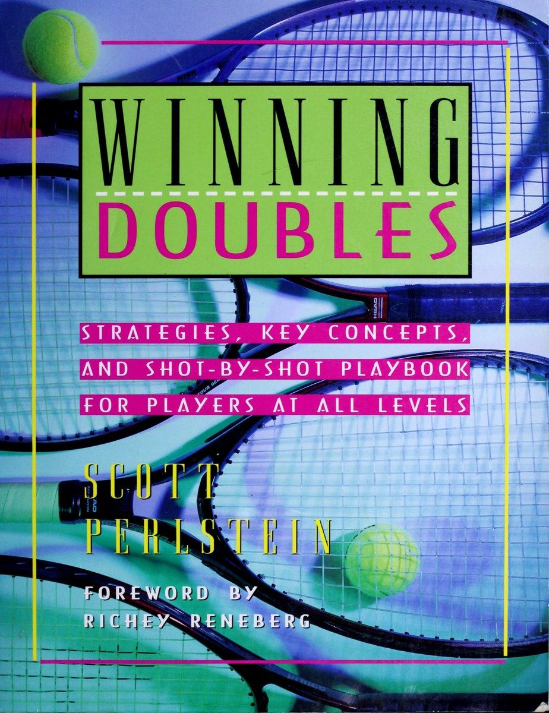
Đánh Đôi Chiến Thắng
Scott Perlstein · 1995
Bản dịch Việt ngữ này chỉ dùng cho mục đích học tập cá nhân, phi thương mại. Bản quyền tác phẩm gốc thuộc về tác giả và nhà xuất bản.
Lời giới thiệu
Thứ Hai, ngày 6 tháng 7 năm 1992. Bối cảnh: All England Club. Giải đấu: Wimbledon, giải lâu đời nhất và danh giá nhất trong mắt cả người hâm mộ lẫn tay vợt. Đáng lẽ giải đã kết thúc từ hôm trước. Nhưng vì trận chung kết đánh đôi dài lê thê và hấp dẫn đến khó tin giữa cặp John McEnroe và Michael Stich với cặp Jim Grabb và Richey Reneberg, giải vẫn chưa kết thúc. Không chỉ trận đấu kéo sang ngày hôm sau, mà khán giả còn được vào sân miễn phí để chứng kiến phần kết. Đây đúng là "món hời của thế kỷ" đối với người hâm mộ quần vợt, bởi vé Wimbledon là loại vé khó kiếm nhất trong các giải Grand Slam.
Các tay vợt đã cố kết thúc trận đấu từ tối hôm trước, nhưng không cặp nào tạo được cách biệt hai game cần thiết để giành chiến thắng. Cuối cùng, khi màn đêm buông xuống, trận đấu buộc phải tạm hoãn. Trời tối đến mức các tay vợt gần như không nhìn thấy bóng, và các bình luận viên truyền hình lo rằng đèn trên các máy quay không đủ ánh sáng để khán giả nhìn thấy bóng nữa. Tỷ số lúc này là hai set đều. Grabb và Reneberg thắng set một và set ba với tỷ số 7–5 và 6-3. McEnroe và Stich thắng set hai và set bốn, cả hai đều qua loạt tiebreak. Ở tỷ số 13 đều trong set năm, các tay vợt gặp nhau ở lưới và trọng tài giải Andy Mills được gọi vào.
McEnroe và Stich cuối cùng thắng 19-17 trong set năm đó vào thứ Hai — khép lại trận đánh đôi dài nhất trong lịch sử Wimbledon. Trận đấu kéo dài hơn 5 giờ, chưa kể ngày hôm sau. Dù bạn có tin hay không, trận đấu nổi tiếng này vẫn chưa sánh được với trận đánh đôi dài nhất trong lịch sử quần vợt nhà nghề, diễn ra vào tháng 2 năm 1968 ở tứ kết đánh đôi nam tại giải U.S. Indoor Championships ở Salisbury, Maryland. Mark Cox và Bobby Wilson đánh bại Charlie Pasarell và Ron Homberg với tỷ số 26-24, 17-19, 30-28; tổng cộng 144 game được đấu trong 6 giờ 23 phút. Đánh đôi không phải lúc nào cũng kéo dài cả ngày — trận ngắn nhất diễn ra ngày 13 tháng 7 năm 1914, ở trận chung kết nam giải Kent Championships tại Beckham, khi Norman Brooks và Tony Wilding đánh bại Arthur Gore và Herbert Roper Barntt 6—2, 6-1 chỉ trong 16 phút. Trận này diễn ra trước khi các tay vợt được cho nghỉ 20 giây giữa các điểm và 90 giây đổi sân sau mỗi game lẻ.
Dù bạn là tay vợt nhà nghề đang thi đấu trên sân cỏ Wimbledon hay một tay vợt trẻ, ít kinh nghiệm đang chơi trên sân Har-tru ở Central Park, đánh đôi là một trong những cách tuyệt vời nhất để giải trí, dành thời gian và gặp gỡ mọi người.
Năm nào tôi cũng dự giải Newsweek Championships ở Palm Springs. Trước khi thể thức thay đổi vào năm 1994, khán giả thường bắt đầu ra về từ 4 giờ chiều, đúng lúc các trận đánh đôi bắt đầu. Đến 6 giờ chiều, sân vận động gần như trống trơn, điều này rất tuyệt cho vợ tôi và tôi cùng những người bạn đồng hành Rosenstock, vì chúng tôi có thể xuống ngồi sát sân để xem nốt các trận còn lại. Đến 7 giờ tối, sân vận động trông như một "gói cước MCI" — chỉ dành cho bạn bè và gia đình! Lúc này, như bình luận viên thể thao Al Michaels từng nói, "Thay vì đọc số khán giả mua vé, sẽ dễ hơn nếu tôi chỉ nói cho các bạn biết ai đang có mặt ở đây."
Chúng tôi không bao giờ ra về cho đến khi quả bóng cuối cùng được đánh đi, vì chất lượng đánh bóng hay đến khó tin. Được ở gần các tay vợt như vậy, với quá ít khán giả xung quanh, chúng tôi thực sự cảm thấy như thể mình là một phần của trận đấu. Theo đánh giá của tôi, đây là phần tuyệt vời nhất của giải đấu — đánh đôi. Vì sao khán giả lại ra về và bỏ lỡ các nội dung đánh đôi vẫn là một điều bí ẩn với tôi. Xem các trận đánh đôi trình độ cao có thể mang tính hướng dẫn, truyền cảm hứng và, như đã nói ở trên, hấp dẫn và kịch tính.
Tôi dạy quần vợt sáu ngày một tuần, có hôm tới 10 giờ mỗi ngày. Một trong những động lực chính của tôi là sự tận tụy với việc tiến bộ. Tôi phải luôn cập nhật và không ngừng nỗ lực cải thiện lối chơi của mình, điều này cho tôi lợi thế tiếp thị rất lớn so với nhiều người dạy chuyên nghiệp khác. Tôi dành thời gian rời xa công việc và học trò để tham dự ít nhất ba giải nhà nghề lớn mỗi năm, và các nội dung đánh đôi là thứ tôi thích nhất. Tôi cũng tiếp tục thi đấu các giải với người đánh cặp bốn năm nay của tôi, Mark Jee. Cả hai chúng tôi đều thích sự cạnh tranh và tình đồng đội, và chưa bao giờ chúng tôi vui đến thế trên sân quần vợt. Việc vừa xem những tay vợt thi đấu quyết liệt vừa tự mình thi đấu không chỉ giúp tôi luôn cập nhật mà còn giúp tôi giữ được sự nhiệt huyết với môn thể thao này. Sự nhiệt huyết ấy lan sang cả các học trò của tôi. Đánh đôi đòi hỏi tinh thần đồng đội và hành động nhanh nhẹn, nhưng nhiều khi bốn tay vợt bước vào sân và bắt đầu chơi quần vợt mà không thực sự biết đánh đôi phải chơi thế nào. Đó là lý do tôi viết cuốn sách này. Mục đích của nó là giúp người đọc (người chơi) trở thành một tay đánh đôi giỏi hơn. Cuốn sách đề cập đến mọi trình độ của môn chơi. Dù bạn mới bắt đầu hay đang thi đấu chuyên nghiệp, bạn sẽ nâng lối chơi của mình lên một tầm cao mới nếu học được những bài học trong những trang sách này. Tôi bàn về các kiểu đánh đôi, vị trí đứng, chiến lược di chuyển, và cách giúp bản thân cùng nhau trở thành những người đánh cặp tốt hơn. Tôi cũng bàn về những vấn đề khác nhau nảy sinh trên sân giữa đối thủ với nhau và giữa đồng đội với nhau, cùng cách xử lý những tình huống đó.
Phần quan trọng nhất của cuốn sách này là sổ chiến thuật bằng hình vẽ cho chiến lược đánh đôi. Nếu bạn từng chơi bóng đá hay bóng rổ, bạn đã có một sổ chiến thuật để nghiên cứu và làm theo những tình huống có thể phát triển trong trận đấu. Tôi đã dựng nên 64 tình huống thi đấu xảy ra trên sân đánh đôi, cho thấy cả hai đội cách di chuyển và phản ứng trong từng tình huống. Với mỗi tình huống, bạn sẽ được dạy cú đánh cần thực hiện, nên đặt cú đánh đó ở đâu, và bạn cùng đồng đội nên đứng ở vị trí nào trên sân để đỡ cú đánh của bạn. Ngoài ra còn có một bộ hình vẽ giúp đội của bạn hiểu rõ hơn tình huống được trình bày. Tôi thường so sánh các tình huống thi đấu này với việc nạp một đĩa mềm vào máy tính. Phải mất chút thời gian để nạp chương trình, và cũng mất thời gian để học cách dùng chương trình máy tính đó. Nhưng một khi đã nạp xong, bạn chỉ cần bật máy tính lên là nó chạy.
Chìa khóa của mọi việc học là có một mục tiêu rồi hiểu rõ những phần cần nắm vững để đạt mục tiêu đó. Khi biết và hiểu điều gì sẽ xảy ra cả trong lẫn ngoài sân, bạn và đồng đội sẽ đạt được thành công lớn hơn với tốc độ nhanh hơn.
Những yếu tố của đánh đôi
Hầu hết những người chơi quần vợt không chuyên đều đánh đôi, vì có thể có nhiều người cùng ở trên sân một lúc hơn. Đây là một cân nhắc quan trọng nếu bạn phải trả phí thuê sân hoặc khi số sân có sẵn bị hạn chế. Hầu hết các giải đấu nghiệp dư dành cho người lớn cũng đánh đôi vì lý do này. Ngoài ra, khi tuổi tác và thể lực trở thành yếu tố, nhiều người chuyển sang đánh đôi. Đánh đôi có thể là một buổi tập căng thẳng gần như đánh đơn, dù bạn có một đồng đội cùng chia sẻ nhiệm vụ giao bóng và đỡ giao bóng.
Với trẻ em thực sự nghiêm túc muốn thi đấu ở trình độ cao, học đánh đôi là điều tối quan trọng, vì mọi đội của trường trung học và đại học đều thi đấu các trận đánh đôi. Tôi bảo các học trò nhỏ của mình hãy nhìn vào bảng đấu khi thi đấu một giải để xem có ai ở khu vực của mình để bắt cặp cùng không. Khi còn là một tay vợt nhỏ nhiều năm trước, tôi đã chơi ba năm cùng Kevin Conway, và chúng tôi không thua trận nào. Chúng tôi tiếp tục chơi cùng nhau ở đại học tại Wisconsin, và trải nghiệm đánh đôi thời niên thiếu chắc chắn đã khiến chúng tôi trở thành những tay đánh đôi đại học giỏi hơn. Ở trình độ nhà nghề, hầu hết các giải đều có nội dung đánh đôi. Nhiều tay vợt nhà nghề là chuyên gia đánh đôi, dù một số tay vợt xếp hạng cao chỉ để dành sức cho đánh đơn. Một số tay vợt nhà nghề dùng đánh đôi như cách luyện tập cho lối chơi đánh đơn của mình. Vì áp lực phải đuổi theo từng quả bóng ít hơn, không hiếm khi các tay vợt nhà nghề tận dụng buổi tập nhẹ nhàng vào những ngày nghỉ. Và còn cách nào tốt hơn để luyện kỹ năng ngoài chơi đánh đôi? Đây là chiến lược John McEnroe đã dùng. Như ông giải thích, đánh đôi cho phép ông luyện mọi kỹ năng để giữ phong độ sắc bén cho trận đánh đơn tiếp theo.
Hầu hết các giải trẻ và giải người lớn đều có nội dung đánh đôi cho nam và nữ, và có các giải đấu dành cho đánh đôi nam, nữ và đôi nam nữ ở mọi trình độ. Vì hầu hết người lớn chơi quần vợt đều đánh đôi, các giải quần vợt phong trào chủ yếu tập trung vào đánh đôi. Chìa khóa để trở thành một cặp đánh đôi giỏi là tìm được một người đánh cặp mà bạn thích chơi cùng. Mối quan hệ đồng đội đánh đôi cũng giống như mọi mối quan hệ đối tác khác; có những cặp phối hợp ăn ý với nhau, và có những cặp thì không. Tất nhiên, việc chơi lặp đi lặp lại với cùng một người đánh cặp giúp cả đội học cách vận hành tốt hơn như một khối thống nhất.
SÂN ĐÁNH ĐÔI
Cả đánh đơn lẫn đánh đôi đều được chơi trên một sân dài 78 feet, chia ngang ở giữa bằng một tấm lưới. Như vậy mỗi bên có 39 feet chiều dài đánh bóng. Sân đánh đơn rộng 27 feet. Sân đánh đôi mở rộng thêm 4,5 feet về mỗi bên, thành 36 feet. Vùng mở rộng đó gọi là hành lang biên. Chiều cao lưới phải luôn là 3 feet ở giữa sân và 3 feet 6 inch ở hai đường biên dọc.
BỐN TAY VỢT
Có bốn tay vợt trên sân đánh đôi: Tay vợt A, người giao bóng; Tay vợt B, đồng đội của người giao bóng; Tay vợt C, người đỡ giao bóng; và Tay vợt D, đồng đội của người đỡ giao bóng. Mỗi tay vợt chiếm một vị trí nhất định trên sân, và mỗi vị trí ấy gắn với những trách nhiệm cụ thể. Trong đánh đôi, một người chịu trách nhiệm nửa bên phải
Bốn vị trí cơ bản
CÁC VỊ TRÍ CƠ BẢN • Vị trí người giao bóng: ở giữa bên mà tay vợt chịu trách nhiệm, phía sau đường cuối sân.
• Vị trí đồng đội của người giao bóng: ở giữa bên mà tay vợt chịu trách nhiệm, trên vạch giao bóng. Để tìm vị trí này, hãy chia đôi khoảng giữa lưới và vạch giao bóng, rồi lùi lại một bước nhỏ về phía vạch giao bóng.
• Vị trí người đỡ giao bóng: gần đường biên ngoài của sân đánh đơn, quanh khu vực đường cuối sân.
• Vị trí đồng đội của người đỡ giao bóng: vạch giao bóng ở giữa khu vực mà tay vợt chịu trách nhiệm. (Một tay vợt ít kinh nghiệm hơn nên đứng trên vạch giao bóng ở giữa khu vực của mình chịu trách nhiệm. )
NHỮNG YẾU TỐ ĐỘI BẠN PHẢI GIẢI QUYẾT
Ai đánh bên nào?
Không bên nào dễ hay khó đỡ giao bóng hơn. Khi bạn đánh đơn, bạn đỡ giao bóng từ cả hai bên. Tuy nhiên, trong đánh đôi, không hiếm khi một tay vợt thích một bên hơn, thường là bên thuận tay. Vì nhiều tay vợt thiếu kinh nghiệm sợ cú trái tay của mình, họ chỉ muốn đánh bên thuận tay của sân, thường được gọi là ô deuce. Nhưng điều họ không nhận ra là chỉ cần bước ra thêm một bước, người đỡ giao bóng thực ra sẽ đánh nhiều cú trái tay hơn ở trình độ cao hơn so với khi đứng ở ô trái tay hay ô "lợi thế" (ad). Để tạo thuận lợi cho cú đỡ giao bóng trái tay chéo sân, bạn nên bước ra một bước về phía hành lang biên để có thể xoay hông trước của mình một cách rõ rệt về phía điểm đánh chéo sân.
Bạn và đồng đội phải thống nhất xem ai đánh bên nào. Khi tập, hãy đổi qua đổi lại để xem cách nào hiệu quả nhất cho đội của bạn. Thường khi bạn thi đấu các trận đồng đội hoặc giải đấu, bạn sẽ được ghép với một người đánh cặp xa lạ hoặc một người thích cùng bên sân như bạn. Vì phải có người đánh bên không quen, hãy tránh vấn đề này bằng cách tập luyện cả hai bên.
Nếu bạn thua set đầu, thường thì đổi bên đỡ giao bóng không phải là ý hay. Thay vì tập trung vào việc mình đang đánh bên nào hay không đánh bên nào, hãy tập trung hơn vào quả bóng. Hãy nhìn người đánh bóng chạm bóng; theo dõi đường đi của vợt đối thủ và hướng của quả bóng bay tới.
Thời điểm duy nhất có thể đáng để đổi bên là khi bạn và đồng đội cảm thấy mình bị lép vế ngay từ đầu. Tuy nhiên, thường thì cả hai bạn chỉ cần theo dõi bóng tốt hơn.
Ai giao bóng trước?
Thường thì người giao bóng mạnh hơn sẽ giao trước, vì trong một set 6-4, người giao bóng mạnh hơn giao ba lần, đồng đội của họ hai lần. Nếu nắng và gió là những yếu tố ảnh hưởng và một tay vợt có cú giao bóng yếu hơn, thì người đó nên là người giao bóng ngược gió. Đừng làm giảm sức mạnh của người đánh cặp mạnh hơn bằng cách bắt người đó giao bóng ngược gió; nếu không, cả đội sẽ có hai người giao bóng yếu.
Thứ tự giao bóng
Trong đánh đôi, quyền giao bóng luân phiên giữa hai đội. Tay vợt A giao bóng, rồi đến Tay vợt C. Tiếp theo đồng đội của Tay vợt A giao bóng, sau đó là đồng đội của Tay vợt C. Thứ tự này được duy trì suốt set. Khi set kết thúc, mỗi đội có thể đặt lại thứ tự giao bóng mới cho mình. Đội nào cũng nên để người giao bóng mạnh hơn của mình bắt đầu mỗi set mới. Như vậy, nếu Tay vợt C giao bóng ở game thứ hai, thứ sáu và thứ mười của set một, set mà đội cô thắng 6-4, thì cô có thể giao bóng ở game đầu tiên của đội mình trong set mới. Giả sử đội cô lại thắng 6-4, Tay vợt C sẽ giao bóng sáu lần và đồng đội cô bốn lần. Một thứ tự giao bóng mới có thể là một lợi thế lớn
Nhiều tay vợt thích đỡ giao bóng ở game đầu vì nó cho họ một game để hòa nhập vào trận đấu trước khi chuyển sang thế tấn công bằng cú giao bóng. Hầu hết những người giao bóng mạnh thích giao trước vì họ tin rằng điều đó cho họ lợi thế tâm lý và giữ họ ở thế tấn công. Một lý do để chọn bên trước là để đánh thuận gió thay vì ngược gió trong hai trong ba game đầu tiên, hoặc để không phải giao bóng ngược nắng ở game giao bóng đầu tiên của mình.
Loạt tiebreak
Loạt tiebreak trong đánh đôi tương tự thứ tự giao bóng thông thường. Tay vợt A giao một điểm, rồi hai đội luân phiên người giao bóng sau mỗi hai điểm. Sáu điểm được đấu trước khi hai đội đổi bên. Các đội đổi bên sau mỗi sáu điểm tiếp theo, điều này khiến một hoặc nhiều người giao bóng phải giao bóng ở một bên khác. Khi nắng và gió là những yếu tố trong trận đấu, sự thay đổi này đòi hỏi thêm sự tập trung và bản lĩnh tinh thần. Đội đầu tiên thắng bảy điểm trở lên với cách biệt hai điểm sẽ thắng set.
KHỞI ĐỘNG
Trước khi trận đấu bắt đầu, các tay vợt khởi động với nhau một lúc. Ở trình độ giải đấu, chỉ được phép khởi động 5 phút trước khi phải bắt đầu thi đấu. Các tay vợt chuyên nghiệp đã khởi động rất nhiều ở nơi khác và dùng khoảng thời gian này như buổi khởi động cuối cùng.
Chuẩn bị các cú đánh cho trận đấu
Đáng tiếc thay, nhiều tay vợt mới chơi không hiểu ý nghĩa của việc khởi động, đó là nhanh chóng chuẩn bị các cú đánh của bạn cho trận đấu sắp bắt đầu. Quá thường xuyên, các tay vợt dùng thời gian khởi động một cách không đúng để luyện những cú dứt điểm, hoặc cố tình đánh kém để đánh lạc hướng đối thủ. Đôi khi, một tay vợt đơn giản là không thể đánh trả bóng. Cả ba trường hợp đều dẫn đến việc không ai được khởi động. Mỗi tay vợt có nghĩa vụ khởi động cho đối thủ và nên đánh trả bóng với tốc độ vừa phải đến tốt.
Một tay vợt nên khởi động tất cả các kỹ năng — các cú đánh, vô-lê, giao bóng và đập bóng trên cao — trước khi trận đấu bắt đầu. Dù nhiều tay vợt mới thích trì hoãn việc tập giao bóng cho đến lượt mình trong trận, điều này không được phép. Vì trận đấu phải diễn ra liên tục một khi game đã bắt đầu, các tay vợt nên đánh hai ba cú giao bóng, rồi để đối thủ đánh hai ba cú trong lúc khởi động. Nếu một người giao bóng cứ tiếp tục đánh những cú giao bóng tập vào lưới, người đó nên trả bóng qua lưới thay vì cứ cố giao bóng cho được. Nếu không, đối thủ sẽ không có thời gian khởi động cú giao bóng của mình. Điều này không công bằng và không được phép.
Khởi động là lúc để định hình tông giọng của trận đấu. Là một tay vợt, bạn ra sân để thi đấu, không phải để làm kẻ khó chịu. Đừng bao giờ cố chọc tức đối thủ trước khi trận đấu bắt đầu, nếu không bạn sẽ phải gánh chịu một trận đấu căng thẳng, gay gắt, nơi thời gian trôi như rùa bò. Tôi bảo tất cả học trò của mình rằng họ phải khởi động đầy đủ nửa tiếng trước khi vào trận. Như vậy, việc khởi động trong trận thực sự không cần thiết. Nếu bạn dùng set đầu làm buổi khởi động, bạn sẽ luôn bị dẫn điểm và có nguy cơ trao cho đối thủ một thế trận không thể ngăn cản. Nếu đối thủ của bạn không thể hoặc không chịu khởi động cho bạn, đó là vấn đề của họ; bạn vẫn sẽ sẵn sàng thi đấu.
PHÉP TẮC TRONG ĐÁNH ĐÔI
Dọn sân
Khi bạn là người đứng lưới và cú giao bóng đầu tiên của đồng đội giao bóng của bạn vào lưới, hãy dọn quả bóng ra khỏi sân. Hãy để người giao bóng giữ sự tập trung vào nhịp điệu giao bóng và không bị phân tâm bởi quả bóng nằm đó.
Giao tiếp Trong đánh đôi, bạn và đồng đội được phép giao tiếp trong lúc đánh điểm khi bóng ở bên phần sân của bạn. Hét lên "Của bạn" hay "Tôi lấy" là một ý hay để chắc chắn rằng cả hai đều biết ai sẽ đánh bóng. Vì người không đánh bóng thường có tầm nhìn tốt hơn về cú đánh và có thể xác định bóng sẽ rơi vào hay ra ngoài, người đó nên hét lên “Nảy đi” hoặc “Không”. Và đừng quên hét “Lùi lại” khi bạn đã đánh một cú tồi, chẳng hạn một cú lốp ngắn, có thể gây hại cho đồng đội. Nhưng bạn phải nói thật nhanh. Nếu bạn chờ đến khi đối thủ sẵn sàng đánh rồi mới quát chỉ dẫn, bạn đã vượt qua ranh giới của sự trao đổi đúng mực. Đối thủ có thể phàn nàn bị xao nhãng, khiến bạn mất điểm.
Va vợt
Nếu cả hai tay vợt cùng lao vào quả bóng và va vợt vào nhau, pha bóng vẫn hợp lệ miễn là chỉ có một cây vợt chạm bóng. Tuy nhiên, nếu Tay vợt A sượt nhẹ quả bóng và khi bóng đổi hướng, Tay vợt B đánh nó qua lưới, đó là lỗi chạm bóng hai lần, và đội đó mất điểm.
Phán đoán đường biên
Mọi đường biên đều tốt; nếu bất kỳ phần nào của quả bóng chạm vào bất kỳ phần nào của đường biên, bóng vẫn tiếp tục được đánh. Bạn càng ở xa quả bóng, càng khó phán đoán chính xác. Do hiện tượng thị sai — sự dịch chuyển biểu kiến của một vật khi nhìn từ hai điểm khác nhau — nhiều quả bóng rơi gần đường biên có thể trông như ra ngoài nhưng thực tế lại vào trong. Khi tôi ở trên lưới và quay lại để phán đoán ở đường cuối sân, tôi biết từ kinh nghiệm rằng dù quả bóng trông như rơi ra ngoài màu sân, trừ khi tôi thấy bóng ra ngoài ít nhất 4 inch, thì thực tế nó đã rơi vào trong sân.
Hãy rộng lượng với các phán đoán đường biên của bạn. Hãy nhớ rằng khi bạn thi đấu một trận, đối thủ của bạn đang cố đánh bại bạn. Nếu bạn khiến họ cảm thấy bạn phán đoán đường biên sai, bạn chỉ đang cho họ thêm động lực để đánh bại bạn. Trong hầu hết trường hợp, nếu bạn phán đoán đường biên rộng lượng, đối thủ của bạn cũng sẽ đáp lại như vậy.
Khi bạn và đồng đội nhìn quả bóng khác nhau
Cả hai người đánh cặp đều chịu trách nhiệm phán đoán đường biên ở bên phần sân của mình; tuy nhiên, người ở gần đường biên hơn có phán đoán dễ hơn. Dù vậy, một câu hỏi luôn nảy ra là phải làm gì khi bạn và đồng đội nhìn quả bóng khác nhau. Tôi bảo học trò của mình rằng nếu một người đánh cặp thấy bóng vào, thì phải gọi là bóng tốt. Chẳng ích gì khi nổi giận và tự hỏi sao đồng đội lại có thể nghi ngờ sự chính trực của bạn hay không ủng hộ bạn. Hãy nhớ rằng bạn chỉ đang phán đoán một cú đánh quần vợt. Nếu bạn quên điều này và để cái tôi xen vào, bạn sẽ là một người đánh cặp tồi.
Trong bất kỳ hoàn cảnh nào bạn cũng không nên dung túng cho một phán đoán đường biên không chính xác của đồng đội mình. Trong một trận gần đây, một tay vợt nói với đối thủ rằng cô thấy xấu hổ vì những phán đoán đường biên kém cỏi của đồng đội. Nhưng vì cô không đảo ngược quyết định của đồng đội, những phán đoán tồi đó cũng trở thành phán đoán tồi của chính cô.
Có lần, để kiểm nghiệm tầm quan trọng của việc phán đoán đường biên chính xác, hai người bạn của tôi là Steve và Greg đánh với nhau hai set. Ở set đầu, Steve gọi mọi quả bóng sát biên là ra ngoài; Greg cũng làm y vậy ở set hai. Người được phép phán đoán sai đều thắng cả hai lần với cùng tỷ số, 6-1.
Phải làm gì khi đối thủ phản đối phán đoán đường biên của bạn
Nếu cả bạn và đồng đội đều chắc chắn, hãy giữ nguyên phán đoán của mình. Nhưng nếu quả bóng rơi gần đường biên, có lẽ đối thủ của bạn có tầm nhìn tốt hơn về điểm rơi của cú đánh. Đồng đội và tôi thường nói: "Chúng tôi thấy bóng ra ngoài, nhưng nếu bạn thấy bóng vào, cứ lấy điểm." Trong bốn năm Mark và tôi chơi cùng nhau, chúng tôi chỉ bị thắc mắc hai lần — và một lần là khi chúng tôi đánh một quả bóng mà đối thủ nghĩ là ra ngoài! Nếu còn nghi ngờ, hãy phán đoán theo hướng có lợi cho đối thủ. Điều này dẫn đến một điểm khác. Hãy gọi những quả bóng sát biên là vào, đặc biệt với những cú giao bóng nhanh. Không có máy Cyclops, loại máy tự động phán đoán đường biên, thì việc gọi một cú giao bóng sát biên là ra ngoài là quá khó. Dù đội đánh bóng thường có tầm nhìn tốt hơn về điểm rơi của quả bóng (có thể trông như ra ngoài), bạn phải luôn sẵn sàng đánh quả bóng đó phòng khi đối thủ gọi nó là vào và tiếp tục chơi.
Phải làm gì khi đối thủ phán đoán đường biên sai
Ai cũng có lúc phán đoán sai. Tuy nhiên, một khi đối thủ của bạn đã phán đoán sai hơn hai lần, bạn phải kiểm soát tình hình vì hai lý do. Thứ nhất, rất dễ nổi nóng khi bạn cảm thấy bị lừa; rồi sự tập trung của bạn trở nên yếu ớt và cả đội sụp đổ. Thứ hai, rất khó chơi khi các đường biên "lơ lửng". Nếu bạn sợ đánh những cú đánh của mình vì chúng có thể rơi quá gần đường biên và bị gọi là ra ngoài, bạn sẽ bắt đầu chùn tay, nghĩa là bạn đang đánh mất phong độ. Đừng để điều này xảy ra. Trong một trận đánh đôi, một người bạn của tôi đã nhảy qua lưới sau một phán đoán đường biên tồi khác và lập luận đầy sức thuyết phục chống lại mọi phán đoán đường biên sát biên hay sai lệch trong tương lai. Biện pháp cực đoan này không được khuyến khích!
Nếu các phán đoán đường biên bị nghi ngờ, hãy yêu cầu trợ giúp về đường biên sau hai lần tranh cãi. Nếu bạn đang thi đấu một giải, hãy yêu cầu một trọng tài đường biên. Nếu bạn đang chơi một trận trong giải đấu đồng đội, hãy đề nghị đội trưởng hai đội cử một người quan sát khách quan từ mỗi đội. Nếu bạn đang chơi với một người bạn mà thị lực đáng ngờ hoặc là kẻ cố tình gian lận, hãy cân nhắc tìm một người bạn khác!
• Khi chơi một trận trong giải đấu đồng đội: Hãy lịch sự đề nghị đối thủ yêu cầu đội trưởng của họ — và bạn yêu cầu đội trưởng của mình — cử một trọng tài đường biên vì hai bên bất đồng về đường biên.
• Khi chơi một giải đấu: Hãy lịch sự nói với đối thủ rằng bạn phải gọi ban tổ chức giải vì hai bên đang bất đồng về đường biên. Ban tổ chức giải sẽ cử một trọng tài đường biên.
• Khi chơi một trận giao hữu: Nếu bạn của bạn liên tục phán đoán đường biên sai, hãy tìm một người bạn mới để chơi cùng.
Một số điểm phép tắc khác
• Quần vợt là một môn thể thao văn minh, đề cao sự công bằng và lịch sự.
• Hãy để bóng ở đường cuối sân gần vạch giữa sân khi đổi bên, trừ khi bên bạn sẽ giao bóng tiếp.
• Đừng đánh trả những quả giao bóng "hỏng". Hãy để chúng bay ra tường sau.
• Đừng nói chuyện khi đối thủ của bạn đã sẵn sàng đánh quả bóng.
• Nếu một quả bóng từ sân khác lăn vào sân bạn trong lúc đối thủ đang thực hiện động tác giao bóng hoặc bất cứ lúc nào khác, hãy đề nghị đánh lại điểm đó (let).
• Luôn đọc tỷ số trước mỗi điểm giao bóng và đọc tỷ số game vào đầu mỗi game.
Bên nào?
Để quyết định ai giao bóng, các tay vợt nhà nghề tung đồng xu. Với những người khác, một tay vợt xoay vợt. Mỗi cây vợt có một mặt trên và mặt dưới khác biệt. Ví dụ, khi dùng vợt Wilson, tay vợt gọi "M" hoặc "W", vì phần đáy của chuôi vợt có chữ W cho Wilson. Người thắng lượt xoay này có thể chọn giao bóng hoặc đỡ giao bóng, chọn một bên và đặt gánh nặng quyết định giao hay đỡ lên đối thủ, hoặc để đối thủ chọn trước.
Những luật chơi khác
Có một vài luật chơi kỳ khôi mà bạn nên biết: • Bóng không ra ngoài cho đến khi nó được gọi là ra ngoài.
• Nếu bóng chạm vào bất kỳ phần nào trên cơ thể bạn, bất kể bạn đang đứng trong hay ngoài sân, điểm tự động thuộc về đối thủ. Như vậy, nếu bóng rõ ràng bay dài và bạn bắt nó khi chưa nảy, bạn mất điểm! Đừng chạm vào một quả bóng ra ngoài cho đến khi nó đã nảy và được gọi là ra ngoài. Luật lệ tính đến cả khả năng một cơn bão xảy ra và thổi quả bóng trở lại sân. Dù bạn đang cố gắng đầy nỗ lực để tránh bị bóng đập nhưng bóng sượt vào chân bạn, bạn vẫn mất điểm. Điều này cũng áp dụng cho cú giao bóng. Bóng không được chạm vào bạn hay đồng đội bạn trước khi nó nảy ra ngoài.
• Bạn phải dùng vợt để đánh bóng qua lưới. Có lần tôi đang đuổi theo một quả bóng thấp trong một trận đấu và suýt chạm được nó, dù nó chạm vào chân tôi và bay qua lưới. Dù đối thủ nghĩ rằng tôi đã đánh bóng bằng vợt, tôi có nghĩa vụ phải nói với anh ta rằng đó là điểm của anh. Bạn có thể dùng bất kỳ phần nào của vợt để đánh bóng. Câu trả lời quen thuộc khi bóng chạm vào cạnh vợt và bay qua là: "Tôi đã trả tiền cho cả cây vợt, nên tôi định dùng cả cây vợt."
• Bạn chỉ được đánh bóng một lần ở bên phần sân của mình. Có một ranh giới rất mong manh giữa một cú "giữ bóng", trong đó cú đánh là một động tác liên tục nhưng bóng lăn trên vợt bạn rồi bị ném qua lưới như một cú jai alai, và một cú chạm bóng hai lần, trong đó bóng rời khỏi vợt rồi bạn chạm vào nó lần nữa trước khi nó qua lưới.
• Bạn không được chạm vào lưới bằng vợt hoặc bất kỳ phần nào trên cơ thể hay quần áo của bạn cho tới khi bóng đã nảy hai lần. Nếu bạn làm vậy, điểm kết thúc, bất kể rõ ràng đến đâu rằng cú đánh của bạn là không thể đỡ được.
• Nếu bạn chạm vào lưới hoặc vươn qua lưới, hoặc bóng chạm vào bất kỳ phần nào trên cơ thể bạn hoặc nảy hai lần, bạn có nghĩa vụ phải tự gọi những lỗi này chống lại chính mình ngay lập tức. Nếu bạn nghi ngờ điều này đã xảy ra với đối thủ, hãy tiếp tục đánh điểm đó. Khi kết thúc, hãy hỏi xem bóng có nảy hai lần không hoặc nói rằng một phần quần áo hay bộ phận cơ thể đã chạm vào lưới. Vì đây là những phán đoán tự thực hiện, người quyết định cuối cùng là sự chính trực của tay vợt phạm lỗi.
• Bạn phải để bóng bay qua lưới trước khi đánh nó; bạn không được ngăn cản bóng đến bên phần sân của mình.
• Đôi khi, do xoáy hoặc do gió, quả bóng rơi xuống bên phần sân của bạn rồi xoáy hoặc bị gió thổi ngược trở lại qua lưới trước khi bạn kịp chạm vào nó. Một khi bóng đã rơi xuống bên phần sân của bạn, bạn có thể vươn qua lưới để đánh nó (đây là lần duy nhất điều này được phép), miễn là bạn không chạm vào lưới. Trừ khi bạn chạm vào bóng, bạn mất điểm, vì bị coi là bạn không có trách nhiệm đỡ nó.
• Nếu quả bóng bạn đánh chạm vào bất cứ thứ gì ở trên hoặc phía trên sân, bạn bị coi là đã đánh trượt. Như vậy, nếu có dây điện hoặc đèn phía trên và bóng chạm vào chúng, bạn mất điểm. Thứ duy nhất có thể bị chạm là cột lưới, vốn được coi là một phần của sân. (Tôi chưa từng thấy điều này xảy ra.) Tuy nhiên, nếu một cú đánh rất rộng được trả lại bằng cách đi vòng quanh lưới thay vì qua trên lưới, điều này là hợp lệ.
ĐÁNH ĐÔI — MÔN CHƠI XÃ GIAO
Một Chủ Nhật nhiều năm trước, khi tôi mới bắt đầu hẹn hò với vợ tôi, Karen, chúng tôi được mời chơi đánh đôi nam nữ với một cặp vợ chồng khác ở câu lạc bộ của họ. Khi đến nơi, Karen vô cùng kinh ngạc khi thấy có bao nhiêu ông chồng đang tương tác với vợ mình. Quần vợt đánh đôi là một cách tuyệt vời để giao lưu, cả với vợ/chồng hay người bạn đời của bạn lẫn với những cặp vợ chồng khác. Chúng tôi đã gặp một số người bạn thân nhất của mình qua quần vợt, và chơi quần vợt với họ vẫn tiếp tục là một phần quan trọng của những tình bạn này. Thực tế, chúng tôi thường cùng nhiều cặp vợ chồng đó đi dự các giải quần vợt. Tất cả chúng tôi đều thích xem và chơi quần vợt và thấy đó là cách tuyệt vời để dành thời gian bên nhau.
Những luật bất thành văn
Khi bạn chơi quần vợt giao lưu, có những quy tắc ứng xử bất thành văn. Ví dụ, nếu tất cả người chơi đều có trình độ ngang nhau, ai cũng có thể chơi hết sức. Nhưng khi một hoặc nhiều người chơi giỏi hơn hẳn, những người giỏi hơn phải giảm nhẹ cường độ.
Một số người chơi gặp khó khăn khi thích nghi với quần vợt giao lưu; họ lầm tưởng rằng giảm nhẹ sức mạnh sẽ hủy hoại lối chơi của mình, nhưng điều đó không đúng. Hãy nghĩ về quần vợt như có ba nút: nút thử sức, nút tập trung và nút sức mạnh. Trong quần vợt giao lưu, chỉ điều chỉnh nút sức mạnh. Đừng nhầm lẫn việc giảm nhẹ lối chơi với việc giảm tập trung hay nỗ lực.
Gần đây, một học trò của tôi kể rằng cô và chồng đi dự một buổi tiệc quần vợt. Hai người đang đánh bại một cặp khác thì đột nhiên ông chồng của cặp kia nổi đóa. Anh ta đang chơi thứ quần vợt "sống còn" — phát điên mỗi khi anh hoặc vợ anh đánh hỏng một cú. Đội của học trò tôi thắng set đó, nhưng khi kết thúc, ông X tìm người nữ đánh cặp giỏi nhất có mặt ở bữa tiệc để trả đũa. Học trò tôi cảm thấy bị kẹt, nên cô và chồng chơi thêm một set với nửa vời, nhưng họ chỉ mong sớm được rời sân. Ông X đã phá vỡ giao kèo xã hội — có nơi để chơi thứ quần vợt sống còn và có nơi để chơi quần vợt giao lưu.
Quần vợt sống còn nên dành riêng cho các giải đấu; nếu bạn chơi với cường độ như vậy trong những tình huống giao lưu, bạn là người sai. Khi tôi chơi quần vợt với vợ mình, tôi đang cố giúp cô ấy cải thiện lối chơi. Tôi coi khoảng thời gian này là thời gian của cô ấy, không phải của tôi. Tôi vẫn tập trung và vẫn cố gắng, nhưng đây không phải là lúc hay nơi để tôi rèn luyện lối chơi thi đấu của mình. Tôi chỉ chơi đánh đôi nam nữ với một cặp vợ chồng khi người chồng ngang tài ngang sức với tôi và cả hai chúng tôi đều giữ cường độ nhẹ nhàng, hoặc khi mọi người đều ngang trình với vợ tôi. Khi đó tôi chơi như thể đang dạy một bài học — tôi chỉ giữ bóng trong cuộc và để mọi người đánh.
Những người chơi
Như đã nói ở Chương 1, bốn người chơi trên sân đôi được gọi là Tay vợt A, B, C và D. Trong chương này, những động tác cơ bản mà mỗi người chơi có thể thực hiện là đã bàn.
TAY VỢT A: NGƯỜI GIAO BÓNG
Người giao bóng đứng sau đường cuối sân, gần giữa bên phần sân của mình, và phải quyết định trước là sẽ giao bóng rồi lên lưới (tiến vào phía lưới) hay giao bóng rồi ở lại phía sau.
Giao bóng và lên lưới
Trước khi thực hiện cú giao bóng, người giao bóng phải quyết định có lên lưới hay không. Bạn không thể chờ để đánh giá chất lượng cú giao bóng rồi mới quyết định giao bóng rồi lên lưới, vì đến lúc bạn quyết định di chuyển thì bóng đã ở bên phần sân của bạn lần nữa.
Tung bóng lên và ra phía trước bạn. Đà giao bóng phải đưa bạn tiến vào sân để hỗ trợ việc lao lên lưới. Nếu tung bóng lệch sang bên hoặc ra sau người, bạn sẽ không bao giờ lấy lại được thăng bằng kịp thời để di chuyển lên lưới.
Khi lên lưới, mục tiêu của bạn phải là tới ít nhất là vạch giao bóng. Nếu không thể tiến xa đến vậy, bạn sẽ dễ bị ăn bóng vào mũi chân khi đỡ giao bóng hoặc bị đánh vượt biên.
BƯỚC CHẺ
Vào một thời điểm nào đó khi giao bóng và lên lưới, bạn cần thực hiện một bước giữ thăng bằng trung tính gọi là bước tách (split step). Một số người chơi thích làm điều này khi cú giao bóng của họ chạm sân bên kia; những người khác thực hiện bước tách ngay trước khi người đỡ giao bóng đánh bóng. Tôi đã thành công nhất khi hướng dẫn người chơi tới vạch giao bóng trước rồi mới tách bước. Dù sao đi nữa, nguyên tắc là giữ thăng bằng để bạn có thể phản ứng với cú đỡ giao bóng đang tới.
Cú vô-lê đầu tiên nên được xử lý như một cú vào sân (approach shot). Ở cú vô-lê đầu tiên, bạn thường ở quá xa lưới để có thể đánh một cú ăn điểm dễ dàng, nên hãy tạo thế cho đội bằng một cú vô-lê đi sâu về phía bên phần sân của người đỡ giao bóng.
NHỮNG ĐIỂM MẤU CHỐT KHI GIAO BÓNG VÀ LÊN LƯỚI
1. Quyết định trước là sẽ lên lưới.
2. Chạy nước rút lên lưới.
3. Đánh sâu; cú vô-lê đầu tiên được xử lý như một cú vào sân.
4. Nhập vị trí với đồng đội ở vạch ⅝ ngay trước cú đánh kế tiếp.
Giao bóng và ở lại phía sau
Lựa chọn thứ hai là giao bóng rồi ở lại phía sau. Cũng như khi giao bóng lên lưới, bạn phải quyết định ở lại phía sau trước khi đánh cú giao bóng. Bạn vẫn nên tung bóng ra phía trước để tối đa hóa cú giao bóng, rồi lấy lại thăng bằng và lùi về sau đường cuối sân vào thế đứng đánh nền. Nếu bạn giao bóng tốt nhưng các cú đỡ giao bóng bị đánh nát, ở lại phía sau là hợp lý. Nếu bạn giao bóng lên lưới và hỏng nhiều cú vô-lê, hãy cân nhắc ở lại phía sau. Nếu cú giao bóng của bạn yếu, đừng cố ép diễn biến—hãy ở lại phía sau.
NHỮNG ĐIỂM CẦN GHI NHỚ KHI GIAO BÓNG VÀ Ở LẠI PHÍA SAU
1. Quyết định trước là sẽ ở lại phía sau.
2. Nhanh chóng trở lại vị trí sau đường cuối sân.
3. Đánh sâu sang sâu, tránh xa người đứng lưới của đối phương.
Tầm quan trọng của cú giao bóng trong đánh đôi
Dù bạn chơi đánh đơn hay đánh đôi, điều quan trọng là đưa cú giao bóng thứ nhất vào ô giao bóng để đưa bóng vào cuộc. Cú giao bóng thứ nhất, ở mọi trình độ, phải bay với tốc độ dặm/giờ cao hơn cú giao bóng thứ hai. Vì cú giao bóng thứ nhất phải là "vũ khí" của bạn, bạn có thể gây nhiều sát thương hơn cho đối thủ bằng cách đưa cú giao bóng thứ nhất vào cuộc. Đưa được cú giao bóng thứ nhất vào cuộc cũng giữ áp lực tâm lý không đè lên bạn mà chuyển sang đối thủ, vì sau đó họ phải đối phó với cú giao bóng thuộc cấp vũ khí của bạn. Áp lực lại quay về phía bạn khi đánh cú giao bóng thứ hai, vì nếu bạn hỏng lần nữa, đối thủ thắng điểm. Hơn nữa, nếu đưa cú giao bóng thứ nhất vào cuộc, bạn không thể giao bóng hai lần hỏng (double-fault). Trong các trận được truyền hình, bình luận viên luôn nói về hai số liệu: tỷ lệ giao bóng thứ nhất thành công và số điểm thắng khi cú giao bóng thứ nhất vào cuộc. Ở trình độ chuyên nghiệp, khi cú giao bóng thứ nhất vào cuộc, đội giao bóng thắng ít nhất 80% số điểm.
Một số chuyên gia gợi ý nên đánh cú giao bóng với 75% lực và nhiều xoáy hơn để có tỷ lệ giao bóng thứ nhất vào cuộc cao hơn. Gợi ý này hợp lý nếu bạn không có cú giao bóng mạnh hoặc nếu cú giao bóng thứ hai của bạn sụt giảm lực quá nhiều; tuy nhiên, ở trình độ cao hơn, điều này không còn đúng nữa. Nếu bạn có cú giao bóng "hỏa tiễn" mạnh và cú giao bóng thứ hai tốt, hãy cứ dốc sức cho cú giao bóng thứ nhất. Nếu cú giao bóng của bạn mạnh đến vậy, bạn sẽ kiếm được nhiều điểm miễn phí. Sẽ là vô nghĩa nếu giảm bớt lực của bạn.
Dù bạn theo cách giao bóng nào, đừng bao giờ giao bóng hai lần hỏng. Giao bóng hai lần hỏng cho đối thủ một điểm miễn phí. Nếu bạn thường xuyên giao bóng hai lần hỏng, đồng đội của bạn sẽ phát bực, vì họ không có cách nào giúp bạn thắng điểm nếu bạn không thể đưa bóng vào cuộc. Ngay cả những cú giao bóng yếu ớt cũng tốt hơn là không giao được bóng; bạn phải khởi đầu điểm.
Khi nào Tay vợt A điều chỉnh vị trí?
Tay vợt A có thể di chuyển quanh để thay đổi góc giao bóng hoặc giúp đặt bóng giao bóng tốt hơn nhưng phải ở bên phần sân của mình và trong ranh giới sân, giữa vạch giữa sân và đường biên dọc của hành lang biên đôi.
TAY VỢT B: ĐỒNG ĐỘI CỦA NGƯỜI GIAO BÓNG
Đồng đội của người giao bóng đứng ở giữa nửa sân của mình, tại một điểm tưởng tượng gọi là vạch ⅝. Để tìm vạch này, hãy chia đôi khoảng cách giữa lưới và vạch giao bóng. Rồi lùi lại một bước nhỏ về phía vạch giao bóng. Nhiều người chơi thích đứng quá gần hành lang biên, điều này vô tình khiến đồng đội của họ phải bao quát cả một sân đánh đơn. Người đứng lưới phải bao quát toàn bộ nửa sân, chứ không chỉ hành lang biên.
Nhiều người chơi cũng thích đứng rất gần lưới. Điều này mời gọi một cú lốp bóng, vì còn quá nhiều khoảng sân trống phía sau họ. Hơn nữa, đứng quá gần lưới khiến người đứng lưới có ít thời gian phản ứng hơn, khiến họ dễ bị đánh bởi những cú bóng mạnh. Đứng quá gần cũng gây vấn đề cho người đồng đội giao bóng, vì người giao bóng có quá nhiều đất phải bao quát trước khi nhập vị trí với người đứng lưới.
Cướp bóng (poach) Khi bóng được đánh xa khỏi người đứng lưới sang phía đối diện của sân, Tay vợt B, người đứng lưới, có thể di chuyển ngang qua sân để đón cú đánh này. Động tác di chuyển ngang qua sân sang phía bên kia này gọi là cướp bóng. Vì người đứng lưới đứng ở vạch ⅝, họ có khả năng áp sát cú đánh của đối thủ và tiếp cận vạch giao bóng nếu không gần hơn. Bằng cách áp sát như vậy, Tay vợt B có cơ hội "giết" người đứng lưới của đối phương. Nhờ ở quá gần lưới, Tay vợt B cũng tạo được những góc đánh tuyệt vời. Vậy nên dù đó là một miếng đánh đã dàn dựng theo cú giao bóng hay một động tác tự phát trong lúc điểm đang diễn ra, người đứng lưới luôn tìm cách đón bóng.
Tay vợt B đổi bên hoặc theo một kế hoạch đã sắp đặt trước cho cú giao bóng hoặc tự phát trong lúc điểm đang diễn ra. Mục đích của việc Tay vợt B đổi bên là để tạo điều kiện cho thế tấn công của đội.
Thường thì Tay vợt B sẽ ra tín hiệu cho Tay vợt A hoặc quyết định trước là sẽ cướp bóng ở một cú giao bóng cụ thể. Khi làm vậy, bạn không nên di chuyển cho tới khi bóng đã chạm sân bên phía người đỡ giao bóng.
Sau đó, ngay trước khi bóng được đánh, hãy di chuyển nhanh nhất có thể. Hãy nhớ rằng bạn đã cam kết với động tác này, vì bạn đã bảo đồng đội lo phía bên kia. Bạn không thể đổi ý hay chùn bước giữa đường. Ngay cả khi người đỡ giao bóng có thể đánh bóng ra sau lưng bạn, điều đó cũng không quan trọng, vì đồng đội bạn đã bao quát khu vực đó rồi.
NHỮNG ĐIỂM MẤU CHỐT KHI CƯỚP BÓNG
1. Khi cướp bóng, hãy di chuyển ngay trước khi người đỡ giao bóng đánh.
2. Chạy vào lưới theo một góc.
3. Bật ra về phía vạch ⅝.
4. Bất cứ khi nào một người chơi vượt qua nửa sân, người đó ở lại bên mới này và đồng đội đổi vị trí (switch).
PHA BÓNG ĐANG DIỄN RA
Bất cứ khi nào các đội đang chơi một người trên lưới một người phía sau trong lúc điểm đang diễn ra, Tay vợt B, người đứng lưới, phải luôn tìm cách cướp bóng và nắm bắt cơ hội bất cứ khi nào có thể. Tay vợt A, người phía sau, sau đó vượt sang bên kia. Không có tín hiệu nào được đưa ra khi cướp bóng trong lúc điểm đang diễn ra. Tay vợt B thực hiện động tác này một cách tự phát. Cú drive càng đẩy đối phương lùi sâu, khả năng có cơ hội cướp bóng càng cao. Điều này dựa trên toán học đơn giản: Quãng đường bóng phải đi càng lớn, người đứng lưới càng có nhiều thời gian quan sát và lao tới bóng.
Nếu cú drive sang phía bên kia ngắn, người đứng lưới nên bảo vệ phần sân của mình, vì bóng có quãng đường đi ngắn hơn, dẫn đến ít thời gian phản ứng hơn. Tầm bao quát của người đứng lưới quyết định áp lực mà người chơi phía sau bên đối diện cảm nhận. Người đứng lưới càng năng động, áp lực đánh bóng chéo sân đi xa hơn càng lớn. Đồng đội của người đứng lưới phải giữ tập trung vào bóng đang tới thay vì bị phân tâm bởi một người đứng lưới năng động. Thực tế, chính đồng đội của người đứng lưới thường là người phàn nàn rằng động tác đó gây phân tâm, điều này thật vô lý. Người đứng lưới không được chịu áp lực nào từ người đồng đội phía sau. Việc người chơi phía sau làm đóng băng chính người đứng lưới của mình là một may mắn lớn cho đối phương. Ngay cả khi người đứng lưới hỏng các cú vô-lê, động tác di chuyển vẫn khiến đội kia mắc nhiều lỗi hơn vì áp lực tăng thêm do việc cướp bóng tạo ra. Về lâu dài, một đội hay cướp bóng sẽ thắng nhiều điểm hơn một đội thụ động.
Khi người đứng lưới trở nên năng động hơn ở lưới, họ phải bao quát cú đánh xuống giữa sân. Ngay cả khi đồng đội đang lên lưới, người đứng lưới vẫn ở thế đứng sân thuận lợi hơn để đón bóng này.
NHỮNG ĐIỂM MẤU CHỐT KHI CƯỚP BÓNG TRONG LÚC ĐIỂM ĐANG DIỄN RA
1. Tìm cách đón mọi quả bóng được đánh đi.
2. Di chuyển vào theo một góc để đánh bóng.
3. Đánh "gần kề gần kề" (close to close).
GIẢ ĐỘNG TÁC (FAKE) Một lựa chọn thay thế cho việc cướp bóng, và cũng quan trọng như chính việc cướp bóng thật, là giả cướp bóng. Khi làm vậy, Tay vợt B nên di chuyển ngay trước khi bóng chạm sân. Điều này gợi cho người đỡ giao bóng rằng bạn đang bỏ trống khu vực của mình, nên một cú đỡ dọc biên có vẻ là lựa chọn tốt nhất cho người đỡ giao bóng. Sau đó, khi bóng đang được đánh, nhanh chóng quay lại vị trí ban đầu của bạn vị trí.
NHỮNG ĐIỂM MẤU CHỐT KHI GIẢ ĐỘNG TÁC
1. Di chuyển ngay trước khi bóng chạm sân.
2. Ngay trước khi bóng được đánh, di chuyển vào theo một góc về phía lưới.
3. Bật ra về phía vạch ⅝, sẵn sàng bao quát cú đánh dọc biên.
Mục đích của cả việc cướp bóng lẫn giả động tác là để dụ cú đỡ giao bóng về phía người đứng lưới. Ngay cả khi người giao bóng đang lên lưới theo cú giao bóng, người đứng lưới vẫn ở thế đứng vô-lê thuận lợi hơn. Họ có thể tiến ra lưới nhanh hơn, tạo ra những góc đánh và cơ hội dùng sức mạnh lớn hơn. Hơn nữa, người đỡ giao bóng phải rất kỷ luật mới không ngước lên nhìn hoạt động của đội đối phương. Động tác này thường dẫn đến những điểm miễn phí, vì người đỡ giao bóng không thể vừa nhìn bóng vừa nhìn bạn cùng lúc. Ngay cả khi người đứng lưới đánh được một quả và hỏng một quả, nếu bạn cộng điểm miễn phí vào cột điểm của đội giao bóng thì tỷ số sẽ là hai trên một.
Đội hình chữ I hay đội hình Australian
Nếu bạn không thấy thoải mái khi di chuyển ở lưới, hãy thử đổi vị trí đội hình bằng cách chơi đội hình chữ I hoặc Australian. Ở đội hình chữ I, người giao bóng và người đứng lưới xếp hàng cùng một bên sân theo hình chữ I. Sau khi cú giao bóng được thực hiện, người giao bóng—người đã giao bóng từ vạch giữa sân—lao vào theo cú giao bóng và lên lưới ở bên mới hoặc trượt sang ba bước ở bên mới nếu ở lại phía sau. Người đứng lưới vẫn có thể ra tín hiệu và chạy các miếng đánh.
Mục đích là để phá nhịp của người đỡ giao bóng, điều này hoàn toàn hợp lệ. Nếu bạn không bao giờ thay đổi gì, người đỡ giao bóng có thể dùng một kiểu đỡ duy nhất và không bao giờ phải lo lắng. Hãy tăng áp lực lên người đỡ giao bóng bằng cách thay đổi đội hình.
Bạn di chuyển khi nào?
Hãy bắt đầu di chuyển ngay từ đầu trận. Khi tôi chơi, điểm đầu tiên luôn là một miếng cướp bóng. Điều này cho đối phương thấy rằng chúng tôi sẽ rất năng động ở lưới. Thật lạ là chúng tôi đã chơi với nhiều đội dùng tín hiệu nhưng không bao giờ di chuyển. Họ chờ xem liệu các cú đỡ giao bóng của chúng tôi có đủ yếu để họ cướp bóng hay không, điều này hiếm khi xảy ra vì cả Mark và tôi đều đỡ giao bóng rất tốt. Kết quả là những đối thủ này không di chuyển. Đây là một ví dụ khác về cách đưa lối chơi của bạn đến với đối thủ. Đừng phản ứng — hãy chỉ huy.
Khi nào Tay vợt B điều chỉnh vị trí?
Nếu Tay vợt B gặp một người đỡ giao bóng đánh mọi quả bóng yếu hoặc thấp, họ cần sửa lại và di chuyển vào. Nếu gặp một người đỡ giao bóng lốp bóng không ngừng, Tay vợt B nên bắt đầu đứng gần vạch giao bóng hơn 4 feet để đảm bảo người lốp bóng gặp khó khăn hơn khi đánh bóng qua đầu người đứng lưới.
TAY VỢT C: NGƯỜI ĐỠ GIAO BÓNG
Người đỡ giao bóng đứng quanh khu vực đường cuối sân, trong phần
Dù giao bóng là kỹ năng quan trọng nhất trong quần vợt, đỡ giao bóng bám sát ngay sau đó. Một lần nữa, nếu bạn không thể khởi đầu điểm đấu, bạn sẽ thua. Điều này có thể khó khi gặp một người giao bóng mạnh, nhưng bạn phải cố đánh bóng qua lưới vào trong sân. Thật không may, bạn không thể bảo đối thủ giao bóng chậm lại để bạn đỡ được nhiều quả hơn. Trong đánh đôi, ngoài việc phải đỡ giao bóng thành công, còn có thêm áp lực phải tránh người đứng lưới để bảo vệ đồng đội.
Hai phong cách đỡ giao bóng
CÚ CẮT BÓNG
Cú đỡ giao bóng cắt bóng được thực hiện bằng cách đánh từ cao xuống thấp trên bóng rồi đưa vợt ra. Tôi thích gọi đây là cú "trượt và đưa" (slide and drive), vì đó là động tác cần thiết. Đây không phải là một cú yếu mà là một cú tấn công. Các bình luận viên truyền hình thường gọi cú này là cú "chip and charge", nhưng tôi không thích cách gọi đó, vì chip ngụ ý một động tác chặt xuống, điều mà bạn phải cẩn thận đừng làm.
Cú đỡ giao bóng cắt bóng rất tốt để dùng khi người giao bóng ở lại phía sau. Bóng giữ độ thấp sau khi chạm sân, buộc người giao bóng phải đánh hất lên ở cú tiếp theo. Cú đỡ cắt bóng cũng là cú tốt để dùng nếu người giao bóng di chuyển lên lưới, vì dễ giữ cú đỡ thấp, đưa bóng vào mũi chân người giao bóng đang tiến vào để buộc họ phải vô-lê hất lên.
CÚ XOÁY LÊN
Phong cách đỡ giao bóng thứ hai là "cú đánh nổ lớn". Nếu người giao bóng đánh mạnh thì bạn cũng đánh mạnh—sức mạnh đối đầu sức mạnh. Cú này được đánh với xoáy lên, đi từ thấp lên cao trên bóng. Đây là cú đỡ tốt để dùng nếu người giao bóng ở lại phía sau, vì sức mạnh của bạn có thể áp đảo người giao bóng. Đây cũng là cú đỡ tốt nếu người giao bóng lên lưới theo cú giao bóng, vì cùng lý do. Trong một trận Davis Cup gần đây, tôi có thể nghe qua vệ tinh các đội trưởng huấn luyện đội của họ. Một đội trưởng bảo các học trò chơi theo lối tỷ lệ cao và giảm bớt lực để đưa cú đỡ vào sân, còn đội trưởng kia lại cổ vũ điều ngược lại, bảo học trò cứ đánh mạnh tiếp! Một điều tế nhị của lý thuyết đánh mạnh là nếu cú giao bóng tới với tốc độ hơn 100 dặm/giờ và cú đỡ có tốc độ tương đương, thì gần như không thể để người đỡ giao bóng lên lưới theo cú đỡ đó.
Cả hai cách đỡ giao bóng đều hợp lệ. Khi tôi chơi, tôi thường dùng cú "đánh mạnh" với cú giao bóng thứ nhất và cú "trượt và đưa" với cú giao bóng thứ hai, luôn nhớ rằng cú đỡ phải qua lưới và ở trong ranh giới sân. Đội của bạn phải chơi được điểm đó. Nếu bạn hỏng quá nhiều cú đỡ giao bóng, bạn khiến nhiệm vụ giữ game giao bóng của đối thủ trở nên quá dễ dàng.
Đỡ giao bóng và lên lưới
Trước khi cú giao bóng được thực hiện, người đỡ giao bóng phải quyết định có lao lên lưới hay không. Nếu bạn chờ để đánh giá chất lượng thì sẽ quá muộn để tiến vào xa tới vạch giao bóng. Thay vào đó, bạn phải tấn công cú giao bóng và xử lý nó như một cú vào sân—lý tưởng nhất là đánh vào sân từ 2 đến 4 feet phía trong đường cuối sân. Nếu bạn không tới được vạch giao bóng, bạn sẽ dễ bị ăn bóng vào mũi chân hoặc bị đánh vượt biên. Vậy hãy tấn công cú giao bóng bằng một trong hai cách đỡ, nhưng nhớ quyết định trước và giữ cam kết.
Khi người giao bóng đánh bóng, hãy thực hiện một bước tách để bạn giữ thăng bằng và có thể tới mọi khu vực mà bóng có thể được đánh tới.
NHỮNG ĐIỂM MẤU CHỐT KHI ĐỠ GIAO BÓNG VÀ LÊN LƯỚI
1. Trước khi người giao bóng bắt đầu động tác giao bóng, hãy quyết định đi vào.
2. Chọn mục tiêu và lý tưởng nhất là đánh trúng nó.
3. Cố gắng lên tới vạch ⅝.
Đỡ giao bóng và ở lại phía sau
Bạn cũng phải quyết định trước khi đánh cú đỡ giao bóng nếu bạn định ở lại phía sau. Nếu cú giao bóng đang tới mạnh, đừng cố ép lên lưới. Nếu bạn không vào đủ sâu hoặc hỏng quá nhiều cú vô-lê, đừng cố ép vấn đề. Hãy ở lại phía sau và để điểm đấu diễn ra. Sau khi đánh cú đỡ, nhanh chóng vào tư thế đánh bóng của bạn sau đường cuối sân.
NHỮNG ĐIỂM MẤU CHỐT KHI ĐỠ GIAO BÓNG VÀ Ở LẠI PHÍA SAU
1. Quyết định trước là sẽ ở lại phía sau.
2. Chọn mục tiêu và lý tưởng nhất là đánh trúng nó.
3. Trở lại vị trí sau đường cuối sân.
Khi nào Tay vợt C điều chỉnh vị trí?
Các động tác của Tay vợt C dựa trên thực tế về người giao bóng. Tay vợt C càng sớm nhận ra các xu hướng của người giao bóng trong trận thì càng điều chỉnh tốt hơn. Sau đó người giao bóng có thể điều chỉnh theo những điều chỉnh của Tay vợt C, khiến việc điều binh khiển tướng giống như trong một ván cờ, mỗi người chơi di chuyển và đối đáp. Tay vợt C có thể lùi lại nếu cú giao bóng nhanh hoặc tiến lên nếu cú giao bóng yếu. Để đối phó với cú giao bóng bật xa ra biên do xoáy nặng, Tay vợt C cũng có thể tiến lên.
TAY VỢT D: ĐỒNG ĐỘI CỦA NGƯỜI ĐỠ GIAO BÓNG
Đồng đội của người đỡ giao bóng đứng ở lưới, giữa nửa sân của mình, lý tưởng nhất là ở vạch ⅝ — vị trí vô-lê cơ bản. Một số người chơi thích đứng lùi hơn quanh vạch giao bóng. Nếu bạn làm vậy, hãy chắc chắn rằng khi điểm diễn ra bạn quay trở lại vạch ⅝. Cũng như với đồng đội của người giao bóng, đôi khi đồng đội của người đỡ giao bóng đứng quá gần hành lang biên, điều này vô tình khiến người đồng đội phải bao quát cả một sân đánh đơn. Người đứng lưới phải bao quát toàn bộ nửa sân, chứ không chỉ hành lang biên.
Khi nào Tay vợt D cướp bóng?
Tay vợt D tìm cách di chuyển theo cú đánh mà Tay vợt A thực hiện. Nếu cú vô-lê hoặc cú đánh của Tay vợt A đi vào giữa sân giữa Tay vợt C và D, Tay vợt D nên chủ động và đón quả bóng này. Tay vợt D cũng tìm cách cướp bóng nếu cú đánh của Tay vợt A bổng lên. Bằng cách cố vô-lê quả bóng này, Tay vợt D đang chơi tấn công.
NHỮNG ĐIỂM MẤU CHỐT VỀ DI CHUYỂN CỦA NGƯỜI CHƠI D
1. Tìm cách chặn mọi quả bóng được đánh đi.
2. Di chuyển vào theo một góc để đánh bóng.
Khi nào Tay vợt D điều chỉnh vị trí?
Tay vợt D lùi về đường cuối sân khi: 1. Cú đỡ giao bóng liên tục bị đánh về phía người đứng lưới đối diện, người này không ngừng "giết" Tay vợt D.
2. Tay vợt C liên tục hỏng cú đỡ giao bóng. Hãy bảo đồng đội rằng bạn sẽ lùi về sau để họ có thể nhắm vào giữa sân để đỡ bóng và không cần lo bảo vệ bạn.
3. Người đứng lưới đối phương là một tay cướp bóng giỏi và thành công. Bằng cách lùi lại, bạn loại bỏ mục tiêu bị đánh thẳng mặt.
Sự hợp tác
Dù bạn và đồng đội của mình có thể đều là những tay vợt giỏi, hai người chưa chắc đã tạo thành một cặp đôi ăn ý. Có những cặp chơi với nhau rất tốt; có những cặp mãi mãi không hợp nhau. Ở đẳng cấp chuyên nghiệp, các cặp đôi thay đổi liên tục. Cặp đôi nữ thành công nhất mọi thời đại là Pam Shriver và Martina Navratilova. Họ ngừng chơi chung sau nhiều năm, cảm thấy rằng cặp đôi này đã trở nên cũ kỹ. Về phía nam, người ta nói rằng cặp đôi hay nhất là John McEnroe và bất kỳ ai đang là đồng đội của anh ta vào thời điểm đó.
CHỌN ĐỒNG ĐỘI
Chìa khóa để chơi đôi giỏi là có một đồng đội tốt — việc
Mark và tôi có kỹ năng tương xứng, và cả hai đều có trách nhiệm kiểm soát thế trận. Khi một cặp đôi có một người vượt trội rõ rệt, người giỏi hơn cảm thấy bị áp lực phải làm nhiều hơn phần của mình, còn người yếu hơn thì nhường hết cho đồng đội, trở nên quá thụ động. Vì vậy, một cặp đôi có kỹ năng cân bằng thường thành công hơn nhiều so với một cặp đôi không cân bằng. Cho nên khi chọn đồng đội, đừng nhất thiết phải tìm một tay vợt cừ; hãy tìm người ngang tầm với bạn và bổ trợ cho lối chơi của bạn.
Một điều khác cần tìm khi chọn đồng đội là người có triết lý chơi bóng phù hợp với bạn. Nhiều khi các cặp đôi tan vỡ vì hai người có mục tiêu khác nhau hoặc tinh thần thi đấu không ăn khớp. Đây có lẽ là lời phàn nàn phổ biến nhất mà tôi nghe từ các tay vợt. Nếu một người rất máu lửa, cô ấy kỳ vọng đồng đội cũng có cùng cường độ như vậy. Nếu đồng đội của cô không máu lửa đến thế trong cuộc chiến, người máu lửa hơn cảm thấy mình đang gánh cả khối lượng. Và thường thì người ít máu lửa hơn lại cảm thấy đồng đội đang gây áp lực quá nhiều cho mình.
Không có mức độ máu lửa nào là đúng hay sai, nhưng sự tương thích về điểm này là thiết yếu nếu bạn muốn một sự hợp tác lâu dài. Dù bạn và đồng đội chơi thứ quần vợt "một mất một còn" trong môi trường giải đấu hay chỉ chơi để giao lưu, điều quan trọng là hai người phải chia sẻ cùng một triết lý.
Khi Mark và tôi đánh giải, cả hai đều thấy quan trọng là phải chơi tốt và chơi hết sức mình. Cả hai đều chơi với mức độ máu lửa, năng lượng và cường độ cao. Như Richey Reneberg đã nói trong lời tựa về việc giúp đỡ lẫn nhau và gánh vác đồng đội khi cần, cặp đôi của chúng tôi làm được điều đó.
CÁC KIỂU KẾT HỢP ĐỒNG ĐỘI
Ở trình độ cao, điều quan trọng là cả hai đồng đội đều sở hữu mọi kỹ năng cần thiết và có thể chơi tấn công. Ở trình độ 3.5 của Hiệp hội Quần vợt Hoa Kỳ (USTA) (USTA đã tạo ra hệ thống xếp hạng 1–7 cho tài năng quần vợt; xem Phụ lục A), nhiều cặp đôi cố gắng kết hợp hai phong cách chơi khác biệt: một người chơi ổn định với một người chơi tấn công, một người chịu trách nhiệm dàn dựng pha bóng và người kia kết thúc nó. Điều này tạo nên một cặp đôi khó đánh bại, vì hai phong cách ấy không bao giờ cho đối thủ cơ hội tìm được nhịp điệu hay một tiết tấu đánh bóng tốt. Tuy nhiên, một khi bạn vượt qua trình độ 3.5, nếu bạn thiếu kỹ năng, đối thủ sẽ khai thác điểm yếu đó.
LÀM VIỆC CÙNG NHAU
Để đạt được sự hợp tác thành công, bạn và đồng đội phải cảm thấy thoải mái với lối chơi của nhau, và cách tốt nhất để trở nên thoải mái là tập luyện cùng nhau. Khi bạn và đồng đội cùng làm việc với nhau, hai người hiểu nhau hơn và ngày càng quen thuộc với điều gì hiệu quả nhất cho cặp đôi của mình. Tôi hy vọng cả hai bạn đang nghiên cứu cuốn sách này và phối hợp hài hòa trong chương trình luyện tập của mình.
Ngoài ra, cũng như với bất kỳ hoạt động nào liên quan đến hai người, việc học cách hòa hợp với đồng đội giúp bạn tối đa hóa trình độ chơi của mình. Bí quyết là mỗi tay vợt phải có trách nhiệm gánh vác phần của mình.
CÁCH GIÚP ĐỒNG ĐỘI
Hãy chơi tốt chính mình
Cách tốt nhất để chơi tốt chính mình là có một định nghĩa rõ ràng về mọi cú đánh của bạn. Bạn phải có một đoạn phim về cú đánh đó trong đầu; sau đó bạn chỉ việc bấm nút thực thi khi đánh bóng. Ai cũng có lúc đánh hỏng. Tuy nhiên, điều quan trọng là bạn không được để cú đánh hỏng của cánh tay xóa mất đoạn phim về cách đánh đúng các cú của mình.
Bạn càng chơi tốt, đồng đội của bạn càng dễ chơi tốt hơn. Trong một giải đấu của tôi, tôi quan sát một trận đánh đôi hay mà cả bốn tay vợt đều khá giỏi, nhưng một người gặp khó khăn ở cú đỡ giao bóng. Cuối cùng đồng đội của anh ta quay sang nói: "Tôi không thể làm một mình được. Anh phải giúp." Nếu bạn rơi vào trạng thái đánh hỏng liên tục, đồng đội của bạn đương nhiên cảm thấy mỗi khi mình chạm bóng đều phải thắng điểm, và đó là một nhiệm vụ bất khả thi. Áp lực tạo ra quá lớn; đồng đội của bạn rốt cuộc cố quá sức, dẫn đến việc chơi kém. Bạn phải làm tròn phần của mình trong sự hợp tác để giúp đỡ đồng đội.
Có thái độ đánh đôi đúng đắn
Trong đánh đôi, rất dễ không tập trung cao độ vì bạn không đánh mọi quả bóng mà chia sẻ chúng với đồng đội. Nhưng bạn phải phát triển một thái độ đánh đôi, trong đó bạn kỳ vọng rằng mọi quả bóng đều sẽ đến phía mình. Điều này giúp bạn luôn sẵn sàng và luôn ở trong pha bóng. Hơn nữa, bạn phải mong muốn mọi quả bóng đến phía mình. Đây không phải là sự xúc phạm đồng đội, mà đơn giản là một thái độ đánh đôi đúng đắn. Nếu bạn luôn tìm bóng và muốn đánh bóng, bạn sẽ chơi tấn công hơn và bao quát được nhiều cú đánh hơn.
Thực hiện đúng các miếng đánh
Khi thi đấu, bạn và đồng đội phải ở cùng một trang của cuốn sổ chiến thuật. Nếu đồng đội của bạn lên lưới mà bạn đột nhiên lùi lại, bạn sẽ làm anh ấy mất tập trung. Thay vì tập trung vào bóng, anh ấy sẽ tự hỏi bạn đang đi đâu và vì sao.
Tôi là một tay đánh đôi rất giỏi. Tại một giải đấu nhiều năm trước, một tay vợt có thứ hạng đánh đơn cao hơn tôi hỏi liệu tôi có chơi cùng anh ấy không vì đồng đội của anh phải rút lui. Biết anh ấy là một tay đánh đơn giỏi, tôi hoan nghênh cơ hội này. (Tôi đã chỉ ra trước đó rằng đánh đơn giỏi không đảm bảo là một tay đánh đôi giỏi.) Tôi ngạc nhiên vì anh ấy là một tay đánh đôi yếu đến thế—gần như suốt trận tôi phải quay nhìn quanh tìm anh ấy, cố đoán xem anh ấy đang đi đâu. Rõ ràng chúng tôi không ở cùng một trang của cuốn sổ chiến thuật. Vì sự mất tập trung này, lối chơi của tôi sa sút nghiêm trọng vì tôi không còn tập trung vào mình và quả bóng được nữa. Chúng tôi thua. Đôi khi bạn và một đồng đội mới cảm thấy thoải mái ngay lập tức. Lúc khác, hai bạn dường như không bao giờ ăn khớp hay giải quyết được mọi chuyện. Nhưng dù thế nào, hãy chắc chắn rằng bạn không phải là người làm tổn hại đến đội.
Hãy sẵn sàng
Bạn phải chuẩn bị sẵn sàng trước khi pha bóng bắt đầu và giữ trạng thái sẵn sàng suốt pha bóng. Tôi nhắc đi nhắc lại điều này vì nó vô cùng quan trọng. Nếu tôi thấy đồng đội mình đứng như một khúc gỗ, tôi mất tập trung và không thể tập trung vào bóng. Tôi muốn hét lên với đối thủ đừng bắt đầu trận đấu vì khi đồng đội tôi chưa sẵn sàng thì tôi cũng chưa sẵn sàng. Ngay cả khi bạn là đồng đội của người giao bóng hoặc của người đỡ giao bóng và quả bóng sớm nhất bạn có thể đánh là quả thứ ba hoặc thứ tư, bạn vẫn phải sẵn sàng hành động trước khi quả bóng đầu tiên được đánh. Làm ngược lại chắc chắn là một chiến lược thua cuộc và là sự thiếu tôn trọng đồng đội.
Tin tưởng đồng đội
Bạn phải tin tưởng đồng đội sẽ lo liệu các cú đánh và phần sân của mình. Nếu bạn liên tục giành hết sân, đồng đội của bạn sẽ trở nên sợ sân và để bóng bay qua vì anh ấy hay cô ấy đương nhiên kỳ vọng bạn sẽ đánh chúng. Khi bạn thu hẹp dần phần sân của đồng đội, anh ấy hoặc cô ấy bắt đầu chơi tệ hơn nhiều, không bao giờ chắc chắn được khi nào nên đánh bóng.
Một lời cảnh báo nữa ở đây: Gần đây một học viên của tôi chơi với một đồng đội quá hung hăng. Trong buổi tập tiếp theo của cô ấy, tôi nhận thấy cô ấy không bao quát những cú đánh rõ ràng là của mình. Chỉ vì cô X giành hết mọi cú đánh khi làm đồng đội của bạn, điều đó không có nghĩa là mọi đồng đội khác của bạn cũng sẽ làm vậy. Bạn phải cẩn thận đừng để mình trở thành một người chơi bao quát sân quá hẹp trong mọi trường hợp chỉ vì một đồng đội.
Nói chuyện Để làm việc cùng nhau như một đội, bạn và đồng đội phải nói chuyện. Hãy học xem nên nói gì với đồng đội để giúp anh ấy hoặc cô ấy chơi tốt hơn. Một học viên của tôi luôn động viên đồng đội bằng cách hô "Chạy, chạy, chạy" với những quả lốp bóng sâu hoặc bóng bỏ nhỏ, hay "Vung đi" với những quả bóng đòi hỏi phải với người ra. Một số đồng đội thích điều này; số khác thì không. Hãy biết đồng đội của bạn thích gì. Thường thì người không đánh bóng lại đọc được cú đánh tốt hơn và có thể ra lệnh đúng lúc.
Gần đây một học viên của tôi kể rằng khi anh ấy chơi đánh đôi nam nữ và vợ anh ra lệnh, anh chỉ đứng đơ ra. Anh bị cô ấy làm mất tập trung. Bạn và đồng đội phải tìm ra điều gì hai người có thể nói với nhau. Khi tôi bảo Mark đưa quả giao bóng một vào, đó là một lời nhắc nhở về nhiệm vụ cần hoàn thành và điều cần tập trung. Tôi không hạ thấp hay chê bai anh ấy, mà chỉ đơn giản là cố gắng động viên.
Đừng huấn luyện đồng đội
Nếu đồng đội của bạn hỏi anh ấy hoặc cô ấy đang làm sai điều gì và bạn có quan sát được điều gì đó, thì nhất định hãy chia sẻ nhận xét của mình—một cách ngắn gọn. Tuy nhiên, hãy nhớ rằng rất ít đồng đội phản ứng tốt khi bị huấn luyện ở mỗi điểm. Họ có thể coi bạn là kẻ biết tuốt và nghĩ rằng bạn đang đổ lỗi cho họ vì những cú đánh hỏng trong trận. Điều bạn nói và cách bạn nói có thể khiến cặp đôi gắn bó với nhau hoặc tan vỡ
Hãy cởi mở với những điều chỉnh. Cả hai tay vợt cần cố gắng nhận ra các xu hướng trong trận đấu. Nếu đồng đội đưa ra gợi ý, hãy cởi mở thử những điều khác. Điều cần nhớ là: Đừng thay đổi một lối chơi đang thắng, nhưng hãy học cách điều chỉnh nếu bạn đang thua.
Học cách đỡ giao bóng từ cả hai bên
Khi chơi đánh đơn, bạn tập đỡ giao bóng từ cả hai bên. Nhưng nhiều tay vợt chỉ chơi đánh đôi lại chỉ học đỡ giao bóng giỏi từ một bên, dù không bên nào khó chơi hơn bên nào. Nếu bạn chỉ chơi một bên, bạn sẽ giới hạn những người có thể làm đồng đội với mình, vì việc đổi bên sẽ quá khó với bạn. Vì vậy, việc thay đổi bên sân mà bạn chơi là một ý hay.
Khi chơi một trận, bạn cần quyết định xem bạn và đồng đội sẽ chơi ở những bên nào. Tôi cho rằng đổi bên giữa trận là một trong những thay đổi ít hiệu quả nhất. Tuy nhiên, nếu bạn đang bị đè bẹp và không có cơ hội thắng rõ ràng, thì tại sao không?
Đừng bỏ rơi đồng đội
Ngay cả khi đồng đội của bạn đang có một ngày thi đấu tệ không thể tin nổi, hãy cố gắng hết sức giữ cho cả đội tiếp tục. Nếu bạn chơi tốt và trụ vững, có thể đồng đội của bạn sẽ lấy lại phong độ. Đồng đội của bạn chịu áp lực từ đối thủ, nhưng nếu anh ấy hoặc cô ấy còn cảm thấy bị bạn gây áp lực nữa, lối chơi của đồng đội bạn có thể sẽ không bao giờ ổn định được. Những cặp đôi giỏi giúp nhau vượt qua những giai đoạn khó khăn.
Cập nhật công nghệ
Trong quần vợt, công nghệ vợt thay đổi triệt để và thường xuyên. Đừng để mình lạc hậu về công nghệ. Nếu cặp đôi của bạn chơi với công nghệ cũ trong khi đối thủ có những vũ khí mới nhất, bạn đang cho họ lợi thế ít nhất 10%. Nếu bạn là một tay vợt nghiêm túc, bạn cần một cây vợt nghiêm túc—một cây vợt thân rộng. Bạn không nhất thiết cần cây vợt mới nhất hay cây vợt rộng nhất được sản xuất, nhưng bạn cần một cây vợt có công nghệ hiện đại.
CÁCH GIÚP ĐỠ ĐỒNG ĐỘI 1. Chơi tốt chính mình.
2. Có thái độ đánh đôi đúng đắn.
3. Thực hiện đúng các miếng đánh.
4. Sẵn sàng.
5. Tin tưởng đồng đội.
6. Nói chuyện.
7. Đừng huấn luyện đồng đội.
8. Học cách đỡ giao bóng từ cả hai bên.
9. Đừng bỏ rơi đồng đội.
10. Cập nhật công nghệ.
GIỮ ĐỘI ĂN Ý
Trước và trong trận đấu, một đội giỏi cần bảo đảm rằng cả hai thành viên đều ăn ý với nhau trong ngày hôm đó. Có ba việc bạn phải làm để bảo đảm điều này. Thứ nhất, trước trận đấu, bạn và đồng đội phải ngồi lại với nhau và vạch ra kế hoạch thi đấu. Tiếp theo, bạn phải phát triển kỹ năng phân tích trận đấu. Sau đó bạn phải bàn bạc tập thể hoặc trao đổi với nhau.
Kế hoạch thi đấu
Bạn cần vạch ra chiến thuật mà đội mình sẽ dùng. Khi đội bóng bầu dục San Francisco Forty-niners thi đấu, họ chạy 15 miếng đánh đầu tiên đúng như đã được định sẵn, và đó cũng là điều bạn nên làm trong trận của mình. Hãy bước vào sân với cam kết thực hiện kế hoạch thi đấu đã định trước
Dù một số tay vợt chuyên nghiệp thừa nhận không có kế hoạch thi đấu, rất ít tay vợt chờ xem đối thủ chơi thế nào rồi mới áp dụng kế hoạch. Tất nhiên, bạn có thể cần điều chỉnh kế hoạch sau khi đã cho nó mọi cơ hội để phát huy, nhưng bắt đầu thi đấu mà không có kế hoạch là một chiến lược tồi. Tại sao lại cố tình lên kế hoạch chơi thứ quần vợt bị động? Quần vợt bị động thể hiện một thái độ tiêu cực và phòng ngự.
Trong các màn trình diễn ở Super Bowl, đội Denver Broncos không bao giờ tìm ra cách ngăn chặn đối thủ. Đừng mắc cùng sai lầm đó. Hãy bước vào sân với ý định chơi tấn công và buộc đối thủ phải ngăn bạn lại. Và chỉ khi họ chặn đứng bạn hoàn toàn thì bạn mới điều chỉnh kế hoạch thi đấu.
Bạn luôn nên thảo luận những điều sau với đồng đội: 1. Chúng ta sẽ giao bóng rồi lên lưới hay không?
2. Chúng ta sẽ đỡ giao bóng rồi lên lưới hay ở lại phía sau?
3. Ai bao quát giữa sân?
4. Ai bao quát những quả bóng ngắn?
5. Ai đuổi theo những quả lốp bóng?
6. Ai đổi vị trí như thế nào?
Tôi hy vọng bạn và đồng đội nghiên cứu phần miếng đánh trong cuốn sách này và thống nhất trước với nhau về cách hai bạn sẽ chơi trận đấu của mình.
Kỹ năng phân tích trận đấu
Đội của bạn cần phát triển các kỹ năng phân tích trận đấu. Cả bạn và đồng đội phải mở to mắt và bật các bộ vi xử lý trong đầu. Dù kế hoạch thi đấu của bạn có thể đang hiệu quả, bạn vẫn cần tinh chỉnh chương trình của mình theo thực tế của đối thủ ngày hôm nay. Một số điều bạn phải quan sát bao gồm: 1. Họ đánh bóng bằng tay nào? Những tay vợt thiếu kinh nghiệm thường tập trung vào lối chơi của mình đến mức không quan sát được những điều rõ ràng nhất. Độ xoáy do người đánh thuận tay phải tạo ra khác với người thuận tay trái. Ngoài ra, ở trình độ mới chơi, bên trái thường là bên yếu hơn của đối thủ. Vì vậy, biết bên nào là bên trái của đối thủ là điều quan trọng.
2. Điều kiện hôm nay ảnh hưởng đến bạn và đối thủ như thế nào? Mặt trời ở vị trí nào? Gió thổi từ hướng nào? Tốc độ sân ra sao?
3. Chất lượng các cú đánh, xoáy và điểm rơi của đối thủ ra sao? Bạn nên có một bản báo cáo đầy đủ về họ trước game thứ ba. Điều quan trọng là hai đồng đội phải chia sẻ và bàn bạc thông tin này, và cả hai đều phải tiếp thu. Nếu đồng đội bảo bạn để ý cú đỡ giao bóng chéo góc ngắn vì nó đã xảy ra ba lần liên tiếp, điều quan trọng là bạn phải đáp lại một cách thuận ý. Hơn nữa, bạn cần tiếp tục quan sát và trao đổi trong suốt trận đấu.
Trong một giải đấu, tôi và đồng đội đã xác định rằng Tay vợt D có cú đập bóng trên cao yếu hơn. Tôi thực hiện một pha đổi vị trí (switch) giỏi và lốp bóng sang phía Tay vợt C. Đồng đội tôi, nửa đùa nửa thật, nói: "Nếu anh định cứu bóng hay đến thế, thì hãy lốp sang đúng người." Anh ấy nói đúng; trong một khoảnh khắc tôi quên mất mình nên đánh bóng về phía ai.
Bạn cần nhắc nhau ai là tay vợt mạnh hơn, ai giao bóng mạnh hơn, mặt trời ở đâu, gió thổi từ hướng nào. Một cặp đôi giỏi liên tục trao đổi và nhắc nhau những điều tưởng như hiển nhiên. Đừng cho rằng vì bạn hiểu biết những điều này thì đồng đội bạn cũng tinh ý như vậy.
Hội ý Một cặp đôi giỏi trao đổi với nhau, hội ý sau mỗi điểm. Nếu bạn xem bất kỳ trận đánh đôi chuyên nghiệp nào, bạn sẽ thấy cả hai đội hội ý trong một khoảnh khắc sau mỗi điểm. Tôi gọi đây là những "cuộc hội ý công thức." Ví dụ: • Công thức bên giao bóng: Người giao bóng đưa quả giao bóng một vào; người đứng lưới phải chủ động.
• Công thức bên đỡ giao bóng: Hô lên cú đỡ giao bóng của mình (chéosân hay dọc biên) và báo cho đồng đội biết bạn lên lưới hay ở lại phía sau.
Mục đích của việc hội ý là để điểm lại kế hoạch thi đấu và cam kết chơi điểm tiếp theo. Sự tương tác này giúp cả đội phối hợp với nhau. Nếu bạn đánh hỏng một cú, hãy xin lỗi và tiếp tục. Bạn chỉ được phép có 20 giây giữa các điểm, nên hãy gặp nhau để định kế hoạch cho điểm tiếp theo.
Hãy nhớ rằng, nếu bạn nỗ lực hết sức mỗi lần thi đấu, đồng đội của bạn cũng sẽ được khích lệ để nỗ lực hết sức. Một sự hợp tác thành công là sự khích lệ và hỗ trợ lẫn nhau.
GIỮ ĐỘI ĂN KHỚP 1. Có kế hoạch thi đấu.
2. Phát triển các kỹ năng phân tích trận đấu.
3. Bàn bạc tập thể.
Chiến thuật đánh đôi
Khi một tay vợt đã có thể đánh bóng với chút ổn định và chơi ở lưới khá tấn công, thường là khoảng trình độ 3.5 trở lên, cặp đôi kiểm soát được lưới sẽ thắng phần lớn các trận. Khái niệm then chốt để giành chiến thắng đòi hỏi bạn và đồng đội lập thành một "bức tường" ở lưới.
BỨC TƯỜNG
Cách hữu hiệu nhất để gây áp lực lên đối thủ là đứng ở lưới trên một đường tưởng tượng tại vạch ⅝. Trên lý thuyết, cặp đôi đứng ở vị trí này là bất khả chiến bại. Bất kỳ quả bóng nào Tay vợt C, người đỡ giao bóng, đánh đi đều phải đi qua một vùng mà Tay vợt A hoặc Tay vợt B ở lưới đều có thể với tới.
• Nếu Tay vợt C đánh xuống hành lang biên của Tay vợt B, Tay vợt B có thể băng ngang sang để đánh quả đó.
• Nếu Tay vợt C cố đánh mạnh chéo sân, Tay vợt A có thể băng ngang sang để đánh quả đó.
• Nếu Tay vợt C đánh mạnh xuống giữa sân, cả Tay vợt A và B đều có thể bao quát cú đánh đó.
• Nếu Tay vợt C cố đánh mạnh xuyên qua Tay vợt A hoặc Tay vợt B, cả hai đều có thể bước ngangđể xử lý cú đánh.
• Nếu Tay vợt C thử một cú bóng chìm về phía một trong hai người, người đó có thể lao vào đánh quả bóng đó.
• Nếu Tay vợt C cố lốp bóng qua đầu một trong hai người, người đó có thể lùi về và đập một cú đập bóng trên cao mạnh mẽ.
Hãy nhớ rằng một khi bức tường đã vào vị trí, cặp đôi ở lưới phải gây sát thương bằng cách đánh mạnh về phía người đứng lưới gần mình hoặc đánh chéo góc ngắn về phía người ở sâu. Để thực hiện một cú vô-lê mạnh, người vô-lê đặt vợt ở góc trái hoặc phải 90 độ và đẩy xuyên qua cú đánh. Khi vô-lê chéo góc, người vô-lê đặt đầu vợt ở góc 60 hoặc 110 độ và chạm bóng bằng vợt. Đôi khi Tay vợt C sẽ có thể đánh vượt qua bức tường, nhưng ở trình độ cao, cặp đôi ở lưới sẽ thắng 75% số điểm.
CÁC YẾU TỐ CỦA BỨC TƯỜNG
1. Dùng chân để bao quát phần sân mà bạn phải bao quát.
2. Gây “sát thương” cho quả bóng.
GÂY SÁT THƯƠNG
Bài tập "hung hãn"
Khi một trong hai người ở lưới nhận bóng, nhiệm vụ của người đó là gây sát thương bằng cú đánh đó, bằng cách đánh mạnh về phía đối thủ ở lưới gần mình hơn. Tôi gọi đây là "hung hãn" vì đánh vào hoặc quanh người đứng lưới bên đối phương là hung hãn, nhưng hung hãn thật ra chỉ là đặt bóng đúng chỗ. Vấn đề không phải đối thủ nào yếu hơn, mà là toán học. Ai có ít giây hơn để phản ứng và ít quãng đường hơn để đuổi theo bóng? Câu trả lời là người đứng lưới đối diện gần mình, nên hãy cố đánh bóng vòng qua người này.
Cú vô-lê mạnh
Cú vô-lê mạnh là cú vô-lê cơ bản của bạn. Bắt đầu với vợt ở góc trái hoặc phải, tùy theo bạn đánh thuận tay hay trái tay; sau đó đẩy ra ngoài bằng một cú đấm hay một phần tư vòng tròn ngắn động tác kết thúc.
Cú đánh chéo góc ngắn
Cú đánh chéo góc được thực hiện bằng cách đặt đầu vợt ở góc 60 độ phía trước cổ tay để tạo ra hướng ra ngoài. Cú đánh chéo góc ngược được thực hiện bằng cách đặt vợt ở góc 110 độ so với cổ tay.
Cú đánh chéo góc ngắn hướng về phía đường biên dọc của người ở sâu (Tay vợt C) là một cú gần như không thể đuổi theo. Cú đánh này trở thành bắt buộc nếu người đứng lưới (Tay vợt A hoặc B) gặp một quả bóng dưới tầm lưới. Ở trình độ cao, người đứng lưới đối diện (Tay vợt D) ý thức được lối chơi gần-kèm-gần và sẽ tự bảo vệ mình. Vì vậy, nếu bạn đánh hất bóng lên, bạn đang dâng cho người đứng lưới đối phương một quả bí ngô lơ lửng và bạn bỗng trở thành mục tiêu. Do đó, nếu một người đánh một cú bóng chìm xuống dưới tầm lưới, phản ứng của cặp đôi đối phương phải là đáp trả bằng một cú bóng chìm khác, đánh chéo góc ngắn tránh xa người đứng lưới đối phương đường biên dọc.
Nếu bạn không gây sát thương bằng cú vô-lê của mình, đối thủ sẽ không sợ bạn ở lưới. Một trong những tay đánh đôi nữ chuyên nghiệp hàng đầu không mạnh như thứ hạng của cô ấy ngụ ý, vì cô ấy luôn cần nhiều hơn một cơ hội để dứt điểm. Nếu tôi đánh bóng đến chỗ bạn ở lưới mà bạn chỉ đánh trả lại cho tôi, tôi không hề bị đe dọa bởi vị trí lưới của bạn vì có vô số cơ hội để đi vòng qua hoặc vượt qua đội của bạn. Và với đủ số cơ hội, rốt cuộc tôi sẽ thành công.
CÁC YẾU TỐ GÂY SÁT THƯƠNG
1. Đánh mạnh vào người đứng lưới gần mình.
2. Đánh chéo góc ngắn khi ở gần lưới, tránh xa người ở sâu.
THOÁT HIỂM
Đôi khi Tay vợt A và B sẽ đứng ở lưới, lập thành một bức tường, vì Tay vợt A hoặc đã giao bóng rồi lên lưới, hoặc được mời lên lưới. Khi người đứng sau của đối phương đối mặt với bức tường đó, người này phải cố thoát ra bằng cách đánh xuyên qua, vòng quanh, luồn dưới hoặc vượt trên bức tường để giữ cho đồng đội đứng lưới của mình không bị “giết”. Một số cách đáp trả của bạn sẽ bảo vệ đồng đội, số khác sẽ khiến đồng đội bị “giết”. Khái niệm bảo vệ đồng đội được gọi là thoát hiểm, và có nhiều cách để thực hiện: • Người đánh bóng ở sân sau có thể cố đánh vào người của một trong haingười đứng lưới, hy vọng thực sự đè bẹp họ.
Trong một buổi tập của tôi dành cho các tay vợt trẻ, mỗi khi một người lấy đà vung vợt lớn, người đứng lưới đối phương lại sợ hãi và bỏ vị trí lưới của mình.
• Người đánh bóng có thể cố đánh một cú mạnh về phía hành lang biên của người đứng lưới đối phương, hy vọng người này không đủ tầm với để bao quát cú đánh.
• Người đánh bóng có thể đánh mạnh bóng vào khoảng giữa hai người chơi ở lưới, hy vọng cặp đôi ở lưới chưa xác định được ai sẽ bao quát cú đánh này. Những người chơi thiếu kinh nghiệm thường hành xử như những thỏi nam châm đẩy nhau ra. Cả hai người đều rời khỏi vùng đánh bóng, nghĩ rằng người đồng đội kia sẽ đánh vào họ hoặc đánh quả bóng.
• Bằng cách tạo thêm xoáy cho cú đánh hoặc làm nhẹ cú đánh, người đánh bóng có thể đánh quả bóng sao cho nó hạ xuống vừa vặn qua lưới. Những người đứng lưới có thể không kịp di chuyển hoặc không cúi thấp đủ để tới bóng, nhưng nếu họ tới được, họ chỉ có thể trả lại một cú đánh yếu, bồng bềnh.
• Người đánh bóng có thể lốp bóng qua đầu cặp đôi ở lưới. Những người ở lưới sẽ hoặc có cú đập bóng trên cao kém, hoặc lúng túng không biết ai nên đuổi theo và đánh quả bóng.
CÁC YẾU TỐ THOÁT HIỂM
1. Chọn một mục tiêu và đừng đổi ý.
2. Đa dạng hóa lựa chọn cú đánh để bạn không trở nên dễ đoán.
XA ĐÁNH XA; GẦN ĐÁNH GẦN
Cuối cùng, một trong những chìa khóa để hiểu sổ chiến thuật sắp tới là nhớ rằng mọi chiến lược đánh đôi đều bắt nguồn từ khái niệm: khi bạn ở sâu trong sân, bạn đánh bóng tới mục tiêu xa; và khi bạn ở gần lưới, bạn đánh bóng tới mục tiêu gần. Cho tới khi bạn đứng ở lưới hoặc phía trong lưới tại vạch ⅝, bạn vẫn đang ở thế sâu, đòi hỏi sự kiên nhẫn và phải đánh trả về mục tiêu xa. Khi bạn ở gần, hãy đánh mạnh vòng qua người đứng lưới kia hoặc đưa bóng ngắn xiên về phía người đứng sâu.
Cách dùng sổ tay chiến thuật
Trong một trận bóng bầu dục, nếu bạn để ý các tay vợt trên băng ghế dự bị, bạn thường thấy họ nghiên cứu những bức ảnh được chụp từ buồng huấn luyện viên rồi chuyển xuống cho tay vợt. Các tay vợt đang nghiên cứu những pha bóng đã diễn ra trong trận để hiểu rõ hơn cách phản ứng với tình huống trong ảnh. Tôi đã xây dựng một thứ tương tự như vậy cho môn quần vợt đánh đôi. Mục đích của sổ tay chiến thuật này là giúp bạn hiểu rõ hơn cách phản ứng với những tình huống nhất định trên sân đôi.
Sổ tay trong chương này bao quát nhiều tình huống khác nhau mà bạn có thể gặp trên sân. Những tình huống này thuộc bốn nhóm: giao bóng và cú đỡ giao bóng; một điểm đang diễn ra khi cả hai bên đều có một người đứng lưới và một người đứng sau; một điểm đang diễn ra khi một trong hai đội đứng lưới còn đội kia vẫn ở thế một người trên lưới và một người đứng sau (trường hợp này người đứng sau phải bảo vệ người đứng lưới bằng cách thoát khỏi hiểm nguy do đối thủ đứng lưới gây ra); và cuối cùng là trường hợp cả hai người đều đứng sau đường cuối sân, hoặc “cả hai ở phía sau”.
Mỗi tình huống được theo sau bằng hình ảnh các tay vợt đánh đôi phản ứng với tình huống được đưa ra. Ở một số tình huống, bạn sẽ được chỉ cách đánh bóng mạnh hơn; ở những tình huống khác, bạn sẽ được khuyên thực hiện nhẹ nhàng hơn chỉ để giữ điểm sống. Biết nên đánh cú nào và đánh đi đâu giúp tăng đáng kể cơ hội thành công của bạn vì bạn sẽ nhắm bóng và kết thúc động tác hướng về vùng mục tiêu. Đuổi theo một quả bóng khó với một ý đồ sẵn trong đầu giúp bạn đạt được mục tiêu.
Khi bạn đã quen với các tình huống được trình bày, sự tự tin và khả năng di chuyển nhanh nhẹn như một đội của bạn sẽ tăng lên. Thành công của bạn khi thực hiện các pha bóng này phụ thuộc vào việc di chuyển tốt của cả đội. Có hai đồng hồ di chuyển mà đội bạn phải tận dụng tối đa. Đồng hồ thứ nhất bắt đầu khi đội bạn đánh bóng và kết thúc khi đội đối phương đánh bóng. Khi đội bạn đã đánh bóng xong, từng nhịp của đồng hồ này đều phải được dùng để tái định vị đội mình nhằm chuẩn bị cho cú đánh trả. Một trong những mục tiêu chính của đội bạn là học cách tái định vị ở đâu — phát triển khả năng thoát khỏi cú đánh vừa rồi và di chuyển nhanh có mục đích. Đồng hồ thứ hai bắt đầu khi đội đối phương đánh bóng và kết thúc khi đội bạn đánh bóng. Một lần nữa, mục tiêu then chốt là tận dụng tối đa việc di chuyển của đội ở mỗi nhịp của đồng hồ này. Chìa khóa để di chuyển ngay sau cú đánh của đối thủ là biết cần quan sát điều gì: góc vợt ở điểm tiếp xúc, độ dài của động tác đưa vợt trong cú đánh và hướng đi của cú đánh. Điểm tiếp xúc cho bạn biết độ xoáy — liệu mặt vợt có mở ra cho cú cắt bóng, hay vuông góc cho cú xoáy lên — và lực của cú đánh. Nếu bóng được đánh sớm, nó được đánh mạnh hơn nhờ sự tham gia của thân người tốt hơn. Nếu bóng được đánh muộn, nó có ít lực hơn do ít dùng thân người. Khi chơi, bạn cũng nên nghe được độ chắc của cú đánh. Âm thanh chắc hơn nghĩa là lực mạnh hơn, vì sức mạnh của vợt đã được phát huy tối đa.
Độ dài đoạn bóng xuyên qua vùng đánh cho bạn biết độ sâu hoặc tốc độ của bóng: cú bóng xuyên qua càng dài thì bóng đi càng sâu hoặc càng nhanh. Nếu người đánh chặt xuống, bóng sẽ lơ lửng.
Tín hiệu thứ ba là hướng di chuyển của cú đánh — liệu bóng sẽ đi sang trái hay sang phải. Điều then chốt là bạn không bao giờ được đoán hướng đi mà phải đọc ra nó. Trong vòng một bộ (khoảng 30 cm) kể từ lúc bóng rời mặt vợt, bạn phải phân biệt được bóng đang đi sang phải, sang trái hay thẳng vào bạn.
Nếu bạn đọc được hướng, tốc độ và độ xoáy của cú đánh của đối thủ, bạn sẽ có thời gian tiếp cận bóng và kiểm soát cú đánh đáp trả.
SỬ DỤNG SỔ CHIẾN THUẬT
Với mỗi pha bóng, tôi đặt ra một tình huống (in đậm) rồi theo sau bằng những chỉ dẫn giải thích mỗi tay vợt có khả năng phản ứng ra sao. Nhiệm vụ của bạn là hiểu tình huống được đưa ra, rồi đi qua từng pha bóng với tư cách một trong các tay vợt — ghi nhận, khi pha bóng diễn tiến, những phản ứng lý tưởng của bạn kết hợp với phản ứng của đồng đội. Bài tập này sẽ làm tăng hiểu biết của bạn về cách phản ứng của bạn với một tình huống sẽ tạo ra một tình huống mới, và cứ thế, từ đó nâng cao khả năng phản ứng nhanh và đúng trên sân.
Với mỗi pha bóng, cũng có một bộ hình ảnh để bạn nghiên cứu. Những hình này sẽ giúp bạn hình dung các pha bóng và hiểu rõ hơn sự diễn tiến của pha bóng — nên đánh cú gì, đánh đi đâu, và tiếp theo nên đi đâu trên sân. Bạn sẽ sớm có thể chơi mà không cần suy nghĩ — lối đánh được lập trình sẽ tiếp quản, cho phép bạn tập trung vào chính cú đánh mà không tốn sức lực và thời gian cho quá trình ra quyết định.
Bạn có thể chạy qua từng pha bóng trong đầu tới bốn lần, mỗi lần đảm nhận vai một tay vợt khác. Tôi cũng đề nghị bạn xem lại những pha bóng này cùng đồng đội. Cách duy nhất để một đội chơi tốt là đội đó phải di chuyển, phản ứng, suy nghĩ — về cơ bản là chơi — cùng nhau.
NHỮNG ĐIỂM CẦN GHI NHỚ KHI DÙNG SỔ TAY NÀY
1. Nhận diện và hiểu tình huống được in đậm.
2. Chạy qua từng pha một, đảm nhận thân phận của bất kỳ một người chơi.
3. Nghiên cứu các hình ảnh để hiểu rõ hơn sự diễn tiến của pha bóng.
4. Lặp lại quá trình với các vai khác nhau.
5. Chia sẻ thông tin này với đồng đội.
6. Đưa hiểu biết của bạn vào sử dụng hiệu quả qua lối chơi đồng đội nhanh và chính xác trên sân.
Giao bóng và đỡ giao bóng
Các pha giao bóng và đỡ giao bóng
Tình huống 1
Tay vợt A giao bóng và lên lưới. Tay vợt C đánh cú đỡ bóng chéo sân đầy lực và lao lên lưới.
Tay vợt A giao bóng và lao lên lưới, cố gắng tiến tới vạch giao bóng. Cú vô-lê đầu tiên đánh trả chéo sân. Sau khi cú đánh này được thực hiện, A tiến thêm khoảng 1 mét để lập thành bức tường với Tay vợt B.
Tay vợt B giữ nguyên vị trí.
Tay vợt C, sau cú đỡ bóng, cố gắng tiến theo cú đỡ bóng lên lưới. Lý tưởng nhất là cô ấy đánh cú vô-lê đầu tiên từ phía trong vạch giao bóng. Cô ấy có thể đánh mọi hướng, vì cả bốn tay vợt đều đã ở lưới. Sau cú đánh đầu tiên, cô ấy tiến vào để nhập với đồng đội.
Tay vợt D giữ nguyên vị trí nếu cô ấy xuất phát ở vạch ⅝.
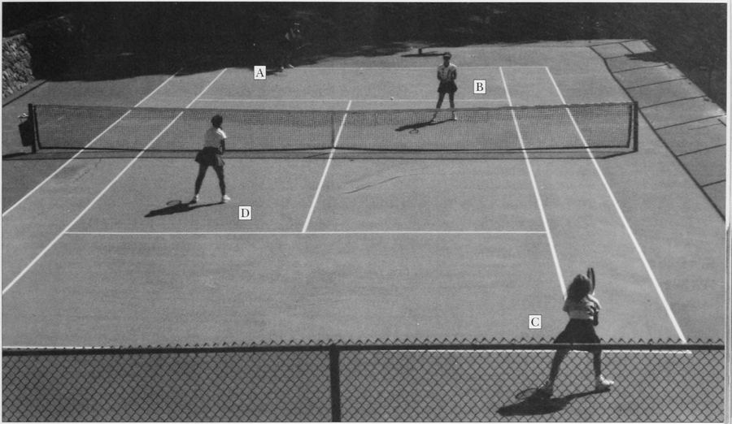
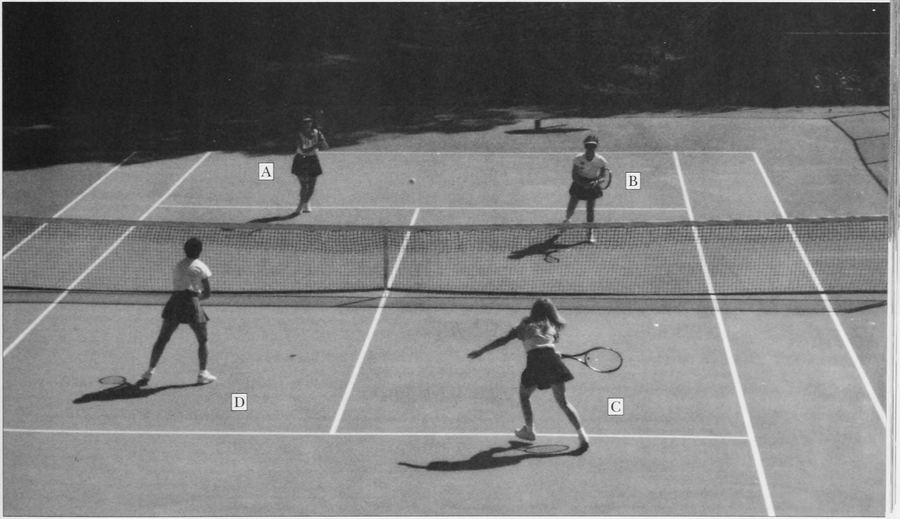
Tình huống 2
Tay vợt A giao bóng và lao vào lưới. Tay vợt C đánh trả cú drive chéo sân và ở lại phía sau.
Tay vợt A cố gắng tiếp cận vạch giao bóng. Cú vô-lê đầu tiên đánh trả chéo sân. Sau khi cú đánh này được thực hiện, A tiến thêm khoảng 1 mét để lập thành bức tường với Tay vợt B.
Tay vợt B giữ nguyên vị trí.
Tay vợt C nhún người sau đường cuối sân để chuẩn bị cho cú vô-lê của A. Anh ấy đối mặt với bức tường và buộc phải thoát ra. Cú đánh tiếp theo của anh ấy hoặc là đập mạnh xuống hành lang biên của mình, đập mạnh xuống giữa sân, cắt ngắn chéo sân, hoặc lốp bóng.
Tay vợt D giữ nguyên vị trí.
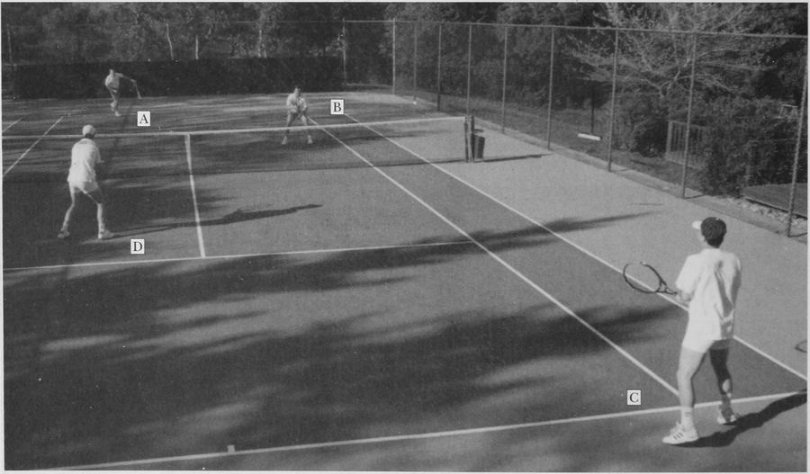
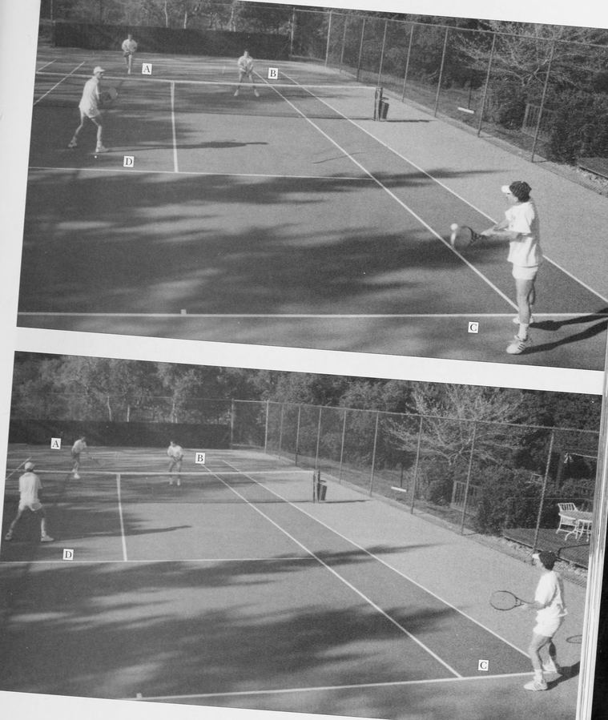
Tình huống 3
Tay vợt A giao bóng và ở lại phía sau. Tay vợt C lao vào lưới.
Tay vợt A nhún người sau đường cuối sân để chuẩn bị cho cú đỡ của C. Anh ấy đối mặt với bức tường và buộc phải thoát ra. Cú đánh tiếp theo của anh ấy hoặc là đập mạnh xuống hành lang biên của mình, đập mạnh xuống giữa sân, cắt ngắn chéo sân, hoặc lốp bóng.
Tay vợt B giữ nguyên vị trí.
Tay vợt C lao vào lưới, cố gắng tiếp cận vạch ⅝. Tay vợt D giữ nguyên vị trí.
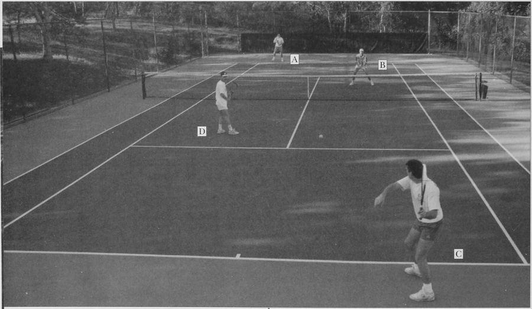
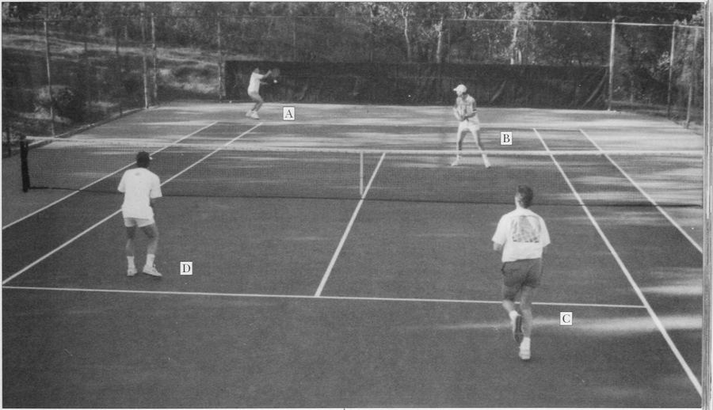
Tình huống 4
Tay vợt A giao bóng và lao lên lưới. Tay vợt C đánh trả cú drive mạnh về phía Tay vợt B và ở lại phía sau.
Tay vợt A tiếp tục tiến vào tới vạch ⅝.
Tay vợt B giữ vững vị trí, cố gắng đánh xuyên qua người Tay vợt D.
Tay vợt C ở lại phía sau.
Tay vợt D giữ vững vị trí.
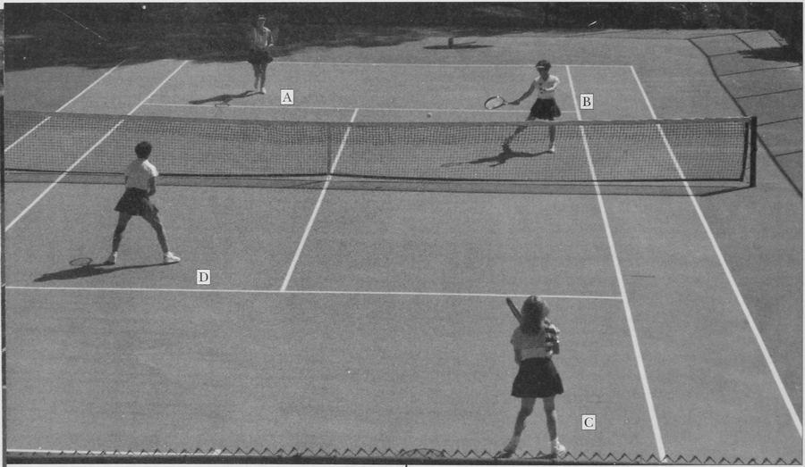
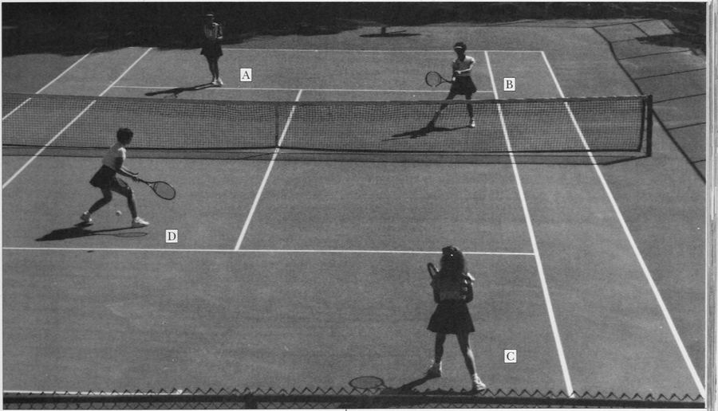
Tình huống 5
Tay vợt A giao bóng và lao lên lưới. Tay vợt C đỡ giao bóng bằng cú drive mạnh ở tầm thấp dưới lưới tới Tay vợt B và tiến vào theo sau cú đỡ bóng.
Tay vợt A tiếp tục tiến vào tới vạch ⅝.
Tay vợt B nhấn bóng bằng một cú chạm nhẹ xuống góc ngắn, xa khỏi Tay vợt C.
Tay vợt C cố gắng đón bóng.
Tay vợt D có thể thử đuổi theo cú đánh.
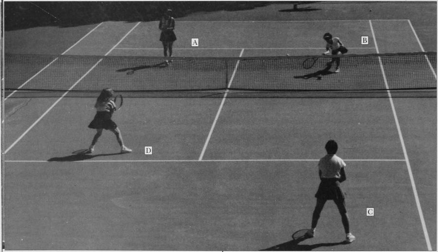
LƯU Ý: Ở Tình huống 4 và 5, Tay vợt C có thể hoặc tiến vào hoặc ở lại phía sau. Ở cả hai tình huống, Tay vợt B sẽ thử cú đỡ bóng mạnh xuyên qua Tay vợt D, được biết đến với tên gọi bài tập "mean drill", nếu bóng ở trên lưới. Nếu bóng rơi xuống dưới lưới, Tay vợt B sẽ đánh xéo bóng trở lại phía Tay vợt C.
Tình huống 6
Tay vợt A giao bóng và ở lại phía sau đường cuối sân. Tay vợt C đánh trả cao về phía Tay vợt B.
Sau đó A lao về phía vạch ⅝. (Khi đồng đội của bạn được mời chuyển sang tấn công, bạn lao vào lưới để hỗ trợ.) Tay vợt B giữ vững vị trí, cố gắng đánh xuyên qua Tay vợt D — bài tập "mean drill".
Tay vợt C tiếp tục tiến vào lưới.
Tay vợt D giữ vững vị trí, cố gắng chịu đựng cú đánh mạnh.
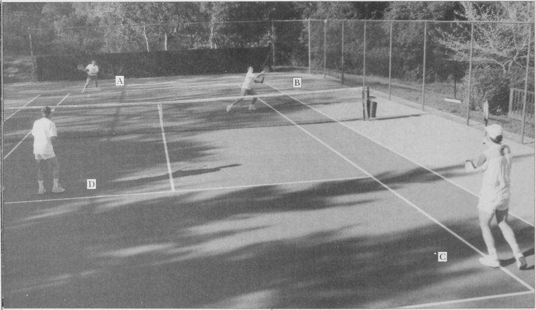
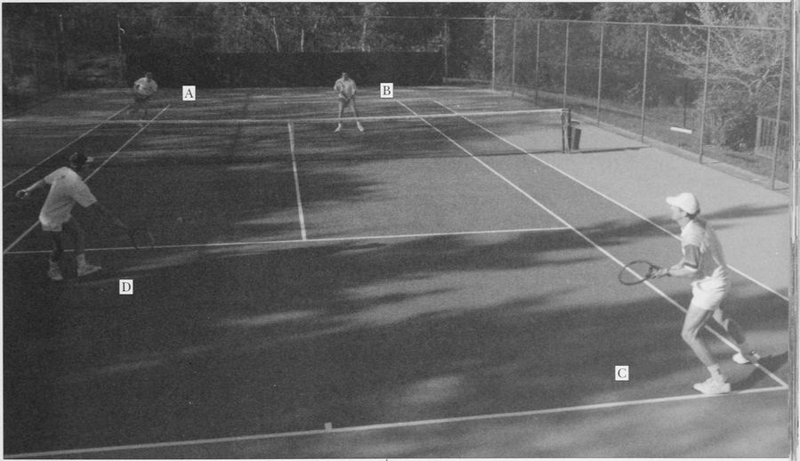
Tình huống 7
Tay vợt A giao bóng và ở lại phía sau đường cuối sân. Cú đỡ giao bóng được đánh thấp về phía Tay vợt B.
Tay vợt A sau đó lao về phía vạch ⅝.
Tay vợt B cố đánh một cú xoáy xuống theo góc ngắn về phía Tay vợt C.
Tay vợt C tiếp tục tiến vào lưới.
Tay vợt D giữ vững vị trí, cố gắng chịu đựng cú đánh mạnh.
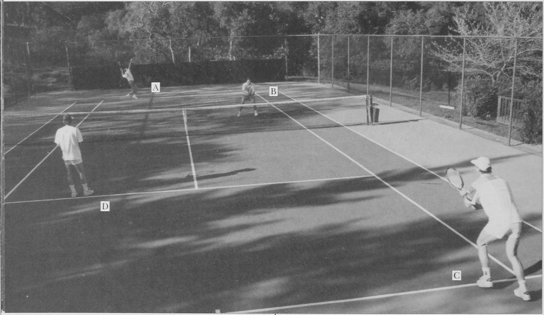
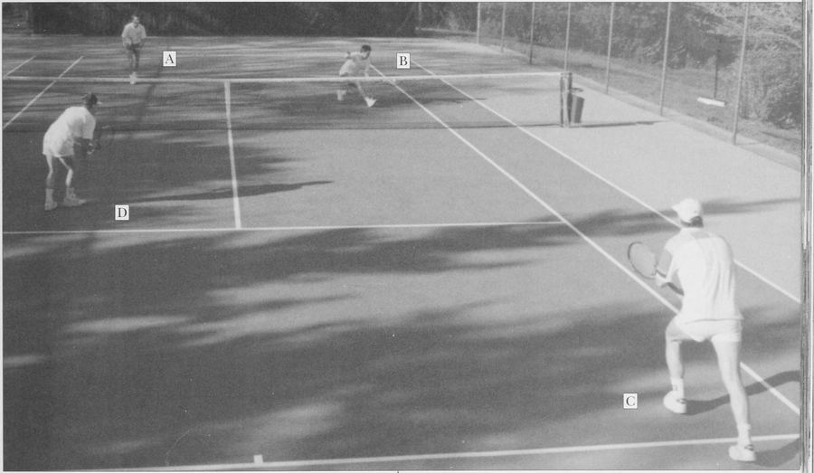
Tình huống 8
Tay vợt A giao bóng và vô-lê. Tay vợt C lốp bóng đỡ về phía Tay vợt A.
Tay vợt A dừng lại, đánh cú đập bóng trên cao, rồi tiếp tục tiến về phía lưới.
Tay vợt B bắt đầu lùi lại để đón cú lốp bóng nhưng, khi thấy Tay vợt A có thể xử lý bóng, tiến lên phía lưới.
Tay vợt C giữ nguyên vị trí nếu Tay vợt A đánh cú đập bóng trên cao. Tay vợt D, ở vạch ⅝, lùi về đường cuối sân cùng đồng đội trừ khi anh ấy cảm thấy dũng cảm hoặc muốn khiêu khích.
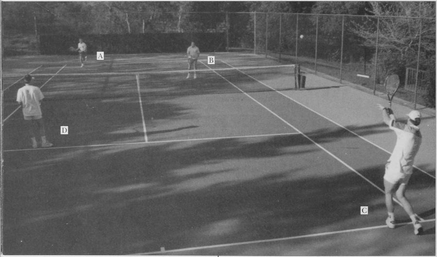
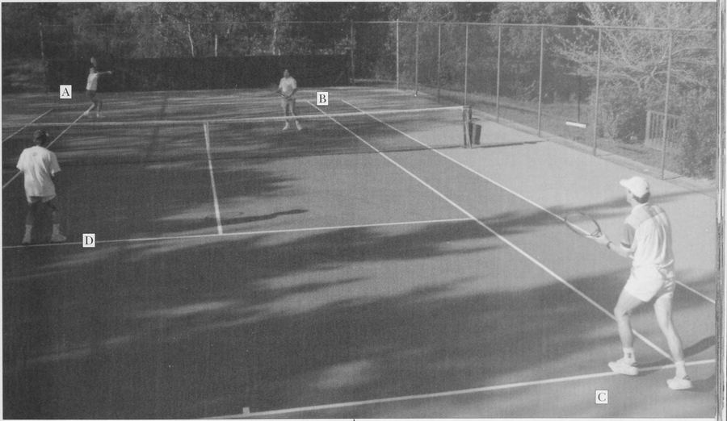
Tình huống 9
Tay vợt A giao bóng và đánh vô-lê. Tay vợt C lốp cú đỡ giao bóng qua đầu Tay vợt A.
Tay vợt A lùi lại, để bóng nảy, rồi đánh bóng. Tay vợt B lùi về đường cuối sân cùng đồng đội. Tay vợt C lao về phía lưới.
Tay vợt D giữ nguyên vị trí.
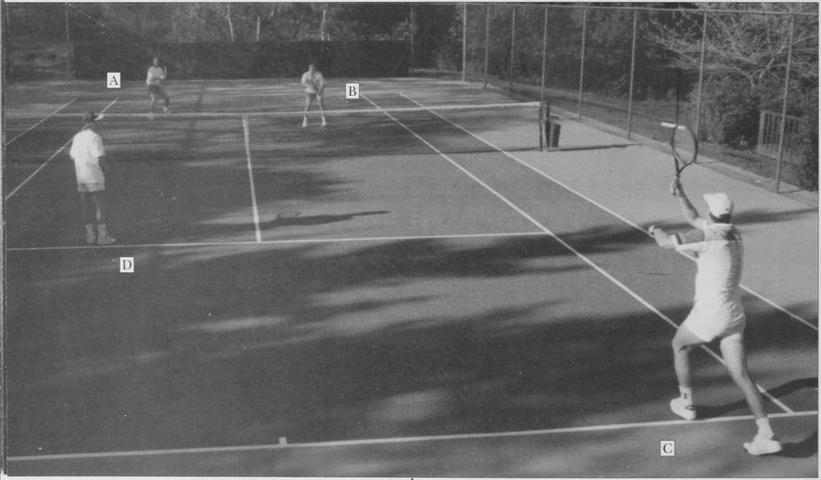
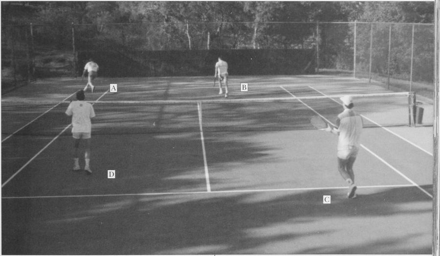
Tình huống 10
Tay vợt A giao bóng và giữ nguyên vị trí. Tay vợt C lốp bóng trả về phía Tay vợt A.
Tay vợt A tiến vào và đập bóng trên cao. Tay vợt B giữ nguyên vị trí.
Tay vợt C giữ nguyên vị trí.
Tay vợt D giữ nguyên vị trí.
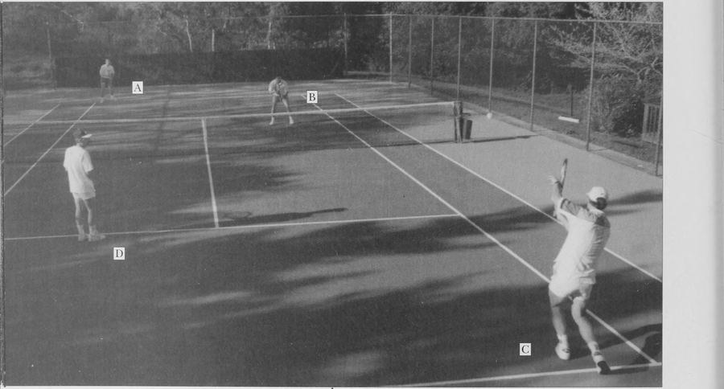
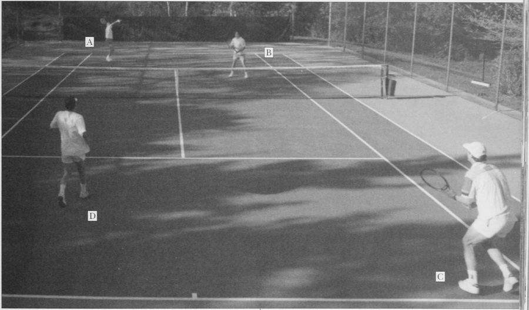
Tình huống 11
Tay vợt A giao bóng và đánh vô-lê. Tay vợt C lốp cú trả bóng qua đầu Tay vợt B.
Tay vợt A tiến về phía vạch ⅝ nếu Tay vợt B đánh cú đập trên cao.
Tay vợt B đập bóng trên cao và lùi về vạch ⅝.
Tay vợt C giữ nguyên vị trí.
Tay vợt D giữ nguyên vị trí nếu bóng đi sâu. Nếu cú lốp ngắn, Tay vợt D lùi về đường cuối sân.
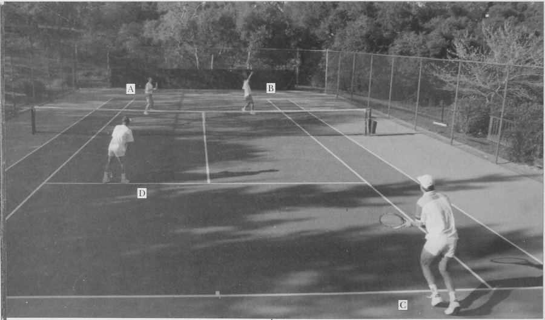
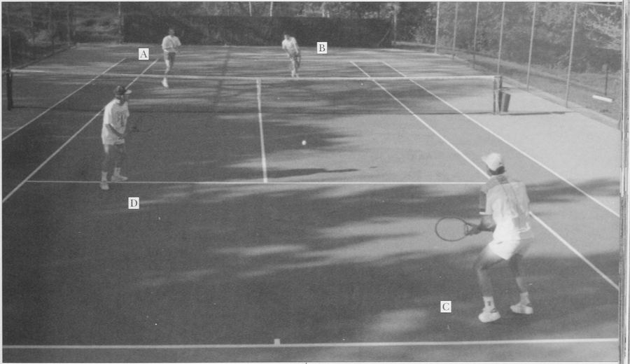
Tình huống 12
Tay vợt A giao bóng và lên lưới. Tay vợt C lốp bóng trả qua đầu Tay vợt B, người chạy lùi lại, để bóng nảy rồi đánh trả.
Tay vợt A lùi cùng đồng đội về đường cuối sân.
Tay vợt B đã lùi về đường cuối sân.
Tay vợt C tấn công về phía vạch ⅝ khi đối phương lùi lại.
Tay vợt D giữ nguyên vị trí.
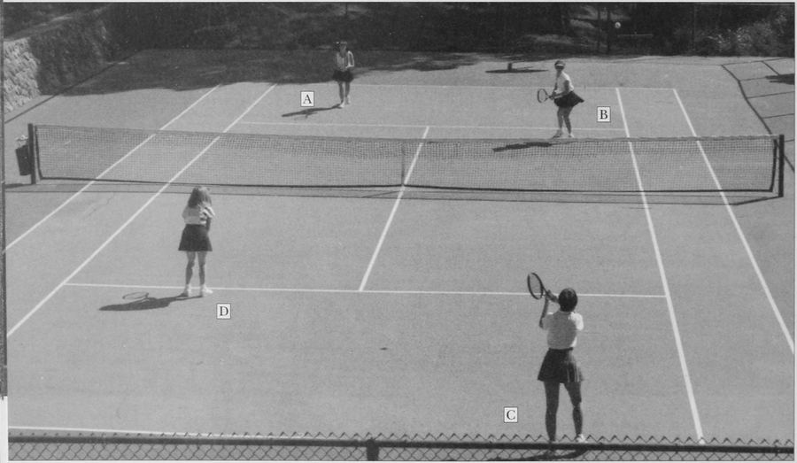
Tình huống 13
Tay vợt A giao bóng và ở lại phía sau. Tay vợt C lốp cú trả qua đầu Tay vợt B, người đập bóng trên cao.
Tay vợt A tiến về phía vạch ⅝.
Tay vợt B đập bóng trên cao.
Tay vợt C giữ nguyên vị trí.
Tay vợt D giữ nguyên vị trí nếu bóng rơi sâu hoặc lùi lại nếu cú đánh ngắn.
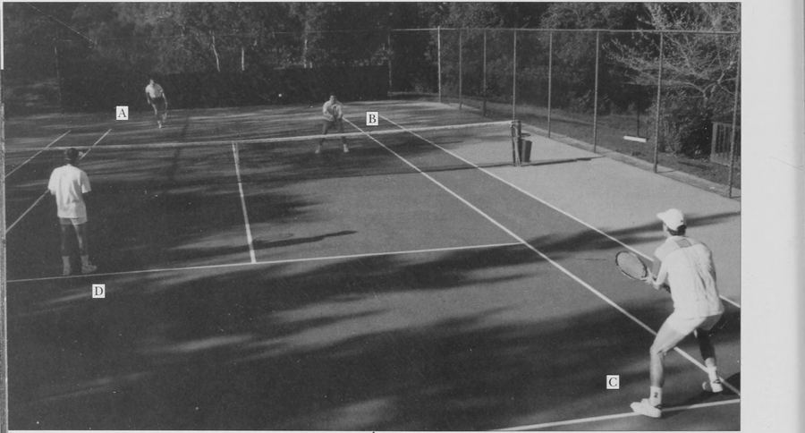
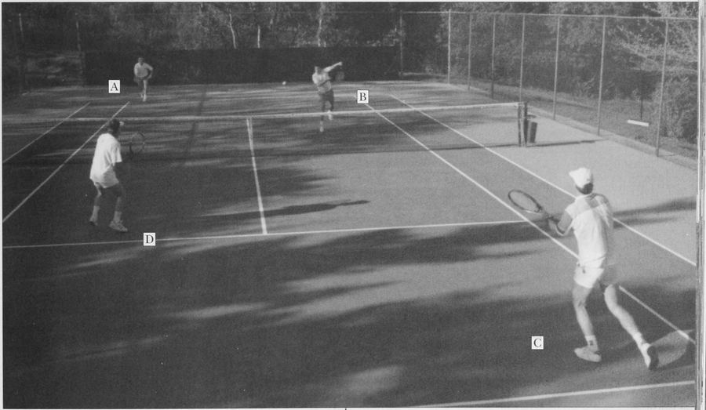
Tình huống 14
Tay vợt A giao bóng và giữ nguyên vị trí. Tay vợt C lốp cú trả bóng tốt qua đầu Tay vợt B. Tay vợt B hét lên, "Cứu tôi."
Tay vợt A băng ngang qua và hoặc đánh bóng ngay khi bóng chưa chạm đất (blitz) hoặc để bóng nảy.
Tay vợt B đổi vị trí và tiến lên khi blitz hoặc lùi lại khi bóng nảy.
Tay vợt C di chuyển vào phía lưới.
Tay vợt D giữ nguyên vị trí.
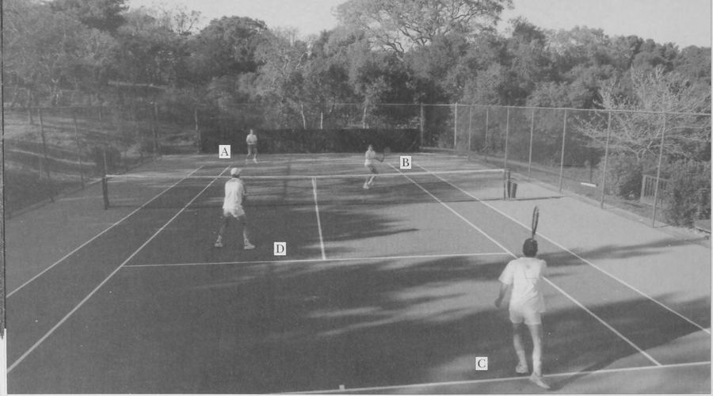
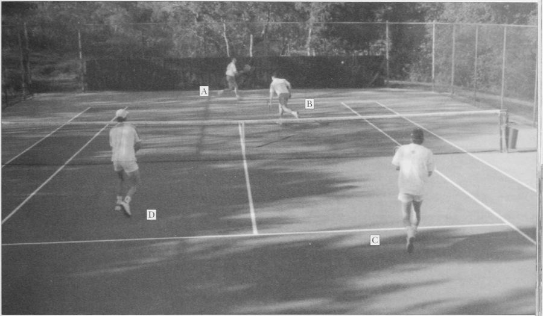
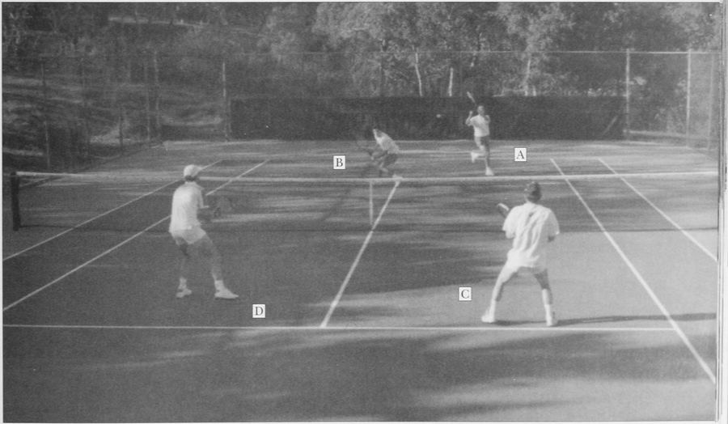
Tình huống 15
Tay vợt A giao bóng xoáy ngang cho Tay vợt C và tiến lên lưới.
Tay vợt A di chuyển vào phía lưới, nghiêng về giữa sân.
Tay vợt B trượt hai bước về phía hành lang biên.
Tay vợt C trả bóng đi bất kỳ đâu; tuy nhiên, vì góc độ đã thay đổi, cú đánh dọc biên giờ có lợi cho anh ta.
Tay vợt D trượt vào giữa hai bước.
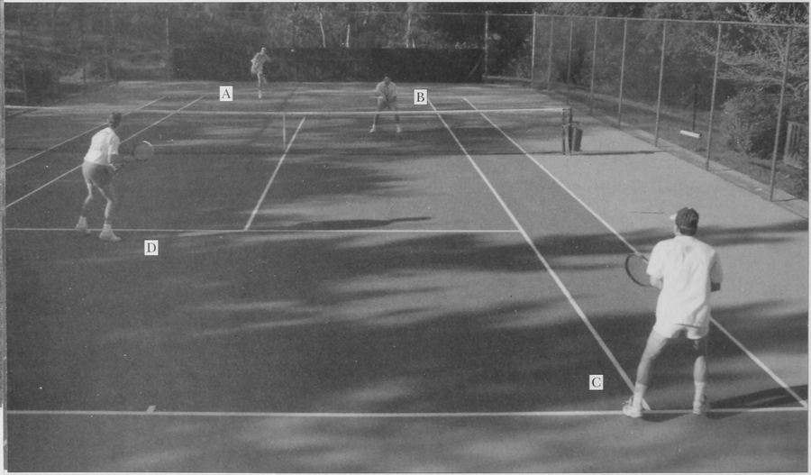
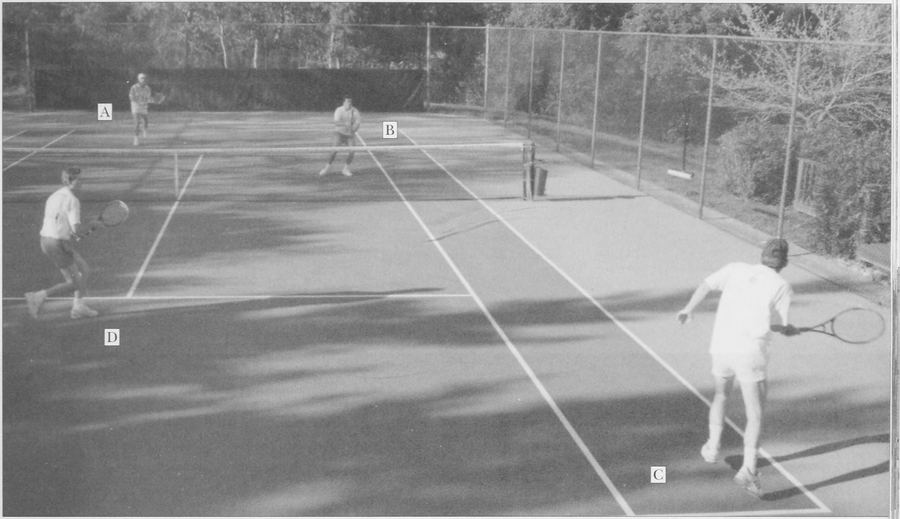
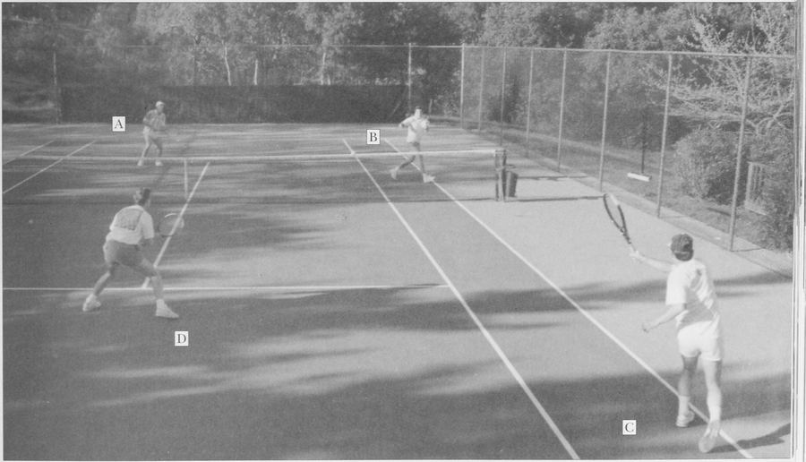
Tình huống 16
Tay vợt A giao bóng xoáy ngang cho Tay vợt C và giữ nguyên vị trí.
Tay vợt A trượt vào giữa sân.
Tay vợt B trượt hai bước về phía hành lang biên.
Tay vợt C trả bóng đi bất kỳ đâu; tuy nhiên, vì góc độ đã thay đổi, cú đánh dọc biên giờ có lợi cho cô ấy.
Tay vợt D trượt vào giữa hai bước.
Tình huống 17
Tay vợt A giao bóng và lên lưới (serve and volley). Tay vợt C trả bóng ngắn và lốp bóng về phía Tay vợt A.
Tay vợt A, sau một bước tách chân, lao vào quả bóng, nhắm tới chiến thắng bằng cách đánh mạnh dọc biên hoặc đưa bóng ngắn theo góc, trở lại phía sân của Tay vợt C. Vì bóng lốp bổng, Tay vợt A có thể tận dụng thêm thời gian để di chuyển vào phía trong vạch thắng, vạch ⅝.
Tay vợt B giữ nguyên vị trí.
Tay vợt C giữ nguyên vị trí.
Tay vợt D chạy hết sức.
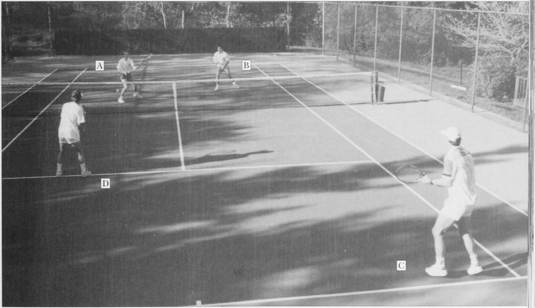
Tình huống 18
Tay vợt A giao bóng và đánh vô-lê. Tay vợt C lốp bóng về phía Tay vợt B.
Tay vợt B tấn công quả bóng, nhắm tới phần thắng. Anh ta đánh mạnh bóng vòng qua Tay vợt D hoặc đưa bóng ngắn theo góc về phía Tay vợt C.
Tay vợt A tiếp tục áp sát lưới.
Tay vợt C giữ nguyên vị trí.
Tay vợt D chạy hết sức.
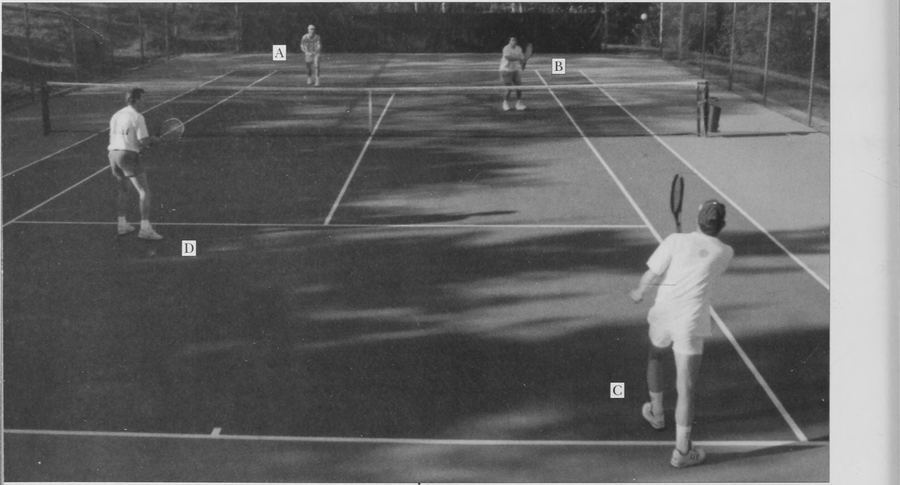
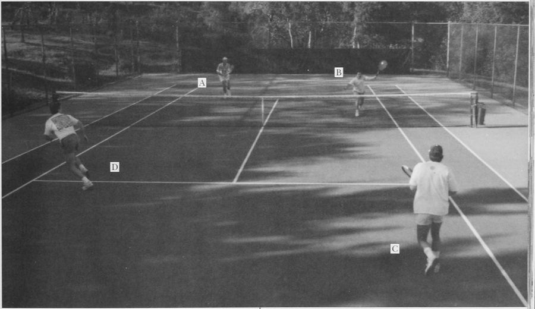
Cướp bóng
Các pha cướp bóng (poach)
Trong suốt một trận đấu bình thường, người giao bóng thường phải đối mặt với khoảng 50 quả bóng phải đánh trong các game giao bóng của mình. Nhưng tôi và người đồng đội Mark đã từng chơi những trận đánh đôi mà người giao bóng chỉ đánh đúng hai quả bóng sau cú giao. Có lần chúng tôi còn chơi một set mà Mark không hề đánh quả bóng nào sau khi giao bóng, nhờ vào sự di chuyển của tôi ở lưới. Mục đích của sự di chuyển là hướng cú đánh của đối phương về phía người đứng lưới, hoặc tốt hơn nữa, làm đối phương bối rối để họ đơn giản là đánh trượt.
Khi tôi cướp bóng, tôi cố làm cho đối phương tin rằng cú đánh chéo sân là an toàn, rồi tôi chặn nó lại. Khi tôi giả động tác cướp bóng (fake), tôi cố làm cho đối phương nghĩ rằng cú đánh dọc biên là an toàn, nhưng tôi bịt kín hướng đó. Khi chúng tôi chơi, chúng tôi có một công thức đơn giản: Giao bóng đầu tiên vào sân, và người đứng lưới sẽ làm phần còn lại.
Tay vợt A nên giao bóng vào giữa sân, tiến hai bước, rồi bứt tốc sang phía bên kia vào trong. Tay vợt A vẫn phải tới được vạch giao bóng.
Tay vợt B chờ cho bóng chạm đất và đầu của Tay vợt C cúi xuống để đánh bóng, rồi lao vào theo góc, đánh hoặc một cú mạnh vòng qua Tay vợt D hoặc một cú ngắn theo góc trở lại phía Tay vợt C, rồi tiếp tục di chuyển để đổi bên. Tay vợt B không nên quay lại vị trí ban đầu.
Tay vợt C lao lên lưới hoặc giữ nguyên vị trí.
Tay vợt D cầu mong điều tốt nhất và giữ vững vị trí.
Tình huống 19
Cướp bóng: Tay vợt A giao bóng và đánh vô-lê; Tay vợt C trả bóng chéo sân.
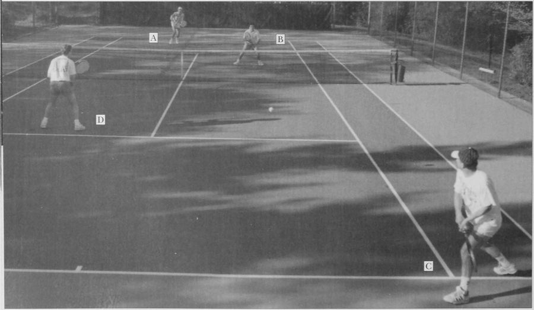
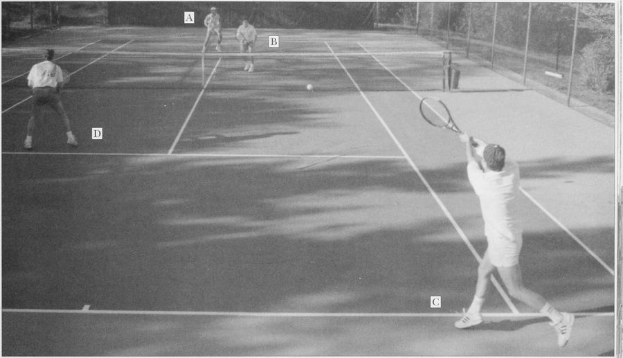
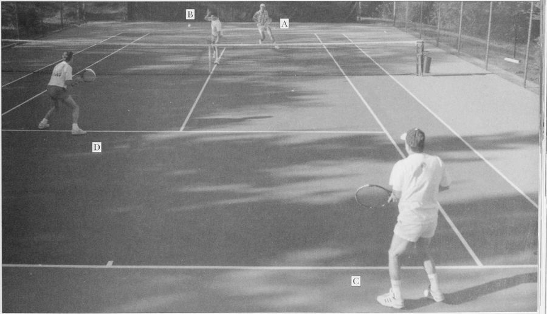
Tình huống 20
Cướp bóng; Tay vợt A giao bóng và ở lại phía sau; Tay vợt C đỡ giao bóng chéo sân.
Tay vợt A giao bóng, chờ một nhịp, rồi bứt tốc sang phía bên kia.
Tay vợt B chờ cho bóng chạm đất và đầu của Tay vợt C cúi xuống để đánh bóng, rồi lao vào theo góc, đánh hoặc một cú mạnh vòng qua Tay vợt D hoặc một cú ngắn theo góc trở lại phía Tay vợt C.
Tay vợt C đỡ giao bóng chéo sân.
Tay vợt D cầu mong điều tốt nhất và giữ vững vị trí.
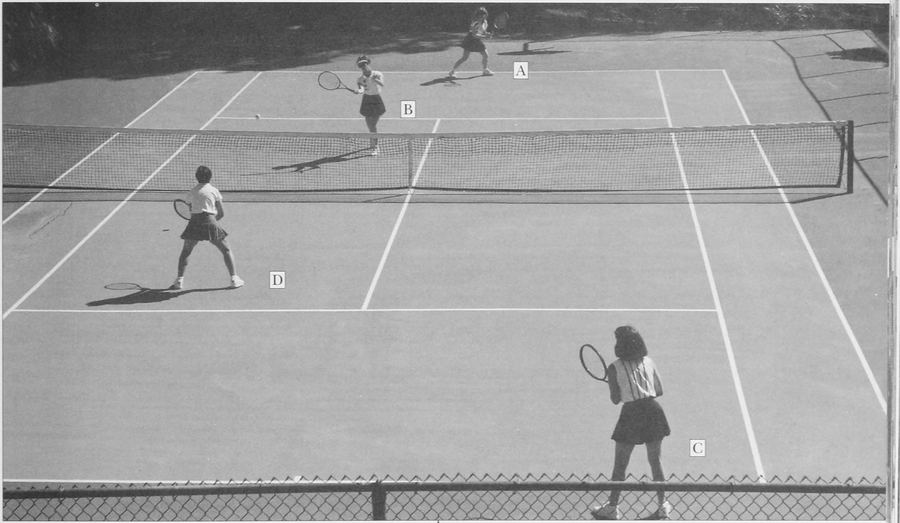
Tình huống 21
Cướp bóng: Tay vợt A giao bóng và đánh vô-lê; Tay vợt C trả bóng dọc biên.
Tay vợt A chạy ngang theo hướng chéo và đánh cú vô-lê đầu tiên sâu xuống sâu, dọc biên về phía Tay vợt C.
Tay vợt B, người đã băng ngang, bật ra vạch ⅝.
Tay vợt C di chuyển hoặc lên hoặc lùi.
Tay vợt D phải trượt vào giữa để bịt khoảng trống.
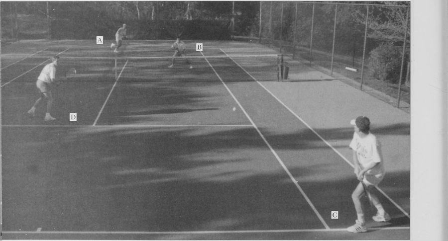
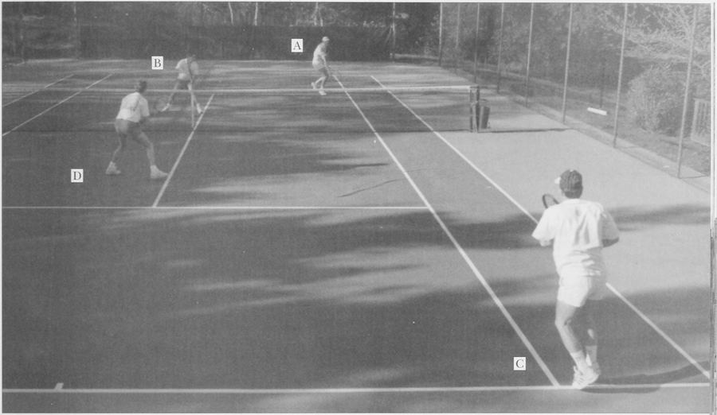
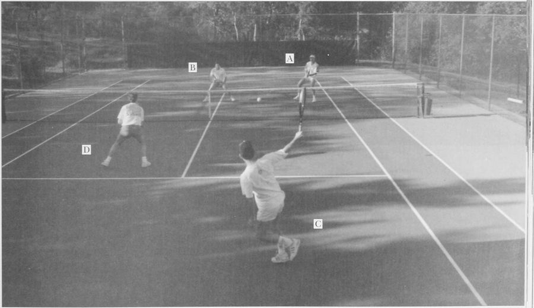
Tình huống 22
Cướp bóng: Tay vợt A giao bóng và ở lại phía sau; Tay vợt C đỡ giao bóng dọc biên.
Tay vợt A giao bóng, chạy ngang qua bên chéo sân, và trả bóng sâu về phía Tay vợt C.
Tay vợt B đổi bên với Tay vợt A.
Tay vợt C vẫn ở phía sau. Nếu Tay vợt C lên lưới, Tay vợt A phải thoát ra.
Tay vợt D bịt kín giữa sân.
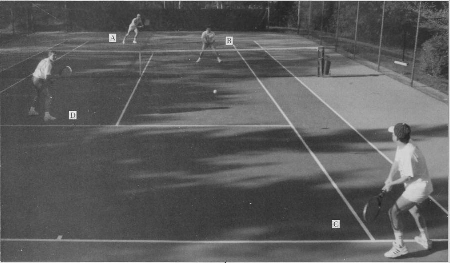
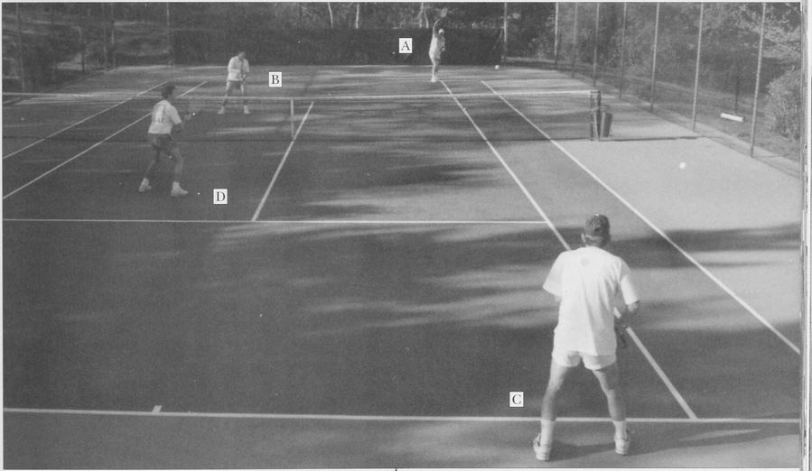
Tình huống 23
Cướp bóng (poach): Tay vợt A giao bóng rồi lên lưới; Tay vợt C trả bóng mạnh xuống giữa sân.
Tay vợt A giao bóng rồi lên lưới.
Tay vợt B phải với ra sau để bọc lấy bóng.
Tay vợt C vẫn ở phía sau hoặc lên lưới.
Tay vợt D cầu mong điều tốt đẹp nhất và giữ nguyên vị trí.
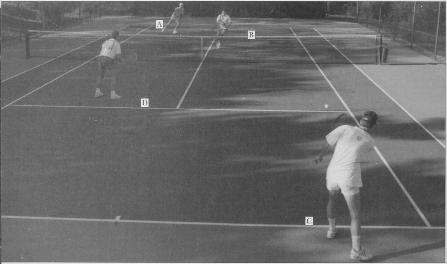
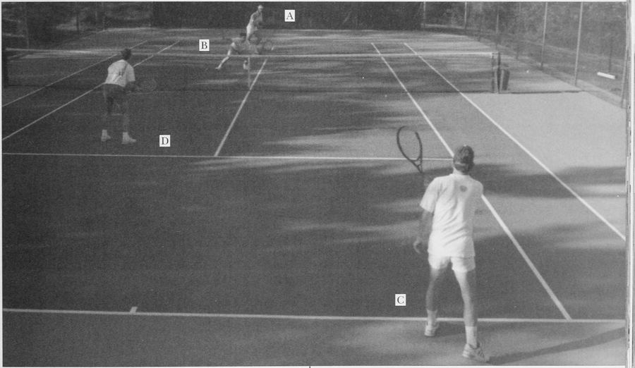
Tình huống 24
Tay vợt A giao bóng và lao lên lưới. Tay vợt B cướp bóng; Tay vợt C lốp bóng qua đầu Tay vợt B.
Tay vợt A di chuyển vào trong, rồi băng ngang qua.
Tay vợt B phải đọc hướng bóng, rồi lùi lại để lấy bóng.
Tay vợt C lên lưới nếu cú lốp bóng sâu hoặc giữ nguyên vị trí nếu cú lốp bóng ngắn.
Tay vợt D lùi lại nếu cú lốp bóng ngắn hoặc giữ nguyên nếu cú lốp bóng sâu.
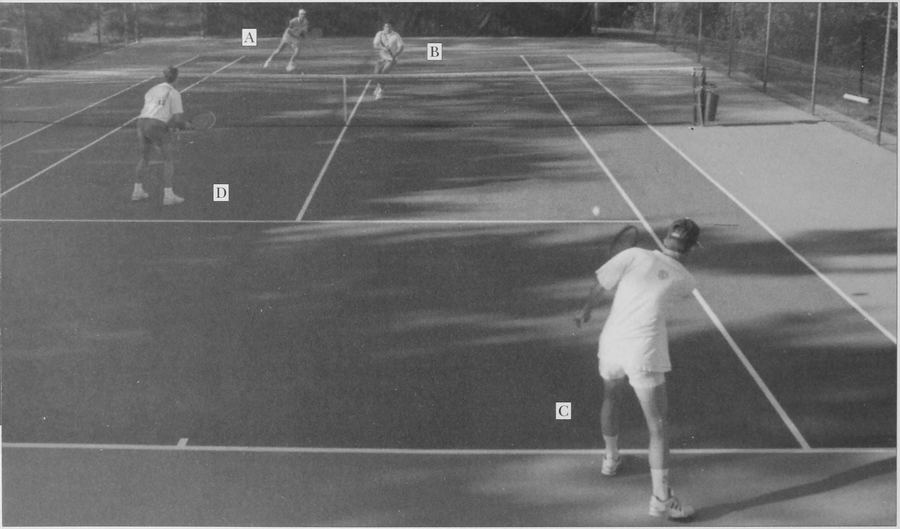
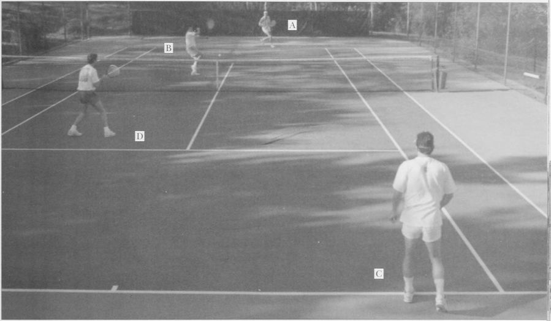
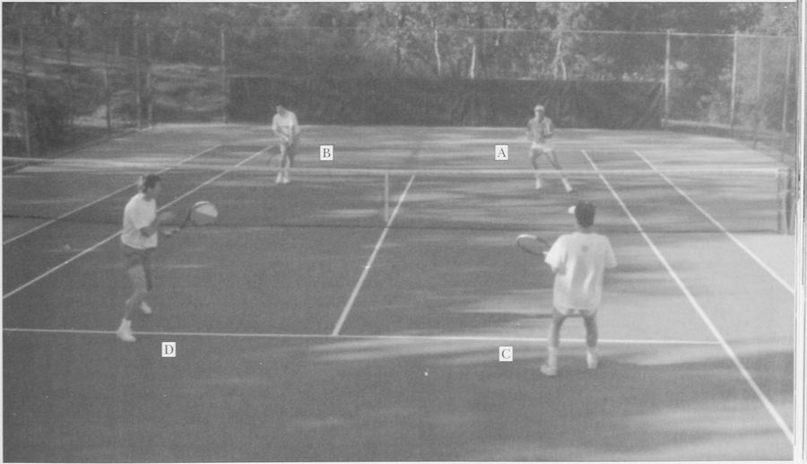
Tình huống 25
Tay vợt A giao bóng và lao lên lưới. Tay vợt B cướp bóng (poach); Tay vợt C lốp bóng cho Tay vợt A.
Tay vợt A hãm phanh lại và đập bóng trên cao.
Tay vợt B đi đến vạch biên ở bên mới.
Tay vợt C lên lưới nếu cú lốp bóng sâu hoặc giữ nguyên vị trí nếu cú lốp bóng ngắn.
Tay vợt D cầu mong điều tốt đẹp nhất và giữ nguyên vị trí.
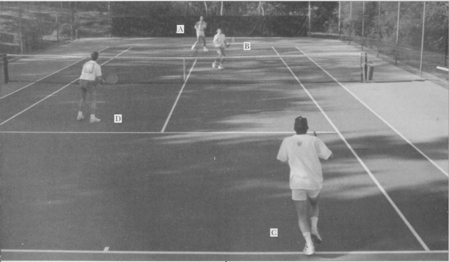
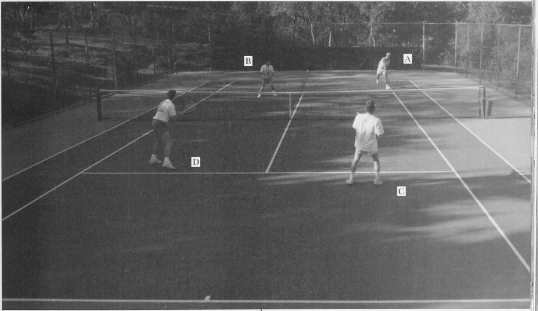
Tình huống 26
Tay vợt A giao bóng và lao lên lưới trong khi Tay vợt B giả động tác cướp bóng (fake). Tay vợt C trả bóng chéo sân.
Tay vợt A vô-lê sâu trả bóng lại cho Tay vợt C. Tay vợt B giữ nguyên.
Tay vợt C có thể lên lưới hoặc ở lại phía sau. Tay vợt D giữ nguyên vị trí.
Tình huống 27
Tay vợt A giao bóng và đánh vô-lê trong khi Tay vợt B giả động tác cướp bóng (poach). Tay vợt C thấy Tay vợt B di chuyển, tin vào động tác giả, và trả bóng dọc biên.
Tay vợt A tiếp tục lên lưới.
Tay vợt B đánh bóng theo góc cho Tay vợt C hoặc dồn sức đánh về phía Tay vợt D.
Tay vợt C có thể ở lưới hoặc ở phía sau.
Tay vợt D bịt kín giữa sân.
Tình huống 28
Tay vợt A giao bóng và đánh vô-lê. Tay vợt C đánh trả bóng vào chân Tay vợt A.
Tay vợt A vô-lê chéo sân.
Tay vợt B giữ nguyên vị trí.
Tay vợt C băng ngang qua.
Tay vợt D tiến vào đón bóng góc và dồn sức đánh xuyên qua một trong hai người.
Tình huống 29
Tay vợt A giao bóng và vô-lê. Tay vợt C trả bóng chéo sân. Tay vợt A vô-lê dồn sức vào giữa sân.
Tay vợt B giữ nguyên vị trí.
Tay vợt C hoặc ở lưới hoặc ở phía sau. Nếu Tay vợt D băng ngang qua, thì C đổi sang bên của D.
Tay vợt D cắt bóng đi. Anh ta đang tìm cách di chuyển, vì thế bóng giữa sân là của anh ta. Thông thường Tay vợt D sẽ không đi qua vạch giữa sân mà trả bóng về bên của mình. Tay vợt D dồn sức đánh bóng vào Tay vợt A hoặc Tay vợt B.
Tình huống 30
Thế đứng Australian: Tay vợt C trả bóng chéo sân.
Tay vợt A đứng gần vạch giữa sân, như thể đang giao bóng đơn. Sau khi giao bóng, Tay vợt A di chuyển sang bên đối diện với mình. Tay vợt B giữ nguyên và dồn sức drive (bạt) cho Tay vợt D hoặc đánh góc cho Tay vợt C.
Tay vợt C ở lưới hoặc lùi lại.
Tay vợt D giữ nguyên vị trí.
LƯU Ý: Nếu Tay vợt B giả động tác cướp bóng, tình huống này vẫn được áp dụng.
Tình huống 31
Thế đứng Australian; Tay vợt C đỡ giao bóng dọc biên. Tay vợt A đứng gần vạch giữa sân như thể đang giao bóng đơn, rồi lao lên lưới ở bên mới.
Tay vợt A vô-lê thẳng, đánh bóng sâu cho sâu về phía Tay vợt C.
Tay vợt B giữ nguyên vị trí.
Tay vợt C ở lưới hoặc lùi lại.
Tay vợt D bịt kín giữa sân.
Tình huống 32
Thế đứng Australian: Tay vợt B cướp bóng (poach), và Tay vợt C trả bóng chéo sân. Tay vợt A đứng gần vạch giữa sân như thể đang giao bóng đơn, rồi lao lên lưới ở cùng bên mà mình đã giao bóng.
Tay vợt A vô-lê sâu cho Tay vợt C.
Tay vợt B ổn định vị trí của mình.
Tay vợt C ở lưới hoặc lùi lại.
Tay vợt D trượt về vị trí cơ bản của mình. Đội hình Australian: Tay vợt B cướp bóng (poach), và Tay vợt C trả bóng dọc biên.
Tay vợt A tiếp tục tiến vào lưới.
Tay vợt B vô-lê dồn sức cho Tay vợt D hoặc vô-lê góc cho Tay vợt C.
Tay vợt C ở lưới hoặc lùi lại.
Tay vợt D bịt kín giữa sân.
Một trên, một dưới
Các pha bóng đang diễn ra — Những pha lên lưới, ở lại phía sau
Trong những tình huống này, cả người giao bóng lẫn người đỡ giao bóng đều không lao lên lưới, nên các đấu thủ vẫn giữ thế một người trên lưới một người dưới sân. Mục tiêu là để những người ở sâu đánh sâu cho người ở sâu bên kia, nhưng điều đó không phải lúc nào cũng xảy ra.
Các khu vực cho từng cú đánh
Ô giao bóng. Bất kỳ bóng nào rơi vào trong ô giao bóng đều là lời mời lên lưới. Trong đánh đôi, cú lên lưới nên đánh chéo sân. Sau khi đánh cú này, bạn tiến vào lưới. Nếu bạn có cú cắt bóng trong kho vũ khí của mình, đây chính là vũ khí được chọn để dùng khi bạn lên lưới.
Chín feet tiếp theo trên sân, tính từ vạch giao bóng trở vào. Một lần nữa, bất kỳ bóng nào rơi vào vùng này đều được xem là lời mời lên lưới. Bạn tấn công cú bóng, đánh chéo sân và theo cú đánh tiến vào lưới.
Phần tiếp theo của sân cho tới 6 inch cuối cùng. Nếu bóng rơi vào khu vực này, bạn đáp trả bằng một cú đánh nền về phía người đứng sâu đối diện. Bạn phải kiên nhẫn và giữ bóng sống, đánh với 75% lực. Giữ nguyên vị trí ở đường cuối sân.
Phần cuối cùng của sân. Nếu bóng rơi sâu đến mức này, bạn có thể lùi lại một chút, đưa bóng vòng cung trở lại phía người đứng sâu đối diện. Sau cú đánh này, bạn nên quay về vị trí ở đường cuối sân.
Mấu chốt của Khu vực 1 và 2 là bạn phải đọc được rằng cú đánh của đối thủ sẽ rơi ngắn và di chuyển vào trong sân để đánh cú đó. Mấu chốt của Khu vực 3 và 4 là giữ được sự kiên nhẫn. Giữ bóng sống, giữ bóng sâu, và chờ cơ hội để chơi tấn công hơn. Đừng cưỡng ép thế trận.
Các khu vực cho cú vô-lê
Ô giao bóng ở phía người đứng lưới. Một cú bóng rơi vào vùng này luôn là trách nhiệm của người đứng lưới. Bạn phải có khả năng kiểm soát vùng mà mình với tới được bằng một bước chéo chân về phía giữa sân.
Ba feet tiếp theo ở phía bên kia vạch giao bóng. Nếu bóng được đánh vào vùng này, người đứng lưới nên có thể với tới được. Nếu bạn bước nhanh hai bước theo hướng xiên về phía lưới, bạn sẽ đủ sức bao quát cú đánh này và tiếp tục giữ thế tấn công.
Phần còn lại của sân. Nếu bóng được đánh vào vùng này, đó là trách nhiệm của người đứng sau, trừ khi đó là một cú bóng chậm cho phép người đứng lưới có thời gian chạy vào bốn bước và chặn cú bóng này. Ngoại lệ duy nhất khác xảy ra trong pha cướp bóng khi giao bóng (service poach), khi toàn bộ phía nửa sân mới thuộc về người đứng lưới.
MẤU CHỐT CỦA THẾ MỘT TRÊN MỘT DƯỚI
1. Đánh sâu cho người ở sâu.
2. Vẫn tìm cách chơi tấn công bằng cách chạy đúng các khu vực và lên lưới khi bạn được mời chuyển sang tấn công.
3. Lên lưới khi đồng đội của bạn được mời chuyển sang tấn công.
Tình huống 34
KHU VỰC 4: Tay vợt C đánh bóng vào khoảng một foot cuối sân phía Tay vợt A.
Tay vợt A lùi lại và để bóng rơi xuống, rồi đánh mạnh đưa bóng vòng cung trở lại chéo sân và quay về khu vực dàn trận ở đường cuối sân, giữ nguyên thế đứng.
Tay vợt B giữ nguyên vị trí.
Tay vợt C giữ nguyên vị trí; nếu Tay vợt D cướp bóng, C sẽ đổi bên.
Tay vợt D giữ nguyên vị trí nhưng đang nhắm cướp bóng.
Tình huống 35
KHU VỰC 3: Tay vợt C đánh bóng vào Khu vực 3 cho Tay vợt A.
Tay vợt A cố đánh trả chéo sân, rồi ở lại phía sau.
Tay vợt B giữ nguyên vị trí.
Tay vợt C giữ nguyên vị trí; nếu Tay vợt D cướp bóng, C sẽ đổi bên.
Tay vợt D giữ nguyên vị trí nhưng đang nhắm cướp bóng.
Tình huống 36
KHU VỰC 2: Tay vợt C đánh bóng vào Khu vực 2 cho Tay vợt A.
Tay vợt A bước lên đánh một cú chéo sân, rồi tiến vào về phía lưới tới vạch ⅝.
Tay vợt B giữ nguyên vị trí.
Tay vợt C giữ nguyên vị trí.
Tay vợt D giữ nguyên vị trí.
Tình huống 37
KHU VỰC 1: Tay vợt C đánh bóng vào Khu vực 1 cho Tay vợt A.
Tay vợt A đánh một cú lên lưới chéo sân, rồi tiến vào phía lưới tới vạch ⅝.
Tay vợt B giữ nguyên vị trí.
Tay vợt C giữ nguyên vị trí.
Tay vợt D giữ nguyên vị trí nhưng phải hết sức để ý hành lang biên.
Tình huống 38
Tay vợt C đánh bóng về phía Tay vợt B. Dù bình thường đây sẽ là một lựa chọn đánh bóng tồi, nhưng nếu Tay vợt B vô-lê kém và đánh trượt bóng, thì đó lại là lựa chọn tuyệt vời. Và nếu Tay vợt B không giữ nguyên vị trí, thì việc đánh sâu vào chỗ không người là một điểm thắng chắc chắn.
Tay vợt B đánh mạnh bóng vòng qua Tay vợt D hoặc đưa bóng ngắn xiên cho Tay vợt C.
Tay vợt A lao lên lưới, vì đồng đội của anh ấy được mời chuyển sang tấn công.
Tay vợt C giữ nguyên vị trí.
Tay vợt D luôn cảnh giác — anh ấy sẽ gặp nguy hiểm.
Tình huống 39
Tay vợt C đánh bóng thấp cho Tay vợt B; B đánh một cú chạm nhẹ qua lưới.
Cả Tay vợt C và Tay vợt D cùng đuổi theo bóng. Nếu Tay vợt C lên tiếng gọi bóng, thì Tay vợt D quay về phần sân của mình. Nếu Tay vợt D lấy được bóng, Tay vợt C băng ngang sang vùng sân bỏ trống. Tay vợt A lao lên lưới, vì đồng đội của anh ta được mời chuyển sang tấn công.
Tình huống 40
Tay vợt C lốp bóng ngắn cho Tay vợt B.
Tay vợt B lùi lại và đập bóng trên cao. Tay vợt A tiến về phía lưới. Tay vợt C giữ nguyên vị trí.
Tay vợt D lùi về đường cuối sân.
Tình huống 41
Tay vợt C lốp bóng sâu cho Tay vợt B. Tay vợt B cố đập bóng trên cao. Nếu không lấy được bóng, anh ấy hét lên: “Cứu!” Tay vợt A sau đó đổi vị trí băng ngang.
Tay vợt B cúi người xuống và băng ngang.
Tay vợt A, sau khi đổi vị trí, có ba lựa chọn: 1. Để bóng nảy, rồi lốp bóng trả lại; 2. Để bóng nảy, rồi đập bóng trên cao; 3. Tấn công bóng và đánh trước khi bóng nảy — một pha lao vào (blitz) — rồi lên lưới.
Tay vợt C tiến vào lưới nếu Tay vợt A đáp trả theo (1) hoặc (2) ở trên, nhưng ở lại phía sau nếu Tay vợt A lao vào (blitz).
Tay vợt D giữ nguyên vị trí.
Tình huống 42
Tay vợt C đánh chéo sân cho Tay vợt A; Tay vợt B cướp bóng.
Tay vợt B băng ngang qua, rồi đánh mạnh bóng vòng qua Tay vợt D hoặc đưa bóng xiên cho Tay vợt C. Sau cú đánh, Tay vợt B ở lại phía sân mới.
Tay vợt A đọc được rằng Tay vợt B đã cướp bóng và đổi vị trí sang phía bên kia. Tay vợt C giữ nguyên vị trí.
Tay vợt D luôn cảnh giác — anh ta sẽ gặp nguy hiểm.
Tình huống 43
Tay vợt C lốp bóng tới Tay vợt A. Chiến thuật này được dùng nhằm chặn đứng hoạt động của Tay vợt B ở trên lưới.
Tay vợt A có ba cách đáp trả: 1. Để bóng nảy, rồi lốp bóng trả lại; 2. Để bóng nảy, rồi đập bóng trên cao; 3. Tấn công bóng và đánh trước khi bóng nảy — một pha lao vào (blitz) — rồi lên lưới.
Tay vợt C lao lên lưới nếu Tay vợt A chọn phương án (1) hoặc (2).
Tay vợt B giữ nguyên vị trí.
Tay vợt D giữ nguyên vị trí.
Thoát hiểm
Các pha bóng đang diễn ra — Những pha thoát hiểm
Tiền đề của phần này là đội gồm Tay vợt A và B đã chiếm được thế tấn công trên lưới. Mục tiêu của Tay vợt C là cố gắng thoát khỏi những hiểm nguy mà thế tấn công của đội đối phương tạo ra. Mục tiêu của Tay vợt A và B là gây sát thương và có một phản ứng tấn công, hung hãn trước cú đánh của Tay vợt C.
Tình huống 44
Tay vợt C đánh tới Tay vợt A ở trên lưới.
Tay vợt A đánh một cú vô-lê góc sâu về phía Tay vợt C, buộc C phải rời sân.
Tay vợt A và B di chuyển như một khối, bước ngang hai bước theo hướng bóng, chảy theo đường bay của bóng.
Tay vợt D di chuyển như thể bị buộc dây vào Tay vợt C. Khi Tay vợt C bị kéo dạt ra biên, Tay vợt D trượt vào giữa sân. Nếu Tay vợt C có một pha cứu bóng tuyệt vời, Tay vợt D khi đó chơi đánh đơn trên sân đánh đôi để cho đồng đội thời gian hồi phục và trở về vị trí.
Tình huống 45
Tay vợt C đánh một cú mạnh vào Tay vợt A hoặc B.
Tay vợt A hoặc B, người đánh bóng, phải bước sang một bên để tránh bị kẹt (jammed), rồi đánh mạnh bóng vòng qua Tay vợt D hoặc đưa bóng xiên cho Tay vợt C.
Tay vợt B hoặc A giữ nguyên vị trí.
Tay vợt C giữ nguyên vị trí ở đường cuối sân.
Tay vợt D giữ nguyên vị trí.
Tình huống 46
Tay vợt C đánh mạnh quả bóng ở giữa sân, giữa những người chơi.
Cả hai Tay vợt A và B đều nên lao vào quả bóng, chứ không chỉ người chơi thuận tay. Thường thì các người chơi sẽ va vợt vào nhau, nhưng cả người chơi lẫn vợt đều không bị hư hại gì.
Tay vợt B hoặc A giữ nguyên vị trí.
Tay vợt C giữ nguyên vị trí ở đường cuối sân.
Tay vợt D giữ nguyên vị trí.
Tình huống 47
Tay vợt C đánh một cú mạnh vào hành lang biên của Tay vợt B.
Tay vợt B băng ngang qua và đánh mạnh quả bóng vòng qua Tay vợt D. Tay vợt A ép sát giữa sân.
Tay vợt C giữ nguyên vị trí.
Tay vợt D ép kín khoảng trống.
Tình huống 48
Tay vợt C đánh một cú mạnh chéo sân.
Tay vợt A đánh vòng qua Tay vợt D hoặc đưa bóng ngắn xiên về phía Tay vợt C.
Tay vợt B giữ nguyên vị trí.
Tay vợt C giữ nguyên vị trí.
Tay vợt D cầu mong điều tốt đẹp nhất.
Tình huống 49
Tay vợt C đánh một cú bóng thấp tới Tay vợt A.
Tay vợt A lao vào quả bóng và đánh một quả bóng xoáy nhẹ đi ngắn vào góc chéo tới Tay vợt C.
Cả Tay vợt C và D đều đuổi theo quả bóng. Nếu Tay vợt D đánh trúng bóng, thì Tay vợt C đổi vị trí (switch).
Tay vợt B giữ nguyên vị trí.
Tình huống 50
Tay vợt C đánh cú bóng xoáy xuống (dip shot), một quả bóng thấp cho Tay vợt B.
Tay vợt B đánh thêm một cú bóng xoáy xuống theo góc chéo ngắn tới Tay vợt C.
Cả Tay vợt C và D đều đuổi theo quả bóng.
Tay vợt A giữ nguyên vị trí.
Tình huống 51
Tay vợt C lốp bóng tới giữa sân.
Tay vợt A khởi động để đón bóng nhưng lùi lại khi Tay vợt B gọi cú đánh.
Tay vợt B lao vào đập quả bóng trên cao.
Tay vợt C ở lại phía sau.
Tay vợt D giữ vị trí hoặc lùi về, tùy theo cảm giác can đảm hay bị xúc phạm của anh ấy.
Tình huống 52
Tay vợt C lốp bóng sâu vượt qua Tay vợt B.
Cả Tay vợt A và B đều đuổi theo quả bóng, mặc dù người chơi ở bên phía mà bóng rơi xuống phải lo liệu quả bóng đó. Tay vợt B nên đập quả bóng trên cao, nhưng nếu Tay vợt A có thể đỡ được bóng thì cũng tốt. Nếu Tay vợt B đập quả bóng trên cao, thì cả hai người chơi đều quay trở về lưới vị trí.
Nếu Tay vợt B buộc phải lùi lại và để bóng nảy, thì cả Tay vợt A và B đều quay về vị trí sâu, còn Tay vợt C tiến lên lưới.
Tay vợt D giữ nguyên vị trí.
Tình huống 53
Tay vợt C lốp bóng ngắn tới hoặc Tay vợt A hoặc Tay vợt B.
Người bị lốp bóng cố đánh cú đập trên cao.
Tay vợt D có thời gian lùi lại, quay về đường cuối sân để lập thành bức tường phòng thủ sâu.
Tình huống 54
Hoặc Tay vợt A hoặc Tay vợt B đánh bóng ngắn về phía Tay vợt C.
Tay vợt C tiến vào đánh mạnh quả bóng vào hành lang biên của Tay vợt B hoặc vào giữa sân, rồi tiếp tục tiến lên lưới.
Tay vợt A và B cùng ép sát bên phía mà quả bóng được đánh tới thêm một bước.
Tình huống 55
Hoặc Tay vợt A hoặc Tay vợt B đánh bóng ngắn tới Tay vợt D.
Tay vợt D đánh mạnh quả bóng xuống hành lang biên của Tay vợt A hoặc vào giữa sân.
Tay vợt C tiến lên lưới, vì đồng đội của anh ấy đã chiếm vị trí tấn công.
Cả Tay vợt A và B đều ép sát bên phía mà quả bóng được đánh tới thêm một bước.
Tình huống 56
Hoặc Tay vợt A hoặc Tay vợt B đưa bóng vô-lê về phía Tay vợt C.
Tay vợt C bước lên lao vào đánh quả bóng ngay khi bóng còn đang bay, đánh bóng mạnh xuống hành lang biên của Tay vợt B hoặc xuống giữa sân, rồi tiếp tục tiến lên lưới.
Tay vợt A bó hẹp về phía bóng được đánh tới.
Tay vợt D giữ nguyên vị trí.
Tình huống 57
Tay vợt C lốp bóng tới phía trái tay của Tay vợt B.
Tay vợt B chạy vòng qua quả lốp để đập bóng trên cao.
Tay vợt A giữ nguyên vị trí.
Tay vợt C giữ nguyên vị trí.
Tay vợt D giữ nguyên vị trí nếu quả lốp đi sâu, nếu không thì cô ấy lùi lại.
Tình huống 58
Tay vợt C lốp bóng tới phía trái tay của Tay vợt A.
Tay vợt A chạy vòng qua cú bóng và đánh một cú đập trên cao.
Tay vợt B giữ nguyên vị trí.
Tay vợt C ở lại phía sau.
Tay vợt D giữ nguyên hoặc lùi về, tùy chất lượng quả lốp.
Tình huống 59
Tay vợt C đánh một quả bóng cao bằng cú đánh nền về phía Tay vợt A hoặc Tay vợt B.
Người đánh bóng, A hoặc B, phải lùi một bước và bật nhảy lên, cố đánh quả bóng. Nếu người đánh bóng chạm được bóng, cô ấy đã kéo dài pha bóng. Nếu đánh trượt, điểm cũng đã mất rồi, vì bóng đi quá thấp nên không thể chạy về đánh kịp.
Tay vợt C giữ nguyên vị trí.
Tay vợt D giữ nguyên vị trí.
Đổi vị trí tinh tế
Những pha đổi vị trí (switch) tinh tế
Đôi khi, tất cả những gì bạn có thể làm là chạy đuổi theo bóng và hy vọng giữ được pha bóng. Nếu đồng đội của bạn có một pha cứu bóng tuyệt vời ở một cú đánh, trách nhiệm giữ pha bóng thường chuyển sang bạn. Bạn phải đưa bóng trở lại, cố gắng ổn định tình thế, rồi gỡ rối cho nhau sau.
CÁC ĐIỂM MẤU CHỐT CỦA NHỮNG PHA ĐỔI VỊ TRÍ TINH TẾ
1. Đừng bỏ rơi đồng đội.
2. Giữ pha bóng bằng cách di chuyển đúng.
Tình huống 60
Tay vợt C đánh bóng về phía Tay vợt B.
Tay vợt A giữ lưới.
Tay vợt B đánh vòng qua Tay vợt D vào khoảng trống.
Tay vợt C chạy đuổi theo bóng và đổi vị trí. Tay vợt C nên đánh bóng thẳng, sâu sang sâu.
Tay vợt D giữ pha bóng bằng cách băng ngang sang phía mà Tay vợt C đã bỏ trống. Rất quan trọng là Tay vợt D không được bỏ pha bóng chỉ vì bóng đã đi qua chỗ cô ấy.
Tay vợt A lao lên lưới, vì đồng đội của cô ấy đã được mời lên tấn công.
Tình huống 61
Tay vợt C đánh bóng rộng về phía Tay vợt A, kéo anh ấy ra khỏi sân.
Tay vợt B trượt vào giữa sân.
Tay vợt A thực hiện cú đánh của mình.
Cú đánh tiếp theo của Tay vợt C nằm sát đường biên dọc đơn bên phía Tay vợt A bên.
Tay vợt B lao tới đánh bóng. Khi Tay vợt A quay trở lại sân, anh ấy băng ngang phía sau Tay vợt B.
Tình huống 62
Tay vợt C đánh bóng chéo sân.
Tay vợt B cố cắt ngang cú đánh nhưng trượt bóng. Nếu Tay vợt B chưa đi quá xa qua khỏi giữa sân, anh ấy quay về phía ban đầu của mình. Nếu Tay vợt B trượt cú đánh nhưng đã di chuyển quá xa sang bên kia, anh ta bị kẹt.
Tay vợt A phải đánh cú bóng sâu sang sâu, rồi đổi vị trí.
Cả hai đều ở phía sau
Các pha bóng đang diễn ra — Những pha bóng khi cả hai đều ở phía sau
Đôi khi, cả bạn và đồng đội có thể buộc phải ở lại phía sau ở đường cuối sân. Điều này có thể xảy ra nếu đồng đội của bạn không thể đánh chéo sân và người đứng lưới bên đối phương đang hạ gục bạn. Hoặc cũng có thể xảy ra vì người đứng lưới đối phương là một tay cướp bóng (poach) cừ khôi và đang hạ gục bạn. Hoặc có thể xảy ra vì người đứng lưới của bạn là một tay vô-lê yếu và không thích đứng ở lưới.
CÁC ĐIỂM MẤU CHỐT KHI CẢ HAI ĐỀU Ở PHÍA SAU
1. Giữ pha bóng.
2. Chơi tấn công khi được mời vào.
Tình huống 63
Tay vợt C đánh bóng vào giữa sân, giữa Tay vợt A và Tay vợt B.
Cả Tay vợt A và Tay vợt B cùng lao tới đánh bóng. Một người gọi bóng; người kia phải nhường đồng đội và di chuyển ra khỏi đường.
Nếu Tay vợt C ở lại phía sau, cú đỡ bóng đi sâu về phía Tay vợt C.
Nếu Tay vợt C tiến lên lưới, người đánh bóng phải thoát hiểm.
Tình huống 64
Tay vợt C đánh ngắn tới Tay vợt A hoặc Tay vợt B.
Tay vợt A và B đều chạy lên đánh cú lên lưới, rồi di chuyển vào phía lưới.
Tay vợt C ở trong sân hoặc phía sau.
Tay vợt D giữ nguyên vị trí.
Chơi thứ quần vợt hay nhất của bạn
BẢY LĨNH VỰC ƯU THẾ
Trong cuốn sách Essential Tennis của tôi, tôi đã nói về bảy lĩnh vực mà bạn — và giờ là cả đồng đội của bạn — phải vượt trội hơn đối thủ. Đó là kỹ thuật đánh bóng, chương trình thi đấu, thể lực, thái độ, tinh thần, trái tim và sự kiên cường. Mới đây, một trong những đội của tôi đến gặp tôi sau khi thua một trận đấu bực bội. Họ cho rằng lẽ ra họ phải thắng vì họ giỏi hơn đối thủ rất nhiều. Nhưng khi chúng tôi xem lại bảy lĩnh vực, họ nhận ra rằng thực tế họ chỉ vượt trội ở hai trong bảy lĩnh vực. Họ không phải là đội giỏi hơn; lẽ ra họ phải thua và họ đã thua.
Kỹ thuật đánh bóng
Mọi sự tự tin trong lối chơi quần vợt của bạn đều bắt nguồn từ niềm tin vào những cú đánh của mình. Nếu bạn biết mình có tư thế đẹp và kỹ thuật đánh bóng tốt, bạn bước ra sân với sự tự tin. Tư thế của bạn càng tốt, bạn càng dễ đánh ra những cú bóng hay và tiếp tục tiến bộ với tư cách một tay vợt. Tư thế đẹp khiến đối thủ phải nể sợ. Bạn càng hiểu rõ nghệ thuật chơi bóng của mình, bạn càng dễ giữ được sự ổn định và thực hiện những chỉnh sửa, điều chỉnh cần thiết trong trận đấu.
Chương trình thi đấu
Cuốn sách này được biên soạn để dạy bạn những miếng đánh đôi cần biết, để bạn và đồng đội chơi ăn ý với nhau. Cả bạn và đồng đội đều nên nghiên cứu cuốn sách này đều đặn để những phản ứng đúng trong các bài tập trở thành phản xạ tự động.
thể của bạn phải đủ tốt để bạn chơi được cả những pha bóng dài lẫn những trận đấu dài. Thể lực tốt nghĩa là bạn có thể dốc sức từ điểm đầu tiên cho đến điểm cuối cùng. Tại một giải U.S. Open gần đây, một bậc phụ huynh bảo con trai mình khởi đầu chậm rãi để tiết kiệm sức. Lời khuyên này có tác dụng; tay vợt trẻ ấy khởi đầu chậm đến mức thua luôn set đầu tiên! Nếu bạn muốn chơi quần vợt nghiêm túc, bạn phải rèn luyện cơ thể để giúp mình đạt được mục tiêu.
Thái độ Bạn cần bước ra sân với lòng tự trọng và sự trân trọng bản thân ở mức cao. Bạn cần phải kiêu hãnh. Bạn cần tin rằng đội của mình xứng đáng thắng và mình đã sẵn sàng thi đấu. Bạn cần có năng lượng dồi dào và ngôn ngữ cơ thể tích cực suốt trận. Khi Stefan Edberg và Pete Sampras tiến lên vị trí số một, họ đã chăm chút rất kỹ cho ngôn ngữ cơ thể tích cực của mình. Điều quan trọng là bạn phải giữ được sự kiêu hãnh. Không ai đánh trúng mọi cú bóng, nhưng nếu bạn đánh hỏng một hai cú rồi bắt đầu ủ rũ và rũ vai xuống, nghĩa là bạn đang hành xử như kẻ đã bại trận. Bạn phải giữ vững sự tự tin; hãy hiểu rằng mình có thể chịu đựng được vài lần thất bại.
Hãy bước ra sân với thái độ của người chiến thắng. Hãy kỳ vọng mình sẽ thắng.
ĐÔI LỜI VỀ ĐỒNG ĐỘI CỦA BẠN
Bạn cũng phải bước ra sân với sự tôn trọng dành cho đồng đội. Nếu bạn bực bội vì người nào đó là đồng đội của mình và tin rằng người ấy không thể đánh trúng quả bóng, rằng đội của bạn chẳng có cơ hội thắng nào, thì bạn sẽ thua! Để một cặp đấu vận hành được, cả hai tay vợt phải hỗ trợ lẫn nhau. Nếu bạn liên tục nghi ngờ phán đoán của đồng đội, bạn không chỉ làm người ấy sợ sệt mà còn làm họ mất tinh thần. Trong trận đấu, bạn phải biết hỗ trợ nếu muốn có cơ hội để thắng.
Tinh thần
Mới đây tôi nghe Charlie Rose phỏng vấn nghệ sĩ vĩ cầm lừng danh quốc tế Nadia Salerno-Sonenberg. Khi được hỏi liệu bà có bao giờ bị khán phòng nơi mình sắp biểu diễn làm cho sợ sệt không, bà trả lời bằng một câu trả lời phù hợp với quần vợt cũng như với âm nhạc hay bất kỳ tình huống nào đòi hỏi sự tập trung tích cực. Bà nói rằng khi biểu diễn, bà không nghĩ đến nơi mình đang chơi, cũng không nghĩ đến chất lượng của dàn nhạc hay khán phòng, và cũng không thể để cho những người đang chơi cùng làm mình sợ sệt. Việc bà sẽ chơi nửa tiếng hay hai tiếng liên tục cũng không quan trọng. Khi chơi, bà bước vào một “vùng tập trung” và gạt bỏ mọi suy nghĩ khác ngoài việc chơi nhạc. Đó là điều tôi gọi là một tinh thần
Tinh thần nghĩa là đến sân quần vợt với sự tập trung rõ ràng vào trận đấu trước mắt. Bạn phải chỉ tập trung vào quần vợt, không nghĩ về bốn việc bạn đã làm trước trận hay cần làm sau trận. Đừng bận tâm đến những thứ ngoài tầm kiểm soát như mặt trời, gió, nhiệt độ, sân bãi hay chất lượng bóng. Hãy nhớ rằng cả hai bên đều chịu chung những bất lợi; đó chính là vẻ đẹp của quần vợt. Những lần đổi sân thường xuyên làm cho cuộc chơi trở nên công bằng, nên hãy ngừng bực bội và giữ vững sự tập trung.
Trái tim Tôi hy vọng bạn đã nuôi dưỡng được tình yêu với môn thể thao này. Không ai thắng mãi, và có những thất bại khó chấp nhận hơn những thất bại khác. Nhưng chính tình yêu với môn thể thao giúp bạn chịu đựng được một thất bại và hồi phục với ý chí thắng còn mạnh mẽ hơn. Nhiều ngày, việc làm chủ cả bảy lĩnh vực vượt trội là điều khó khăn, nhưng tình yêu với môn thể thao sẽ nâng đỡ bạn. Không có tay vợt đẳng cấp cao nào trên đời mà tại một thời điểm nào đó trong sự nghiệp lại không từng muốn bỏ môn này sau khi trải qua những giây phút bực bội. Nhưng chính khả năng làm việc chăm chỉ cả trên sân lẫn ngoài sân mới tạo nên thành công. Và công việc đó đòi hỏi rất nhiều trái tim.
Sự kiên cường Bạn phải rèn luyện sự kiên cường để làm những gì cần thiết cả trên sân lẫn ngoài sân. Đồng đội của tôi thường đến gặp tôi than phiền về một thất bại. Dù họ có thể nói rõ mình lẽ ra phải làm gì để thắng trận, họ lại không đủ kiên cường để thực hiện những yêu cầu đó. Cần có lòng can đảm để tiếp tục chiến đấu; hãy nhận diện nhiệm vụ cần hoàn thành, rồi chia nó thành những mục tiêu khả thi và làm.
TRỞ THÀNH MỘT ĐỘI GIỎI HƠN
Ở một đội giỏi, mỗi tay vợt giúp đỡ người kia. Hiển nhiên là bạn càng chơi lâu với cùng một đồng đội, bạn càng phát triển được cảm giác về cách giúp đỡ lẫn nhau. Luyện tập những bài tập trong cuốn sách này sẽ củng cố mối quan hệ đồng đội. Nó cũng giúp bạn biết mỗi người sẽ phản ứng thế nào trước những tình huống khác nhau có thể gặp trên sân. Hãy nghiên cứu cuốn sách này để khẳng định lại những gì cần làm trong mỗi tình huống. Bạn và đồng đội thậm chí có thể nghĩ ra một số biến thể từ những bài tập này để trở thành một đội hiệu quả hơn.
Ra tín hiệu Khi đã đạt trình độ 3.0, để phối hợp tốt hơn với tư cách một đội, bạn phải áp dụng một hệ thống tín hiệu, vì đối thủ của bạn sẽ đủ giỏi để liên tục nhắm bóng tránh người đứng lưới. Nếu người đứng lưới không tham gia tích cực, người đứng sau sẽ cố giữ game giao bóng nhưng phải chơi trong thế bất lợi, một chọi hai. Việc dùng tín hiệu tăng cường khả năng tấn công của bạn và khiến đối thủ phải nể sợ. Ở mọi trình độ chơi, người đứng lưới phải giúp đồng đội giữ game giao bóng. Thường thì tay vợt mạnh hơn lại mất game giao bóng còn tay vợt yếu hơn lại giữ được. Nghịch lý này xảy ra vì tay vợt mạnh hơn nhận được ít sự hỗ trợ từ người đứng lưới. Khi tay vợt yếu hơn giao bóng, tay vợt mạnh hơn thường thắng hai điểm ở lưới, nhờ đó việc giữ game giao bóng trở nên dễ dàng hơn.
CÁC LỰA CHỌN PHA BÓNG
Khi giao bóng, có ba yếu tố có thể quyết định sự di chuyển. Người đứng lưới có thể di chuyển tùy hứng, buộc người giao bóng phải quan sát đồng đội và điều chỉnh theo. Tôi không khuyến khích hệ thống này vì nó cho người giao bóng thêm một việc phải làm. Ngoài việc phải dõi theo cú đánh của đối thủ, người giao bóng còn phải nhìn đồng đội của mình để phát hiện chuyển động có thể xảy ra — chuyện này cùng lắm cũng chỉ gây xao nhãng.
Tình huống thứ hai diễn ra trong một cuộc hội ý ngắn giữa hai tay vợt, gọi là huddle, khi họ quyết định một miếng đánh cho cả quả giao bóng thứ nhất lẫn thứ hai. Dù đây là một chiến lược hay, cái khó là cả hai phải nhớ được cả hai miếng đánh.
Hệ thống thứ ba đòi hỏi dùng tín hiệu tay cho mỗi quả giao bóng — đây là hệ thống được ưa chuộng. Vì miếng đánh được hai đồng đội thống nhất ngay trước mỗi quả giao bóng, nên ít có khả năng sai sót hay quên miếng đánh. Mỗi quả giao bóng có thể có một miếng đánh mới, với việc người giao bóng xác nhận bằng lời lựa chọn của người đứng lưới. Tất nhiên, người giao bóng luôn có quyền phủ quyết lựa chọn của người đứng lưới.
BA TÍN HIỆU
Bàn tay mở biểu thị rằng người đứng lưới sẽ cướp bóng (poach). Sau khi giao bóng, trước tiên người giao bóng phải bước vào sân về phía bên mình để giả động tác (fake); nếu không, người giao bóng sẽ để lộ miếng đánh. Nếu người giao bóng lên lưới, người ấy bước hai bước thẳng về phía trước rồi mới tách hướng chéo để nhanh chóng đổi bên. Nếu người giao bóng ở lại phía sau, sau khi giao bóng xong, người ấy giữ nguyên vị trí trong một nhịp, rồi nhanh chóng đổi bên.
Tín hiệu cướp bóng Tín hiệu hai ngón tay chỉ xuống biểu thị rằng người đứng lưới sẽ giả động tác cướp bóng. Miếng đánh này rất quan trọng vì khi người đứng lưới di chuyển, người đỡ giao bóng không biết người đứng lưới sẽ đi đâu. Trong miếng đánh này, người đứng lưới bước hai bước mạnh như thể đang lao vào cướp bóng, rồi nhanh chóng quay về vị trí ban đầu. Người giao bóng hoặc lên thẳng lưới hoặc ở lại phía sau bên phía ban đầu.
Bàn tay nắm lại biểu thị rằng người đứng lưới sẽ ở nguyên; không cướp bóng. Trong miếng đánh này, người giao bóng hoặc tiến lên lưới hoặc ở lại sau đường cuối sân bên phía ban đầu.
KHI NÀO BẠN NHÌN CÚ GIAO BÓNG?
Một số đội thích ra tín hiệu cho người giao bóng biết nên giao bóng đi đâu. Ngón cái giơ lên nghĩa là giao sang phải; ngón trỏ chỉ ra nghĩa là giao sang trái. Tôi thấy việc ra tín hiệu hướng giao bóng trở nên thừa thãi, vì chính miếng đánh đã quyết định hướng giao bóng.
Tín hiệu giao sang trái Tín hiệu giao sang phải Nhiều tay vợt lúc nào cũng giao bóng xuống giữa sân khi đánh đôi. Khi bạn chạy miếng đánh cướp bóng, điều rất quan trọng là quả giao bóng phải đi xuống giữa sân vì nó bịt lại cú đánh dọc biên dễ dàng — thứ khắc chế miếng cướp bóng. Ở hai miếng đánh còn lại là giả và ở nguyên, quả giao bóng có thể nhắm đi bất cứ đâu. Khi bạn chơi đội hình chữ I hoặc đội hình Australian, vị trí giao bóng chủ đạo là xuống giữa sân.
BẠN NHẮM ĐỠ GIAO BÓNG ĐI ĐÂU?
Nói chung, người đỡ giao bóng nên đánh cú đỡ giao bóng đi tránh xa người đứng lưới đang đứng yên. Vì thế, hầu hết các cú đỡ giao bóng trong đánh đôi đều đi chéo sân. Nếu bên giao bóng xếp theo đội hình Australian, hãy theo nguyên tắc đánh tránh xa người đứng lưới đang đứng yên và đỡ giao bóng xuống đường biên dọc.
Trước khi bóng được giao đi, người đỡ giao bóng phải quyết định sẽ đặt cú đỡ bóng ở đâu, rồi thực hiện quyết định đó, tin rằng mình sẽ làm tốt hơn người đứng lưới. Chừng nào bạn còn nhìn lên để chắc chắn rằng mình đang đánh bóng vào khu vực trống, bạn sẽ đánh hỏng vì bạn không tập trung vào quả bóng. Hãy quên đối thủ đi; chỉ cần đánh trúng bóng.
Giữ cho trận đấu được gắn kết
Có ba việc phải làm để giữ cho lối chơi của bạn nguyên vẹn: quan sát quả bóng, giữ vững sự tập trung, và duy trì tính kỷ luật trong thực thi.
NHÌN BÓNG
Dù việc quan sát quả bóng nghe có vẻ dễ, nó không hề dễ. Chỉ việc có thêm một người nữa ở bên phần sân của bạn cũng thường tạo ra sự xao nhãng thị giác. Trong khi chơi, ta dễ bị cuốn vào việc nhìn xem mình muốn đánh bóng đi đâu thay vì quan sát quả bóng. Đó là lý do cuốn sách này và những miếng đánh này lại quan trọng đến vậy — chúng dạy bạn biết bóng nên đi đâu, nên bạn không bao giờ cần phải nhìn lên. Dù bạn phải biết đánh bóng đi đâu, bạn không cần dò tìm khu vực đó rồi kiểm tra lại để chắc chắn mình đúng. Nhiều sai sót xảy ra vì người đánh bóng nhìn xem bóng đang đi đâu thay vì bảo đảm thực thi đúng trước khi ngắm nghía thành quả của mình. Đừng làm “người tốt bụng.” Tôi thường nghe học trò nói: “Em định đánh bóng vào đúng khu vực, gần sát nhau, nhưng em thấy Joan đứng chắn nên em nhìn cô ấy thay vì nhìn bóng.” Người đứng lưới bên đối phương phải hiểu rằng bóng có thể bay tới ngay chỗ mình hoặc gần đó và phải sẵn sàng đón nhận.
Việc của bạn là đánh bóng vào đúng khu vực; việc của đối thủ là bảo vệ khu vực của họ. Việc của bạn với tư cách người đánh bóng là quan sát quả bóng và thực thi. Việc của đối thủ là cố ngăn bạn. Khi tôi chơi đánh đôi, tôi thường bị bóng trúng một hai lần mỗi trận khi đứng ở đó. Tôi không giận đối thủ khi điều này xảy ra; thực ra tôi thích bóng bay về phía mình. Ở thế đánh lưới sát rạt, thời gian phản ứng ít đến mức nếu bạn đánh thẳng vào tôi, tôi có thể phản xạ đưa bóng trở lại sân trong bốn trên năm lần.
Nhưng với những cú đánh sát rạt đi vòng qua tôi, tôi chỉ làm được một trên năm, vì không có thời gian để di chuyển. Tôi sẵn lòng nhận một hai lần bóng trúng người để lấy lại được nhiều bóng hơn, vì tôi có thể tự lo cho mình. Điều đó giúp đội tôi rất nhiều khi đối thủ sợ phải quá hung hăng, lo lắng sẽ đánh trúng tôi. Khi trình độ của bạn vượt trội hơn hẳn những người khác trên sân đến mức bạn có thể đánh đi bất cứ đâu trên sân, hãy luyện những góc kết thúc dứt điểm khi ở lưới.
KHI NÀO BẠN NHÌN QUẢ BÓNG?
Khi đồng đội của bạn giao bóng — sau khi bạn đã chắc chắn rằng đồng đội sẵn sàng giao bóng — bạn nhìn về phía trước vì bạn biết bóng sẽ đi đâu. Trừ khi bóng vào ô giao bóng, sẽ không có điểm nào để chơi. Mọi lúc khác, hãy dõi theo quả bóng. Một số tay vợt chuyên nghiệp thích nhìn thẳng về phía trước để đọc phản ứng của đối thủ. Những người khác lại muốn biết quả bóng ở đâu mọi lúc. Bằng cách dõi theo quả bóng ngay khi đồng đội của bạn đánh bóng, bạn biết nó sẽ đi đâu, điều này giúp bạn chuẩn bị cho cú đánh tiếp theo. Nó cũng giúp bạn tập trung, vì bạn luôn hướng vào quả bóng. Hãy theo dõi bóng bằng cách liếc nhanh qua vai, nhưng cố đừng bắt chước một con gà quay.
GIỮ TẬP TRUNG
Trong một trận đấu, rất ít thời gian trên sân được dùng để thật sự đánh bóng, nên điều then chốt là bạn phải học cách giữ tập trung giữa các điểm và giữa các game. Hệ thống huddle sẽ giúp bạn giữ được sự tập trung. Đừng bao giờ để mình bị cuốn vào đối thủ. Họ trông thế nào, đánh thế nào hay hành xử ra sao là chuyện của họ; đừng biến nó thành chuyện của bạn. Đôi khi học trò của tôi nhận xét rằng những cú đánh hay tư thế của đối thủ kỳ lạ đến mức họ bị xao nhãng và không thể đánh bóng. Hoặc họ không thích cách đối thủ đối xử với mình. Bạn phải học cách giữ tập trung vào phần sân bên mình, theo một cách tích cực.
Bạn phải tin và dùng kỹ thuật cũng như chương trình thi đấu của mình. Ban đầu, khi đang học những miếng đánh và phản ứng khác nhau, bạn phải suy nghĩ rất nhiều. Tuy nhiên, mục tiêu của bạn làm cho phản ứng thích hợp trở thành tự động; qua lặp đi lặp lại, bạn sẽ chạy đúng những miếng đánh. Hãy nhớ, bạn phải tập trung vào nhiệm vụ trước mắt. Hãy đánh bóng bằng tư thế đã học, và sẵn sàng cày cuốc trong mỗi pha bóng.
Có năm cấp độ của sự tập trung: khả năng chơi pha bóng dài, điểm kế tiếp, game kế tiếp, set kế tiếp, ngày kế tiếp. Ta thường thấy rằng sau một pha bóng dài, người ta tự cho phép mình nghỉ ngơi tinh thần và tự loại mình khỏi cuộc chơi vì đã kiệt sức sau pha bóng trước đó. Kết cục là bạn không chơi được điểm hiện tại hay điểm kế tiếp. Các bình luận viên truyền hình gọi đó là những “điểm lơi lỏng.” Điểm lơi lỏng dẫn đến game lơi lỏng. Game lơi lỏng dẫn đến set lơi lỏng. Set lơi lỏng dẫn đến rất nhiều thất bại.
NHỮNG NGHI THỨC KHỞI ĐẦU Để hỗ trợ sự tập trung, bạn phải có những nghi thức khởi đầu.
NGHI THỨC KHỞI ĐẦU CỦA NGƯỜI GIAO BÓNG 1. Xác định miếng đánh chiến lược cùng đồng đội.
2. Quyết định giao bóng rồi lên lưới hay ở lại phía sau.
3. Quyết định sẽ giao bóng đi đâu.
4. Nảy bóng từ một đến bốn lần.
5. Hít thở.
5. Đánh bóng đi.
NGHI THỨC CỦA ĐỒNG ĐỘI NGƯỜI GIAO BÓNG 1. Ra tín hiệu miếng đánh chiến lược cho người giao bóng.
2. Nảy nhẹ trên các đầu ngón chân để sẵn sàng chơi điểm sắp tới
NGHI THỨC CỦA NGƯỜI ĐỠ GIAO BÓNG 1. Nảy nhẹ trên các đầu ngón chân để chuẩn bị chơi điểm sắp tới.
2. Xem lại các mục tiêu của bạn — chéo sân hay dọc biên.
3. Quyết định tiến lên hay ở lại phía sau.
4. Nảy nhẹ trên các đầu ngón chân khi người giao bóng bắt đầu động tác.
5. Bước một bước về phía trước khi bóng được tung lên.
6. Khi bóng được đánh trúng, bước thêm một bước nữa bằng cả hai chân — một bước tách chân về phía trước.
7. Đọc và phản ứng với quả giao bóng, và giữ vững tư thế của mình.
NGHI THỨC CỦA ĐỒNG ĐỘI NGƯỜI ĐỠ GIAO BÓNG 1. Nảy nhẹ trên các đầu ngón chân để sẵn sàng cho điểm sắp tới.
HỘI Ý NHANH GIỮA CÁC ĐIỂM 1. Giữ sự tập trung về phía bên mình. Đừng để mình bị cuốn vào việc đội kia đang làm gì.
2. Nhanh chóng họp lại với nhau. Bạn được phép có 20 giây giữa các điểm. Hãy nói: “Cú đánh hay lắm, Sallie” hoặc “Ôi, xin lỗi đồng đội.”
3. Khẳng định lại điều tích cực và quay về kế hoạch thi đấu. “Nào, đi thôi. Chúng ta sẽ thắng quả này.”
4. Nếu bạn đánh trượt, hãy vung vợt lại theo đúng cách. Nhắc cơ bắp của bạn nhớ lại động tác đúng.
TÁI LẬP NHÓM Khi bạn đánh hỏng, bạn phải giữ vững sự tập trung và tinh thần tích cực. Nếu bạn khiến đồng đội phải tốn sức tiếp thêm tinh thần cho bạn, đồng đội sẽ không còn sức cho lối chơi của chính mình. Dù đôi khi cả hai tay vợt đều có trách nhiệm giúp đỡ người kia, bạn không thể biến việc đó thành công việc toàn thời gian. Điều then chốt cần nhớ là tư thế đánh bóng không bao giờ bỏ bạn; chính bạn bỏ rơi tư thế. Cách dễ nhất để sửa sai là vung vợt thử một cái sau khi đánh hỏng, xem lại cú đánh trong đầu với “đoạn video” đúng của cú đánh đó đang chạy. Để giúp bạn xử lý sai sót của mình cụ thể hơn, đây là một bảng kiểm nhanh: • Khi bạn đang đánh hỏng, hãy tạm quên việc hội ý một giây.
• Hãy vung vợt thử một cái, tái tạo lại cú đánh đúng cách.
• Nhắm mắt lại và chạy “đoạn video” trong đầu về cú đánh đúng như cách nó phải được thực hiện. Đừng bao giờ mua cái ý nghĩ rằng hôm nay là ngày những cú đánh của mình không ăn. Hãy nhớ: Tư thế đánh bóng không bao giờ bỏ bạn; chính bạn bỏ rơi tư thế.
Tái lập nhóm giữa các game GIỮA CÁC GAME — Khi đổi sân, bạn phải giữ sự tập trung chỉ vào trận đấu này.
• Thư giãn, lau mồ hôi, uống nước, và giữ bình tĩnh trong vài giây.
• Xem lại kế hoạch trận đấu cho game kế tiếp cùng đồng đội.
• Nhắc nhau nhớ mặt trời ở đâu và gió đang thổi từ hướng nào.
• Xem lại những điểm yếu bạn đã phát hiện được và cam kết sẽ tấn công chúng.
DUY TRÌ TÍNH KỶ LUẬT Thực thi với kỷ luật Các tay vợt thường than phiền với tôi rằng dù họ đã quan sát quả bóng và tập trung vào trận đấu, họ vẫn đánh hỏng. Tại sao? Bạn phải có khả năng tự rèn kỷ luật để áp dụng kiến thức của mình và thực thi đúng tư thế trong mỗi cú đánh. Mới đây trên kênh ESPN, các bình luận viên phân tích Troy Aikman, tiền vệ ném bóng của đội Dallas Cowboys, và một tiền vệ ném bóng khác. Sự so sánh cho thấy cùng một miếng đánh được chạy: Aikman chạy miếng đánh đó với sự kỷ luật trong thực thi, còn tiền vệ kia thì không. Ngay cả khi bạn biết phải làm gì, bạn vẫn phải buộc mình thực hiện.
Khả năng thi đấu ổn định đòi hỏi công sức, luyện tập và kiên nhẫn. Một phần của việc trở thành người chiến thắng là sẵn sàng luyện tập các cú đánh. Cho đến khi bạn có thể thực hiện các cú đánh của mình một cách thành thục mỗi ngày, khi từng cú bóng tự động tuôn ra khỏi vợt — một trình độ mà nhiều tay vợt chuyên nghiệp hàng đầu không bao giờ đạt tới — bạn phải nói với chính mình bằng giọng tích cực và từng bước hoàn thiện cú đánh. Hãy tự rèn kỷ luật để chơi đúng ở trình độ kỹ năng và trình độ hiểu biết của mình trong mỗi lần ra sân.
Sửa chữa lỗi sai
Đôi khi bạn sẽ thấy bực bội với màn trình diễn của mình trên sân, khi dường như bạn không thể đánh trúng một cú nào đó qua lưới và vẫn nằm trong đường biên của sân. Đây là một danh sách kiểm tra nhanh cho những lúc rắc rối ấy. Thường thì nếu bạn quan sát cách mình đánh hỏng, bạn sẽ hiểu được vì sao mình đánh hỏng và từ đó có thể sửa được lỗi của mình.
CÁC CÚ ĐÁNH NỀN SÂN
• VẤN ĐỀ: Bạn đang đánh bóng vào lưới. CÁCH KHẮC PHỤC: Bạn tiếp xúc bóng quá muộn, nên không tạo đủ lực từ thân người. Hãy chuẩn bị sớm hơn. CÁCH KHẮC PHỤC: Cổ tay bạn có thể đang xoay hoặc bị gập vào. Hãy đánh trúng tâm quả bóng để lực va chạm không làm vợt bạn xoay mạnh như vậy.
CÁCH SỬA: Có thể bạn đã đánh trượt bóng. Hãy quan sát bóng kỹ hơn; giữ đầu cúi xuống và bất động lâu hơn.
CÁCH SỬA: Nếu động tác đánh bóng cảm giác tốt và trông đẹp mắt mà bóng vẫn rơi vào lưới, thì hướng của bạn đã nằm trên bóng mà không đủ độ tiếp xúc từ thấp lên cao. Để sửa, hãy hạ người xuống thấp hơn nữa.
CÁCH SỬA: Nếu động tác đánh bóng cảm giác rất tệ và bóng không đi đâu cả, thì thân người bạn đã chuyển động nhưng cánh tay và vợt thì không. Hãy chắc chắn rằng bạn hành động và di chuyển như một khối: thân trên, thân dưới, cánh tay và vợt đều chuyển động cùng nhau trong cùng một lúc.
VẤN ĐỀ: Bạn đang đánh bóng ra ngoài biên ngang.
CÁCH SỬA: Thăng bằng của bạn có thể bị kéo lệch quá nhiều về hướng nhắm tới; hãy giữ thăng bằng tốt hơn.
CÁCH SỬA: Có thể bạn đã nhắm quá sát biên. Đừng nhắm vào đường biên; thay vào đó, hãy nhắm vào một vùng mục tiêu cho phép sai số lớn hơn.
VẤN ĐỀ: Bạn đang đánh bóng quá dài.
CÁCH SỬA: Có thể bạn đang đánh hơi muộn. Khi cú đánh không có đủ xoáy, bóng sẽ mất đi một phần sức cản của trọng lực. Để sửa, hãy tấn công bóng; đừng để bóng dắt bạn đi.
CÁCH SỬA: Nếu bóng bay bổng quá dài, đầu vợt của bạn có lẽ đã hạ xuống dưới cổ tay, nên hãy luôn giữ đầu vợt hướng lên. Đây là hình học thuần túy: nếu vợt của bạn tạo một góc hướng lên, bóng sẽ đi lên.
CÁCH SỬA: Nếu bạn đánh bóng quá mạnh làm bóng bay dài, thì hoặc là bạn đã vụt vào bóng bằng cổ tay — một tư thế tuyệt vời cho môn hockey, nhưng là tư thế tồi tệ cho quần vợt — hoặc là cánh tay và vợt của bạn bung ra. Để sửa tật vụt bóng, hãy vung cánh tay và vợt cùng nhau như một khối. Để sửa tật bung ra, hãy tự nhắc mình rằng quần vợt là môn thể thao có đường biên, nên bạn phải học cách kiểm soát năng lượng của mình. Nếu cánh tay và vợt chạy đua điên cuồng vượt lên phần còn lại của cơ thể, cú đánh sẽ bay mất, nên hãy nhớ khái niệm chuyển động như một khối.
ĐỠ GIAO BÓNG
VẤN ĐỀ: Bạn đang gặp khó khăn khi đỡ giao bóng.
CÁCH SỬA: Các cách sửa cho cú đỡ giao bóng cũng giống như cho cú đánh nền. Ngoài ra, nếu bạn đang gặp khó khăn khi đỡ giao bóng, hãy để người đứng lưới lùi về đường cuối sân để đối thủ không còn mục tiêu mạnh nào để đánh vào. Người đỡ giao bóng nên nhắm lên giữa sân để giữ bóng trong cuộc. Khi sự tự tin của người đỡ giao bóng tăng lên, người đó có thể thấy thoải mái hơn khi cố đỡ bóng tránh xa người đứng lưới, để đồng đội có thể trở về vị trí lưới tấn công.
• VẤN ĐỀ: Bạn đang đánh vô-lê quá dài. CÁCH SỬA: Có thể bạn đang lấy đà quá nhiều, đây là lỗi vô-lê phổ biến nhất. Lấy đà quá nhiều dẫn đến cú đánh muộn và loạn xạ, khiến bóng bay khắp sân. Để sửa, hãy chắc chắn rằng vợt của bạn xuất phát ở phía trước người. Cố giữ đầu vợt trong tầm nhìn của mình; nếu vợt ở phía sau lưng, điều này là không thể. CÁCH SỬA: Có thể bạn đang chạy xuyên qua cú vô-lê. Khi đối thủ đánh bóng, điều then chốt là bạn phải thực hiện một bước tách chân (split step) hay bước trung hòa đưa thân người vào thế thăng bằng để bạn có thể di chuyển theo hướng của bóng đi tới. CÁCH SỬA: Đừng để cổ tay rũ xuống. Hãy chắc chắn rằng đầu vợt vẫn ở trên cổ tay bạn. Nếu vợt hạ xuống, góc của vợt sẽ làm bóng bay lên.
• VẤN ĐỀ: Bạn đang đánh vô-lê vào lưới. CÁCH KHẮC PHỤC: Nếu bạn đánh trượt vì đánh lệch, hãy theo dõi bóng tốt hơn. Đừng nhìn xem bóng đang đi đâu — thậm chí đừng liếc về đích đến. CÁCH KHẮC PHỤC: Cổ tay bạn gập vào nên bóng không đi đâu cả. Hãy chắc chắn hơn khi đón lực va chạm.
• VẤN ĐỀ: Bạn đang đánh vô-lê ra ngoài biên ngang. CÁCH SỬA: Đừng nhắm quá chính xác. CÁCH SỬA: Hãy chắc chắn rằng vợt của bạn không bị nghiêng quá gắt đến mức bóng không thể rơi vào trong sân.
GIAO BÓNG
• VẤN ĐỀ: Cú tung bóng giao bóng của bạn bay loạn khắp trời. CÁCH KHẮC PHỤC: Bạn đang không cho mình cơ hội thành công. Đây là chỗ mà những người chơi mới thường mắc kẹt. Nếu mỗi cú tung bóng khác nhau rất nhiều thì mỗi động tác đánh cũng sẽ khác nhau để phản ứng với những cú tung bóng khác nhau ấy. Vì mỗi cú tung bóng là một cuộc phiêu lưu trong không gian, nên không có một khuôn mẫu tiến bộ nào. Để sửa, hãy chậm lại, bảo đảm cánh tay tung bóng được thả lỏng. Sau đó luyện tập năm yếu tố của cú tung bóng. Điểm thứ hai cần nhớ là bảo đảm cú tung bóng được thả ra khi bạn đang tiến về phía trước.
1. Cùng một điểm hạ vợt xuống.
2. Cùng một điểm vung vợt lên.
3. Cùng một nhịp điệu vung cánh tay.
4. Cú thả tung bóng chỉ đi ra qua "cửa trên" — không "cửa bên" lối ra.
5. Mỗi khi cánh tay tung bóng hạ xuống, hãy để nó nhẹ nhàng gập lại trên thân người.
CÁCH SỬA: Để giúp nhắm cú tung bóng, hãy tung bóng vào một rổ bóng rổ hoặc vào một cột ở bên sân. Với một số người chơi, chiếc đồng hồ tung bóng quá mơ hồ. Bằng cách dùng một mục tiêu thực, người mới chơi có thể hình dung được khái niệm kiểm soát cú tung bóng.
• VẤN ĐỀ: Cú giao bóng của bạn đánh hỏng vào lưới. CÁCH KHẮC PHỤC: Bạn đã đánh xuống vào quả bóng; góc hình học tạo ra không có cơ hội nào vượt qua lưới. Nếu cú tung bóng ban đầu của bạn không đủ cao — chỉ cao tới mũi — bạn sẽ thấy khó đánh lên. Hãy vung tay tung bóng nhiều hơn để có độ cao tung bóng lớn hơn. CÁCH KHẮC PHỤC: Tay tung bóng và đầu bạn hạ xuống quá sớm. Hãy giữ tay tung bóng và đầu cao lâu hơn. Nhiều người chơi lo lắng đến mức giật tay tung bóng đi nhanh, khiến vai và trọng lượng cơ thể họ hạ xuống. Hãy cố nhìn cú tung bóng xuyên qua bàn tay tung bóng, điều này buộc bạn phải giữ người cao khi giao bóng. CÁCH KHẮC PHỤC: Nếu cú tung bóng ban đầu tốt nhưng tới lúc bạn đánh thì bóng đã quá thấp, nghĩa là bạn không đi lên đón bóng. Đây là điều khó với người chơi mới. Điều cho phép bạn đuổi theo bóng với tốc độ tấn công không đổi là niềm tin rằng cú tung bóng sẽ luôn ở cùng một vị trí hợp lý mỗi lần. CÁCH KHẮC PHỤC: Nếu cú tung bóng luôn khác biệt hoàn toàn, gần như không thể nhận ra và tìm được một cú tung bóng lệch. Để sửa, hãy tin vào cú tung bóng của mình và giữ thế tấn công. Nếu bạn giao bóng theo từng đoạn, sức mạnh sẽ biến mất; hãy đi lên theo bóng.
CÁCH SỬA: Bạn có khuỵu gối đủ không? Với những ai đã thêm động tác khuỵu gối, đây là một phần quan trọng trong động tác của bạn giúp bạn chui xuống dưới bóng. Hãy học cách thả lỏng và đừng vội vàng động tác; bạn phải đưa phần thiết yếu này vào mỗi lần.
• VẤN ĐỀ: Cú giao bóng của bạn quá dài. CÁCH SỬA: Cú tung bóng ở phía sau bạn. Bạn đang đánh bóng quá sớm trong động tác, chỉ có phần hướng lên, nên hãy tung bóng về phía trước người nhiều hơn. CÁCH SỬA: Bạn có đẩy bóng đi dài không? Nếu cú tung bóng quá thấp, bạn sẽ chui xuống dưới bóng quá nhiều và chỉ đẩy nó lên, nên hãy tung bóng cao hơn. CÁCH SỬA: Bàn chân bạn có thể đã di chuyển quá nhiều. Nếu bạn đi dạo và không có tác động cổ tay vì cú tung bóng quá xa về bên phải hoặc bên trái, bạn sẽ lệch ra khỏi động tác qua đầu và đẩy bóng ra ngoài. Hãy đưa cú tung bóng trở lại trong tầm mục tiêu.
• VẤN ĐỀ: Cú giao bóng của bạn ra ngoài biên ngang. CÁCH SỬA: Hãy nhớ rằng khi giao bóng bạn phải đưa động tác của mình tiến vào ô mục tiêu. Đừng nhắm quá tinh tế; đừng nhắm vào đường biên. Hãy cho mình một vùng mục tiêu rộng hơn. Đặc biệt những người chơi chưa có kinh nghiệm nên nhắm vào giữa ô cho cú giao bóng hai để tránh giao bóng lỗi hai lần.
CÚ ĐẬP TRÊN CAO
• VẤN ĐỀ: Cú đập bóng trên cao của bạn rơi vào lưới. CÁCH KHẮC PHỤC: Bóng rơi xuống quá thấp. Khi bóng rơi quá thấp, rất khó để không đánh quá mạnh xuống, dẫn tới bóng không vượt qua lưới. Để sửa, hãy chuẩn bị sớm hơn và với cao hơn. CÁCH KHẮC PHỤC: Nếu bạn đánh lệch, chạm vào mép vợt, bóng sẽ không đi đâu cả. Hãy giữ đầu cao và nhìn bóng lâu hơn. CÁCH KHẮC PHỤC: Nếu bạn đánh trúng bóng ở cú đập trên cao, bạn có thể đủ gần lưới để đánh bóng xuống mà vẫn vượt qua lưới. Ở gần thì dễ, nhưng khi bạn lùi ra xa hơn, góc thay đổi và trở nên khó hơn, nên hãy đánh cú đập trên cao giống như cú giao bóng của bạn và tạo xoáy về một góc.
• VẤN ĐỀ: Cú đập bóng trên cao của bạn quá dài. CÁCH SỬA: Bạn không có tác động cổ tay; bạn chỉ đẩy bóng lên. Cũng như với cú giao bóng, bạn cần tạo tác động cổ tay, nên hãy đánh cú đập trên cao như một cú giao bóng để tạo xoáy cho bóng.
CÁCH SỬA: Nếu bóng bay quá dài, có lẽ bạn đang đánh bóng muộn. Hãy di chuyển chân nhiều hơn và ra sau bóng nhiều hơn để bạn có thể bước tới vào cú đánh.
CÁCH SỬA: Có thể bạn đã phán đoán sai đường bay của cú lốp bóng đang tới, đây là vấn đề ai cũng gặp. Hãy lùi ra sau nhiều hơn mức bạn nghĩ là cần, rồi bước tới vào cú đánh.
CÚ LỐP BÓNG
VẤN ĐỀ: Cú lốp bóng của bạn rơi ngắn hoặc vào lưới.
CÁCH SỬA: Hãy chắc chắn rằng bạn cho nó thêm một chút lực đánh. Cú lốp bóng là một cú đánh đo lường: quá ít lực sẽ khiến bạn bị hạ; quá nhiều sẽ khiến bạn đánh hỏng. Bạn cần phát triển đôi tay mềm để có thể cảm nhận và đo lường cú đánh, cú này phải được đánh ở phía trước người, vào chính giữa bóng, và với đủ thời gian tiếp xúc giữa bóng và vợt.
VẤN ĐỀ: Cú lốp bóng của bạn quá dài.
CÁCH SỬA: Có thể bạn đang cảm thấy quá nhiều áp lực từ người đứng lưới, cố làm cho cú đánh này quá hoàn hảo. Một lần nữa, bạn phải phát triển cảm giác để đo lường cú đánh này.
LỜI BẠT
Một trong những điều bổ ích nhất của cuốn sách đầu tiên của tôi, Essential Tennis, là việc độc giả liên tục nói với tôi rằng họ xem lại cuốn sách hết lần này đến lần khác để nghiên cứu các khái niệm được trình bày. Đó là điều tôi hy vọng cho độc giả của Winning Doubles. Tôi đã trình bày một lượng thông tin khổng lồ để giúp bạn trở thành một người chơi đánh đôi giỏi hơn. Những khái niệm này là những điều sẽ tồn tại mãi mãi và nên được xem lại định kỳ để củng cố kiến thức bạn đã tiếp thu. Khi bạn thông thạo thông tin, sự tự tin của bạn sẽ lớn lên, và khi sự tự tin lớn lên, lối chơi quần vợt của bạn sẽ trở nên ổn định hơn. Khi các tay vợt chuyên nghiệp được hỏi điều gì khiến họ bực bội nhất, họ thường nói rằng hai ngày trước họ chơi rất hay, nhưng hôm nay phong độ của họ đã tụt giảm. Mỗi người chơi đều có một khoảng dao động phong độ, nhưng khoảng này phải được giữ nhỏ. Bạn phải thể hiện ở mức 85% hoặc hơn trình độ kỹ năng và kiến thức của mình mỗi lần ra sân; khi bạn thông thạo tài liệu này, bạn sẽ làm được.
Trong phần cẩm nang thi đấu, tôi đã chỉ cho bạn cú đánh đúng cần thực hiện, nơi nên đánh bóng, và nơi nên tái định vị để giành điểm dễ dàng và hiệu quả hơn. Khi thi đấu, bạn không bao giờ nên cảm thấy mình phải đánh liều hay đánh những cú tuyệt vời để thắng. Huấn luyện viên của Steffi Graf, Heinz Gunthardt, gần đây nói rằng ông đang làm việc với cô để tìm cách giành điểm dễ dàng nhất và giúp cô nhận ra rằng khi chơi tốt, cô hầu như không bao giờ phải đánh một cú tuyệt vời. Điều này đúng với mọi tay vợt. Hãy nhớ rằng quần vợt là môn chơi của xác suất; không cú đánh hay chiến thuật nào thành công mọi lần. Bạn có thể chơi một pha bóng hay nhất thế giới, rồi chỉ để đối thủ cướp mất bằng một cú đánh may mắn hoặc đánh lệch. Điều đó vẫn xảy ra, nhưng nếu bạn kiên trì với chương trình tôi đã thiết kế cho bạn, xác suất sẽ nghiêng về phía bạn.
Mục tiêu phát triển của bạn khi trở thành một đội tốt hơn là thêm nhiều tấn công vào kế hoạch thi đấu. Trong đánh đôi, tấn công được chơi ở lưới. Như tôi đã giải thích trước đó, mấu chốt là học vùng mục tiêu của mình để bạn hoặc đồng đội có thể gây sát thương bằng cú vô-lê và giành được một tỷ lệ điểm thắng tốt. Tôi liên tục nhắc học trò rằng bằng cách rèn luyện lối chơi năm này qua năm khác, lối chơi của họ sẽ tiếp tục tiến bộ và phát triển. Mỗi trận đấu bạn sẽ có thêm vài cơ hội để chuyển các pha bóng thi đấu thành cơ hội thắng điểm, điều này quan trọng cho sự lành mạnh tinh thần của đội bạn.
Khi bạn đạt trình độ chơi cao hơn, đội bạn có thể bị đối thủ gây áp lực bởi những người lên lưới trước đội bạn. Những người chơi thực sự giỏi giữ bình tĩnh, hành xử như thể đội đối phương chỉ đang lừa vị trí, và đánh một cú thoát hiểm. Hãy chọn một lựa chọn cú đánh rõ ràng; đừng đổi ý và cố đánh giỏi hơn đối thủ.
Phần sách về giúp đỡ đồng đội là thiết yếu nếu bạn muốn phát triển thành một đội. Như một lời nhắc, hãy chơi tốt chính mình, chạy các bài đánh, thể hiện tinh thần đánh đôi, và tin tưởng đồng đội. Hãy học cách nói chuyện với nhau. Đừng cố làm huấn luyện viên cho đồng đội, đừng bỏ rơi đồng đội, và hãy chắc chắn rằng dụng cụ của bạn đúng về mặt kỹ thuật. Phần về giữ đội đồng bộ là thiết yếu cho sự phát triển của đội. Hãy chắc chắn rằng đội bạn có một kế hoạch thi đấu và bộ não của cả bạn lẫn đồng đội đều bật lên để đội bạn có thể phân tích các điều kiện và thành phần của trận đấu. Cuối cùng, hãy học cách bàn bạc tập thể (huddle), và có khoảng thời gian vui vẻ bên nhau.
Như Richey Renenberg đã nói trong lời tựa, hãy học cách yêu thích sự tương tác với đồng đội của mình. Như tôi đã đề cập ở đầu cuốn sách, tôi chưa bao giờ có nhiều niềm vui trên sân đến thế như khi chơi với đồng đội hiện tại của mình, Mark Jee. Với tư cách một đội, hãy tiêu hóa các tài liệu được trình bày, và để những chiến thắng bắt đầu đến với bạn.
CÁC TRÌNH ĐỘ CỦA USTA
Để giúp hiểu rõ hơn về các trình độ của môn chơi, Hiệp hội Quần vợt Hoa Kỳ (USTA) đã đưa ra hệ thống xếp hạng sau đây: Người chơi này chỉ vừa mới bắt đầu chơi quần vợt.
Người chơi này có ít kinh nghiệm và vẫn chủ yếu đang cố đưa bóng vào sân.
Người chơi này cần kinh nghiệm trên sân. Người chơi này có những điểm yếu rõ ràng trong động tác đánh bóng nhưng đã quen với các vị trí cơ bản khi đánh đơn và đánh đôi.
Người chơi này đang học cách phán đoán bóng đi đâu, dù khả năng bao quát sân còn yếu. Người chơi này có thể duy trì một loạt bóng qua lại với tốc độ chậm với những người chơi cùng trình độ.
Người chơi này ổn định khi đánh những cú tốc độ trung bình nhưng chưa thoải mái với mọi động tác đánh bóng và thiếu kiểm soát khi cố nhắm hướng, độ sâu, hoặc lực.
Người chơi này đã đạt được độ tin cậy và hướng của cú đánh được cải thiện ở những cú trung bình nhưng vẫn thiếu độ sâu và sự đa dạng. Người chơi này bắt đầu thể hiện lối chơi lưới tích cực hơn, đã cải thiện khả năng bao quát sân, và đang phát triển tinh thần đồng đội trong đánh đôi.
Người chơi này có những cú đánh đáng tin cậy, bao gồm nhắm hướng và độ sâu ở cả hai bên thuận tay và trái tay trong những cú trung bình, cộng với khả năng dùng lốp bóng, đập bóng trên cao, cú lên lưới và vô-lê với chút thành công. Người chơi này thỉnh thoảng buộc đối thủ mắc lỗi khi giao bóng, và tinh thần đồng đội trong đánh đôi đã rõ rệt.
Người chơi này đã bắt đầu thông thạo việc dùng lực và xoáy, đang bắt đầu xử lý được tốc độ bóng, có bộ chân vững, kiểm soát được độ sâu của cú đánh, và bắt đầu biến đổi chiến thuật theo đối thủ. Người chơi này có thể đánh giao bóng một với lực và độ chính xác, có thể đặt giao bóng hai, và có thể lên lưới thành công.
Người chơi này có khả năng đoán bóng tốt và thường có một cú đánh nổi bật hoặc sự ổn định đặc biệt mà có thể xây dựng cả một game quanh đó. Tay vợt này có thể thường xuyên đánh bóng thắng hoặc buộc đối thủ mắc lỗi từ những quả bóng ngắn; có thể dứt điểm các cú vô-lê; có thể thực hiện thành công cú lốp bóng, cú bỏ nhỏ, cú vô-lê nửa nảy và cú đập trên cao; và có độ sâu cùng độ xoáy tốt ở phần lớn các cú giao bóng hai.
Người chơi này đã phát triển lực hoặc sự ổn định, hoặc cả hai, thành một vũ khí chính. Người chơi này có thể biến đổi chiến thuật và phong cách chơi trong tình huống cạnh tranh và đánh những cú đáng tin cậy trong những tình huống chịu áp lực.
Những người chơi này nói chung không cần hệ thống xếp hạng của USTA. Thứ hạng hiện tại hoặc trước đây sẽ tự nói lên điều đó. Người chơi 6.0 thường đã trải qua huấn luyện chuyên sâu cho thi đấu giải quốc gia 7.0 ở cấp độ trẻ và đại học và đã đạt được thứ hạng cấp vùng hoặc cấp quốc gia hoặc cả hai.
Người chơi này có cơ hội hợp lý để thành công ở trình độ 7.0 và đã có nhiều kinh nghiệm thi đấu các giải vệ tinh. Đây là một người chơi đẳng cấp thế giới, người cam kết thi đấu ở cấp độ quốc tế và có nguồn thu nhập chính là tiền thưởng từ các giải đấu.
CÁCH TÍNH ĐIỂM
Trong cả đánh đơn và đánh đôi, các trận quần vợt được chơi theo set. Để thắng một set, một người chơi phải thắng ít nhất sáu game với cách biệt hai game. Vì vậy tỷ số có thể là 6-0 đến 6-4 nhưng không thể là 6-5, vì như thế sẽ phải chơi thêm một game nữa. Nếu tỷ số trở thành 7-5, set kết thúc, nhưng nếu đối thủ gỡ hòa 6-6, thì một loạt tiebreak sẽ được chơi (sẽ nói thêm về điều này ngay sau đây).
Hầu hết các trận đấu diễn ra theo thể thức thắng hai trong ba set, ngoại trừ Grand Slam, Davis Cup, và một vài giải chuyên nghiệp khác, nơi nam giới chơi các trận thắng ba trong năm set. Giải nữ duy nhất dùng thể thức thắng ba trong năm set là giải chung kết của vòng chung kết cuối năm.
Có hai cách tính điểm một game quần vợt: không lợi thế (no ad) và tính điểm thông thường. Trong thể thức no ad (viết tắt của no advantage — không lợi thế), người chơi đầu tiên thắng bốn điểm sẽ thắng game. Vì vậy khi tỷ số là 3-3, chỉ chơi thêm một điểm nữa, và đối thủ được quyền chọn bên nào mà người giao bóng phải giao. Nhiều giải đấu dùng cách tính điểm này để đẩy nhanh các set. No ad cũng là một cách tính điểm tốt khi thời gian sân bị hạn chế.
Trong cách tính điểm thông thường, một người chơi vẫn phải thắng bốn điểm, nhưng với cách biệt hai điểm. Không điểm gọi là love; một điểm gọi là 15; hai điểm là 30; ba điểm là 40. Sau 40-40, gọi là deuce, không còn con số nào nữa. Ở deuce, cả hai người chơi đều cách chiến thắng game hai điểm. Nếu người giao bóng thắng điểm deuce, người đó chỉ cần thêm một điểm nữa để thắng, đó là lợi thế của họ, gọi là "ad trong". Nếu người giao bóng thắng điểm tiếp theo, người đó đã thắng game. Nhưng nếu đối thủ thắng điểm deuce, thì là "ad ngoài". Nếu người đỡ giao bóng thua điểm tiếp theo, tỷ số lại hòa ở deuce. Ai ghi điểm tiếp theo sẽ có lợi thế, và điều này tiếp diễn cho đến khi một người chơi thắng điểm deuce và điểm tiếp theo sau đó. Điểm được ghi bằng cách đánh một cú thắng hoặc để đối thủ đánh hỏng.
Ô giao bóng nơi điểm deuce có thể được chơi thường được gọi là ô deuce. Ô giao bóng nơi điểm ad được chơi được gọi là ô lợi thế (ad).
Giữ giao bóng nghĩa là người giao bóng đã thắng game; cú giao bóng được giữ. Bẻ giao bóng nghĩa là đối thủ đã thắng game giao bóng của người giao bóng.
Một số người chơi dùng thuật ngữ lóng khi tính điểm. Mười lăm, điểm đầu tiên, đôi khi được rút ngắn thành 5. "Deuce" có thể được nói khi 30 đều, vì cả hai người chơi cần hai điểm để thắng. Khi kể lại tỷ số các set, không cần nhắc đến con số đầu tiên (6), vì đó là điều đương nhiên, nên người chơi nói rằng mình đã thắng ở game ba và game năm, nghĩa là 6-3, 7-5.
QUY TẮC ỨNG XỬ CỦA USTA
Để đảm bảo tinh thần thể thao cao nhất, Hiệp hội Quần vợt Hoa Kỳ (USTA) đã thiết lập một bộ quy tắc ứng xử mà mọi người chơi đều được kỳ vọng tuân theo. Các trích đoạn từ ấn phẩm chính thức của USTA, "The Code", với các nguyên tắc và hướng dẫn áp dụng cho bất kỳ trận đấu nào được tiến hành mà không có trọng tài, như sau: Nếu bạn có bất kỳ nghi ngờ nào về việc bóng ra ngoài hay tốt, bạn phải dành lợi thế cho đối thủ và coi bóng là tốt. Bạn không nên đánh lại bóng (let).
Bạn có nghĩa vụ phán xử mọi bóng ở phía sân của mình, giúp đỡ đối thủ phán xử khi đối thủ yêu cầu, và phán xử chống lại chính mình (trừ cú giao bóng một) với bất kỳ bóng nào mà bạn thấy rõ là ra ngoài ở phía sân của đối thủ.
Mọi tiếng hô "ra ngoài" hoặc "let" phải được đưa ra ngay tức thì (nghĩa là trước khi đối thủ đánh cú trả bóng hoặc trước khi cú trả bóng đã ra ngoài cuộc); nếu không, bóng tiếp tục trong cuộc. Đừng tìm kiếm sự giúp đỡ của khán giả trong việc phán xử đường biên.
Nếu bạn hô một bóng ra ngoài rồi nhận ra nó là tốt, bạn nên sửa lại phán xử của mình. Để tránh tranh cãi về tỷ số, người giao bóng nên công bố tỷ số set (ví dụ: 5-4) trước khi bắt đầu một game và tỷ số game (ví dụ: 30-40) trước khi giao mỗi điểm.
Nếu người chơi không thể thống nhất về tỷ số, họ có thể quay lại tỷ số cuối cùng mà hai bên đã đồng ý và tiếp tục chơi từ điểm đó, hoặc họ có thể quay vợt để quyết định.
Lỗi chân (foot fault) không được phép. Nếu đối thủ cứ tiếp tục phạm lỗi chân sau khi đã bị nhắc nhở không được làm vậy, thì trọng tài nên được thông báo.
Hãy đợi cho đến khi những người chơi ở sân khác hoàn thành một điểm trước khi nhặt hoặc trả lại bóng.
Một khi bạn đã tham gia một giải đấu, hãy tôn trọng cam kết thi đấu của mình. Ngoại lệ chỉ nên xảy ra trong trường hợp bệnh nặng, chấn thương, hoặc tình huống khẩn cấp cá nhân.
Từ đầu trận đấu, trận phải diễn ra liên tục. Những nỗ lực trì hoãn hoặc kéo dài thời gian nghỉ nhằm mục đích hồi phục sau khi mất thể lực (như chuột rút hoặc khó thở) rõ ràng là phạm luật.
Những hành vi gây xao nhãng cố ý làm ảnh hưởng đến sự tập trung của đối thủ hoặc nỗ lực đánh bóng của họ là phạm luật.
Khán giả, bao gồm cha mẹ, bạn bè, và huấn luyện viên, được hoan nghênh đến xem và thưởng thức các trận đấu. Tuy nhiên, vai trò của họ rõ ràng bị giới hạn ở mức người quan sát thụ động, không tham gia dưới bất kỳ hình thức nào trong suốt trận đấu.
Người chơi được kỳ vọng nỗ lực hết mình và trung thực bất kể tỷ số hay kết quả dự kiến.
Người chơi được kỳ vọng duy trì sự kiểm soát hoàn toàn đối với cảm xúc của mình và hành vi phát sinh từ đó trong suốt trận đấu. Nếu bạn bắt đầu mất bình tĩnh trong khi chơi, hãy thử những điều sau: Hít thở sâu vài lần. Thở ra càng chậm càng tốt và cảm nhận các cơ thả lỏng. Tập trung vào lối chơi và hành vi của chính mình trong khi phớt lờ những xao nhãng từ đối thủ hay khán giả xung quanh.
Hãy là người bạn tốt nhất của chính mình — tận hưởng những cú đánh hay của bạn và quên đi những cú đánh tồi. Ở cấp độ thi đấu, có một hệ thống phạt ba tầng cho việc vi phạm các quy tắc ứng xử. Lần vi phạm thứ nhất bị cảnh cáo, lần thứ hai mất một điểm, và lần thứ ba dẫn đến việc thua trận (defaulted match). Mặc dù các tay vợt chuyên nghiệp có tranh cãi ở một mức độ nào đó với trọng tài, về mặt kỹ thuật, tranh cãi là không được phép, và nó tạo ra một tấm gương xấu.